This manual should be stored in the operator’s compartment
in the literature holder or seat back literature storage area.
This manual contains safety, operation, transportation,
lubrication and maintenance information.
Some photographs or illustrations in this publication show
details or attachments that can be different from your lift truck.
Guards and covers might have been removed for illustrative
purposes.
Continuing improvement and advancement of product design might
have caused changes to your lift truck which are not included in
this publication. Read, study and keep this manual with the lift
truck.
Whenever a question arises regarding your lift truck or this
publication, please consult your Time branch for the latest
available information.
Safety
The Safety Section lists basic safety precautions. In addition,
this section identifies the text and locations of warning signs and
labels used on the lift truck. Read and understand the basic
precautions listed in the Safety Section before operating or
performing lubrication, maintenance and repair on this lift
truck.
Operator Restraint System
This manual contains safety, operation and maintenance
information for the Time operator restraint system. Read, study
and keep it handy.
Warning:
Your Time truck comes equipped with an operator restraint system. Should it become
necessary to replace the seat for any reason, it should only be replaced with another Time
operator restraint system.
Photographs or illustrations guide the operator through correct
procedures of checking, operation and maintenance of the Time
operator restraint system.
SAFE and EFFICIENT OPERATION of a lift truck depends to a great
extent on the skill and alertness on the part of the operator. To
develop this skill the operator should read and understand the Safe
Driving Practices contained in this manual.
Forklift trucks seldom tipover, but in the rare event they do,
the operator may be pinned to the ground by the lift truck or the
overhead guard. This could result in serious injury or death.
Operator training and safety awareness is an effective way to
prevent accidents, but accidents can still happen. The Time
operator restraint system can minimise injuries. The Time operator
restraint system keeps the operator substantially within the
confines of the operator’s compartment and the overhead
guard.
This manual contains information necessary for Safe Operation.
Before operating a lift truck, make sure that the necessary
instructions are available and understood.
Operation
The Operation Section is a reference for the new operator and a
refresher for the experienced one. This section includes a
discussion of gauges, switches, lift truck controls, attachment
controls, transportation and towing information.
Photographs and illustrations guide the operator through correct
procedures of checking, starting, operating and stopping the lift
truck.
Operating techniques outlined in this publication are basic.
Skill and techniques develop as the operator gains knowledge of the
lift truck and its capabilities.
Maintenance
The Maintenance Section is a guide to equipment care. The
illustrated, step-by-step instructions are grouped by servicing
intervals. Items without specific intervals are listed under
“When Required” topics. Items in the “Maintenance
Intervals” chart are referenced to detailed instructions that
follow.
Maintenance Intervals
Use the service hour meter to determine servicing intervals.
Calendar intervals shown (daily, weekly, monthly, etc.) can be used
instead of service hour meter intervals if they provide more
convenient servicing schedules and approximate the indicated
service hour meter reading. Recommended service should always be
performed at the interval that occurs first.
Under extremely severe, dusty or wet operating conditions, more
frequent lubrication than is specified in the “Maintenance
Intervals” chart might be necessary.
Perform service on items at multiples of the original
requirement. For example, at “Every 500 Service Hours or 3
Months”, also service those items listed under “First
50-100 Service Hours or a Week” and “Every 10 Service
Hours or Daily”.
Environment Management
Note that the Time internal combustion engine lift trucks are
manufactured under ISO 14001 system which is harmonized with ISO
9001. Periodic ENVIRONMENTAL AUDITS & ENVIRONMENTAL PERFORMANCE
EVALUATIONS have been made by internal and external inspection
entities. LIFE- CYCLE ANALYSIS has also been made through out the
total product life. ENVIRONMENT MANAGEMENT SYSTEM includes DESIGN
FOR ENVIRONMENT from the initial stage of the design. ENVIRONMENT
MANAGEMENT SYSTEM considers environmental laws & regulations,
reduction or elimination of resource consumption as well as
environmental emission or pollution from industrial activities,
energy saving, environment-friendly product design(lower noise,
vibration, emission, smoke, heavy metal free, ozone depleting
substance free, etc.), recycling, material cost reduction, and even
environmentally oriented education for the employee.
Important Safety Information
Most accidents involving product operation, maintenance and
repair are caused by failure to observe basic safety rules or
precautions. An accident can often be avoided by recognizing
potentially hazardous situations before an accident occurs. A
person must be alert to potential hazards, and use common sense.
Persons must also have the necessary training, skills and tools
before attempting to perform these functions.
Improper operation, lubrication, maintenance or repair of this
product can be dangerous and could result in injury or death.
Do not operate or perform any lubrication, maintenance or repair
on this product, until you have read and understood the operation,
lubrication, maintenance and repair information.
Safety precautions and warnings are provided in this manual and
on the product. If these hazard warnings are not heeded, bodily
injury or death could occur to you or other persons.
The hazards are identified by the “Safety Alert
Symbol” and followed by a “Signal Word” such as
“WARNING” as shown below.
Warning:
The meaning of this safety alert symbol is as follows:
Attention! Become Alert! Your Safety is Involved.
The message that appears under the warning, explaining the hazard, can be
either written or pictorially presented.
Operations that may cause product damage are identified by NOTICE labels on the
product and in this publication.
Time cannot anticipate every possible circumstance that might involve a
potential hazard, and common sense is always required. The warnings in this
publication and on the product are therefore not all inclusive. Before any
tool, procedure, work method or operating technique not specifically
recommended by Time is used, you must be sure that it is safe for you and
others. You should also ensure that the product will not be damaged or made
unsafe by the operation, lubrication, maintenance or repair procedures you
choose.
The information, specifications, and illustration in this publication are on
the basis of information available at the time it was written. The
specifications, torques, pressures, measurements, adjustments,
illustrations, and other items can change at any time. These changes can
affect the service given to the product. Obtain the complete and most
current information before starting any job. Time branchs have the most
current information available.
Safety
The safety rules and regulations in this section are
representative of some, but not all rules and regulations that
apply to lift trucks. Rules and regulations are paraphrased without
representation that they have been reproduced verbatim.
Please refer to 29 CFR 1910.178 in the Code of Federal
Regulations, the National Fire Protection Association No. 505
(NFPA), American National Standards Institute/Industrial Truck
Standards Development Foundation, ANSI/ITSDF B56.1 Safety Standard
for Low lift and High Lift Trucks, UL 558 Fire Safety Standard for
Internal Combustion Engine-Powered Industrial Trucks and subsequent
revisions for a complete list of rules and regulations as to the
safe operation of powered industrial lift trucks. Since regulations
vary from country to country outside of U.S.A., operate this lift
truck in accordance with local regulations.
Time lift trucks are manufactured in accordance with the
National Fire Protection Association (NFPA) No. 505 and the
American National Standards Institute, Inc. / Industrial Truck
Standards Development Foundation (ANSI/ITSDF) B56.1, Safety
Standard for Low and High Lift Trucks and, for European models,
according to the regulations and standards laid down in EU
Machinery Directive 2006/42/EC and EMC directive 2014/30/EU.
The most effective method of reducing the risk of serious injury
or death to you or others is for you to know how to properly
operate this lift truck, to be alert and to avoid actions or
conditions that could cause accidents.
Do not operate a lift truck if it is in need of maintenance,
repair or appears to be unsafe in any way. Report all unsafe
conditions immediately to your supervisor, then contact your
authorised lift truck branch. Do not attempt any adjustments or
repairs unless trained and authorised to do so.
Warning Signs and Labels
There are several specific safety signs on your lift truck.
Their exact location and description of the hazard are reviewed in
this section. Please take the time to familiarise yourself with
these safety signs.
Make sure that you can read all warning and instruction labels.
Clean or replace these labels if you cannot read the words or see
the pictures. When cleaning the labels use a cloth, water and soap.
Do not use solvent, gasoline, etc.
You must replace a label if it is damaged, missing or cannot be
read. If a label is on a part that is replaced, make sure a new
label is installed on the replaced part. See your branch for new
labels.
Training Required To Operate or Service
Located on the operator’s cell.
Warning:
Improper operation or maintenance could result in injury or death. Do not operate or work
on the lift truck unless you are properly trained. Read and understand the Operation and
Maintenance Manual. Additional manuals are available from Time Lift Truck branchs.
This label also provides allowable lift truck capacity
information.
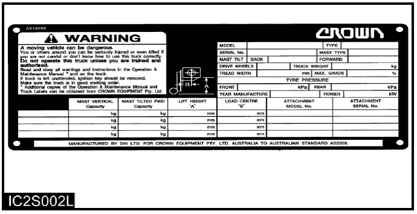
Located on the OVHG in sight of operator.
General Warnings to Operator
Located on the operator's cell.
Warning:
Only trained and authorised personnel may operate this machine. For safe operation, read
and follow the operation and maintenance Manual furnished with this lift truck and observe
the following warnings:
Before starting machine. Check all controls and warning devices for proper
operation.
Refer to machine identification plate for allowable machine capacity. Do not
overload. Operate machines equipped with attachments as partially loaded machines when
not handling a load.
Put directional control or shift lever in neutral before “ON-OFF” switch is turned
on.
Start, turn and brake smoothly. Slow down for turns, slippery or uneven surfaces.
Extremely poor surfaces should be repaired. Avoid running over loose objects or holes
in the roadway surfaces. Use extreme caution when turning on inclines.
Travel with load as low as possible and tilted back. If load interferes with
visibility, travel with load trailing.
On grade operations travel with load up grade.
Watch out for pedestrians and obstructions. Check overhead clearances.
Do not permit riders on forks or machine at any time.
Do not allow anyone to stand or pass under the elevated portion of any
machine.
Be sure operating surface can safely support machine.
Operate machine and attachments only from operator's position.
Do not handle unstable or loosely stacked loads.
Use minimum tilt when picking up or depositing a load.
Use extreme care when handling long, high or wide loads to ensure stability and
durability of the truck.
Forks should be completely under load and spread apart as far as load
permits.
Machine should be equipped with overhead guard or equivalent protection. Where load
requires it, use load backrest extension. Use extreme caution if operating without
these devices.
Parking-Lower lifting mechanism to floor. Put directional control or shift lever in
neutral. Set parking/secondary brake. Turn “ON - OFF” switch off. Chock wheels if
machine is on incline. Disconnect battery when storing electric machines.
Observe safety rules when handling fuel for engine powered machine and when
changing batteries for electric machines.
Avoid overuse of the inching pedal as this may cause the automatic transmission oil
to overheat or the clutch to slip. Do not use as a footrest or for long periods of
time.
If user operates continuously pushing work or both brake pedal and accelerator
pedal were depressed at the same time, it may cause the automatic transmission oil to
overheat or the clutch to slip.
Pressure Warning
Warning:
Contents under pressure may be hot. Allow to cool before opening.
Located on the radiator top tank by the radiator cap.
Hand Placement Warning
Warning:
No hands. Do not place hands in this area. Do not touch, lean on, or reach through the mast or permit others to do so.
Located on the mast.
No Standing On Forks Warning, No Standing Under Forks Warning
Warning:
Do not stand or ride on the forks. Do not stand or ride on a load or pallet on the forks.
Do not stand or walk under the forks.
Located on the lift cylinder.
Load Backrest Must Be In Place Warning
Warning:
Operation without this device in place may be hazardous.
Located on the load backrest.
Overhead Guard Must Be In Place Warning
Warning:
Operation without this device in place may be hazardous. This guard conforms to
A.N.S.I.B56.1 and F.E.M.Section IV.
This design has been tested with an impact of appropriate value.
Located on the Operator’s cell.
No Riders Warning
Warning:
To avoid personal injury, allow no riders. A lift truck is designed for only one operator
and no riders.
Located on the operator's cell.
Moving Fan Warning
Warning:
To avoid personal injury, stay clear of moving fan.
Tilting Cabin Operation Warning
Warning:
To avoid the crash when cabin is tilting, locate truck at wide opening area before tilting
operation
To avoid personal injury, do not put your hands on the side bracket.
Tyre Warning
Warning:
Don't drive for a prolonged period of time continuously.
A tyre can be broken
down due to overheating, if operated for a prolonged period of time and moved to a long
distance. Therefore, make sure to have a break more than 10 minutes every hour to cool
down the tyre temperature.
Wheel nut check
Wheel slip may occur due to an additional gap while the wheel
is secured after the vehicle is shipped out or the tyre is replaced.
Please
check torques of wheel nuts for at least three days, and tighten up more if torques is not
sufficient.
Tyre pressure check
Tyre pressure lower than the specification can cause early
abrasion or break-down. Please check tyre pressure before work and pump air into a tyre,
if tyre press is low.
General Hazard Information
Attach a “Do Not Operate” or similar warning tag to
start switch or controls before servicing or repairing the lift
truck.
Do not start or service the lift truck when a “DO NOT
OPERATE” or similar warning tag is attached to the start
switch or controls.
Wear a hard hat, protective glasses and other protective
equipment as required by job conditions.
Know the width of your attachments so proper clearance can be
maintained when operating near fences, boundary obstacles, etc.
Do not wear loose clothing or jewelry that can catch on controls
or other parts of the lift truck.
Keep the lift truck, especially the deck and steps, free of
foreign material such as debris, oil tools and other items which
are not part of the lift truck.
Secure all loose items such as lunch boxes, tools and other
items which are not part of the lift truck.
Know the appropriate work-site hand signals and who gives them.
Accept signals from one person only.
Always use the overhead guard. The overhead guard is intended to
protect the lift truck operator from overhead obstructions and from
falling objects.
A truck that is used for handing small objects or uneven loads
must be fitted with a load backrest.
If the lift truck must be operated without the overhead guard in
place due to low overhead clearance, use extreme care. Make sure
there is no possibility of falling objects from any adjacent
storage or work area. Make sure the load is stable and fully
supported by the carriage and the load backrest extension (if
equipped).
Do not raise loads any higher than necessary and never raise a
load higher than 1830 mm (72 in) with the overhead guard
removed.
Always use load backrest extension when the carriage or
attachment does not fully support the load. The load backrest
extension is intended to prevent the load or any part of the load
from falling backwards into the operator's station.
When operating the lift truck, do not depend only on flashing
lights or back-up alarm (if equipped) to warn pedestrians.
Always be aware of pedestrians and do not proceed until the
pedestrians are aware of your presence and intended actions and
have moved clear of the lift truck and/or load.
Do not drive lift truck up to anyone standing in front of an
object.
Obey all traffic rules and warning signs.
Keep hands, feet and head inside the operator station. Do not
hold onto the overhead guard while operating the lift truck. Do not
climb on any part of the mast or overhead guard or permit others to
do so.
Do not allow unauthorised personnel to ride on the forks or any
other part of the lift truck, at any time.
When working in a building or dock, observe floor load limits
and overhead clearances.
Notice:
Inhaling Freon gas through a lit cigarette or other smoking method or
inhaling fumes released from a flame contacting Freon can cause
bodily harm or death. Do not smoke when servicing air conditioners
or wherever Freon gas may be present.
This Machine contains 0.5kg of HFC-134a, of which the CO2 equivalent
value is 0.715 tons.
The GWP of HFC-134a is 1,430.
This is only for the trucks with airconditioner option.
The above capacity information written on the film is attached to the
truck.
Never put maintenance fluids into glass containers. Use all
cleaning solutions with care.
Do not use steam, solvent, or high pressure to clean electrical
components.
Report all needed repairs.
When you handle DEF/ad-Blue, wear protective equipment and
observe Precautions for Handling.
Inspect the part of the chain that is normally operated over
the crosshead roller. When the chain bends over the roller, the
movement of the parts against each other causes wears.
Inspect to be sure that chain link pins do not extend outside
of the bore hole.
If any single link pin is extended beyond its connecting
corresponding link, it should be suspected of being broken inside
of its bore hole.
Inspect the chain anchor and the anchor links for wear.
Do not change any factory set adjustment values(including
engine rpm setting) unless you have both authorization and
training. Especially Safety equipment and switches may not be
removed or adjusted incorrectly. Repairs, adjustments and
maintenances that are not correct can make a dangerous operating
condition.
For any checkup, repair, adjustments, maintenance and all other
work concerning your forklift truck, please contact your Time
branch. We would like to draw your attention to the fact that any
secondary damages due to improper handling, insufficient
maintenance, wrong repairs or the use of other than original Time
spare parts waive any liability by Time.
Mounting and Dismounting
Mount and dismount the lift truck carefully.
Clean your shoes and wipe your hands before mounting.
Face the lift truck when mounting and dismounting.
Use both hands face the lift truck when mounting and
dismounting.
Use the handgrips for mounting and dismounting.
Do not try to climb on or off the lift truck when carrying
tools or supplies.
Never get on or off a moving lift truck.
Do not use any controls as handholds when entering or leaving
the operator's station.
Never get on or off a moving lift truck. Never jump off the
lift truck.
Keep hands and steering wheel free of slippery material.
Before Starting the Lift Truck
Perform a walk-around inspection daily and at the start of each
shift. Refer to the topic “Walk-around Inspection” in
“Every 10 Service Hours or Daily” section of this
manual.
Adjust the seat so that full brake pedal travel can be obtained
with the operator's back against the seat back.
Make sure the lift truck is equipped with a lighting system as
required by conditions.
Make sure all hydraulic controls are in the HOLD position.
Make sure the direction control lever is in the NEUTRAL
position.
Make sure the parking brake is engaged.
Make sure no one is standing and/or working on, underneath or
close to the lift truck before operating the lift truck.
Operate the lift truck and controls only from the operator's
station.
Make sure the lift truck horn, lights, backup alarm (if
equipped) and all other devices are working properly.
Check for proper operation of mast and attachments. Pay
particular attention to unusual noises or erratic movement which
might indicate a problem.
Make sure service and parking brakes, steering, and directional
controls are operational.
Make sure all personnel are clear of lift truck and travel
path.
Refer to the topic “Lift Truck Operation” in the
“Operation Section” of this manual for specific
starting instructions.
Starting the Lift Truck
Do not start the engine or move any of the controls if there is
a “DO NOT OPERATE” or similar warning tag attached to
the start switch or controls.
Before Operating the Lift Truck
Test brakes, steering controls, horn and other devices for
proper operation. Report faulty performance. Do not operate lift
truck until repaired.
Learn how your lift truck operates. Know its safety devices.
Know how the attachments work. Before moving the lift truck, look
around. Start, turn and brake smoothly.
An operator must constantly observe his lift truck for proper
operation.
Note:
IF TIER & STAGE CERTIFIED ENGINE equipped, always run the engine at low idle for 5
minutes after starting on, and 5 minutes before key off to prevent from damage of turbo
charger.
Operating the Lift Truck
Always keep the lift truck under control. Obey all traffic rules and warning signs.
Never leave the lift truck with the engine operating, or with the parking brake
disengaged.
Operate the engine only in a well ventilated area.
Lower mast, with or without load, before turning or traveling. Tip over could result.
Watch out for overhead obstructions.
Always observe floor load limits and overhead clearance.
Start, turn, and brake smoothly. Slow down for turns, grades, slippery or uneven surfaces.
Use special care when operating on grades. Do not angle across or turn on grades. Do not
use lift truck on slippery grades. Travel with forks downgrade when unloaded. Travel with
load upgrade.
Do not overload, or handle offset, unstable, or loosely stacked loads. Refer to load
capacity plate on the lift truck. Use extreme caution when handling suspended, long, high or
wide load.
Tilt elevated load forward only when directly over unloading area and with load as low as
possible.
Do not stunt ride or indulge in horseplay.
Always look and keep a clear view of the path of travel.
Travel in reverse if load or attachment obstructs visibility. Use extreme caution if
visibility is obstructed.
Stay in designated travel path, clear of dock edges, ditches, other dropoffs and surfaces
which cannot safely support the lift truck.
Slow down and use extra care through doorways, intersections and other location where
visibility is reduced.
Slow down for cross aisles, turns, ramps, dips, uneven or slippery surfaces and in
congested areas and avoid pedestrians, other vehicles, obstruction, pot holes and other
hazards or objects in the path of travel.
Always use overhead guards except where operation conditions do not permit. Do not operate
lift truck in high stacking areas without overhead guards.
When stacking, watch for falling objects. Use load backrest extension and overhead
guard.
Refer to the topic “Operation Techniques” in the “Operation Section” of this manual.
Loading or Unloading Trucks/Trailers
Do not operate lift trucks on trucks or trailers which are not
designed or intended for that purpose. Be certain truck or trailer
brakes are applied and wheel chocks in place (or be certain unit is
locked to the loading dock) before entering onto trucks or
trailers.
If trailer is not coupled to tractor, make sure the trailer
landing gear is properly secured in place. On some trailers, extra
supports may be needed to prevent upending or corner dipping.
Be certain dock plates are in good condition and properly placed
and secured. Do not exceed the rated capacity of dock boards or
bridge plates.
Lift Truck Parking
When leaving the operator station, park the lift truck in authorised areas only. Do not block
traffic.
Park the lift truck level, with the forks lowered and the mast tilted forward until the
fork tips touch the floor.
Move the direction control lever to NEUTRAL.
Engage the parking brake.
Turn the key switch off and remove the key.
Turn the disconnect switch to OFF(if equipped).
Do operate the disconnecting switch after 30 seconds from start key-off. Otherwise Engine
Control Unit (ECU) can be damaged.
Block the drive wheels when parking on an incline.
Maintenance Information
Perform all maintenance unless otherwise specified as
follows:
Park the lift truck in authorised areas only.
Park the lift truck level, with the forks lowered and the mast
tilted forward until the fork tips touch the floor.
Place the transmission controls in neutral.
Engage the parking brake.
Stop the engine.
Remove the start switch key and turn the disconnect switch OFF
(if equipped).
Block the drive wheels when parking on an incline.
Fluid Penetration
Always use a board or cardboard when checking for a leak.
Escaping fluid under pressure, even a pin- hole size leak, can
penetrate body tissue, causing serious injury, and possible death.
If fluid is injected into your skin, it must be treated by a doctor
familiar with this type of injury immediately.
Crushing or Cutting Prevention
Support equipment and attachments properly when working beneath
them. Do not depend on hydraulic cylinders to hold it up. Any
attachment can fall if a control is moved, or if a hydraulic line
breaks.
Never attempt adjustments while the lift truck is moving or the
engine is running unless otherwise specified.
Where there are attachment linkages, the clearance in the
linkage area will increase or decrease with movement of the
attachment.
Stay clear of all rotating and moving parts.
Keep objects away from moving fan blades. They will throw or cut
any object or tool that falls or is pushed into them.
Do not use a kinked or frayed wire rope cable. Wear gloves when
handling the wire rope cable.
Retainer pins, when struck with force, can fly out and injure
nearby persons. Make sure the area is clear of people when driving
retainer pins.
Wear protective glasses when striking a retainer pin to avoid
injury to your eyes.
Chips or other debris can fly off objects when struck. Make sure
no one can be injured by flying debris before striking any
object.
Falling Objects Protective Structure (FOPS)
This is an attached guard located above the operator's
compartment and secured to the lift truck.
To avoid possible weakening of the Falling Objects Protective
Structure (FOPS), consult a Time branch before altering, by adding
weight to, welding on, or cutting or drilling holes into the
structure.
The overhead guard is not intended to protect against every
possible impact. The overhead guard may not protect against some
objects penetrating into the operator's station from the sides or
ends of the lift truck.
The lift truck is equipped with an overhead guard and FOPS as
standard. If there is a possibility of overhead objects falling
through the guard, the guard must be equipped with smaller holes or
a Plexiglas cover.
Any altering done that is not specifically authorised by Time
invalidates Time's FOPS certification. The protection offered by
this FOPS will be impaired if it has been subjected to structural
damage. Structural damage can be caused by an overturn accident, by
falling objects, etc.
Do not mount any item such as fire extinguishers, first aid kits
and lights by welding brackets to or drilling holes in any FOPS
structure. See your Time branch for mounting guidelines.
Coolant
At operating temperature, the engine coolant is hot and under
pressure. The radiator and all lines to heaters or the engine
contain hot water or steam. Any contact can cause severe burns.
Steam can cause personal injury
Check the coolant level only after engine has been stopped and
the filler cap is cool enough to remove with your bare hand.
Remove the cooling system filler cap slowly to relieve
pressure.
Cooling system additive contains alkali that can cause personal
injury. Avoid contact with the skin and eyes and do not drink.
Allow cooling system components to cool before draining.
Oils
Hot oil and components can cause personal injury. Do not allow
hot oil or components to contact the skin.
At operation temperature, the hydraulic tank is hot and can be
under pressure.
Remove the hydraulic tank filler cap only after the engine has
been stopped and the filler cap is cool enough to remove with your
bare hand.
Remove the hydraulic tank filler cap slowly to relieve
pressure.
Relieve all pressure in air, oil fuel or cooling systems before
any lines, fittings or related items are disconnected or
removed.
Batteries
Batteries give off flammable fumes which can explode.
Do not smoke when observing the battery electrolyte levels.
Electrolyte is an acid and can cause personal injury if it
contacts skin or eyes.
Always wear protective glasses when working with batteries.
Fire or Explosion Prevention
All fuels, most lubricants and some coolant mixtures are
flammable.
Fuel leaked or spilled onto hot surfaces or electrical
components can cause a fire.
Do not smoke while refueling or in a refueling area.
Do not smoke in areas where batteries are charged, or where
flammable materials are stored.
Batteries in series can be located in separate compartments.
When using jumper cables always connect positive(+) cable to
positive(+) terminal of battery connected to starter solenoid and
negative(-) cable from external source to starter negative(-)
terminal.
(If not equipped with starter negative(-) terminal, connect to
engine block.)
See the Operation Section of this manual for specific starting
instructions.
Clean and tighten all electrical connections. Check daily for
loose or frayed electrical wires. Have all loose or frayed
electrical wires tightened, repaired or replaced before operating
the lift truck.
Keep all fuels and lubricants stored in properly marked
containers and away from all unauthorised persons.
Store all oily rags or other flammable material in a protective
container, in a safe place.
Do not weld or flame cut on pipes or tubes that contain
flammable fluids. Clean them thoroughly with nonflammable solvent
before welding or flame cutting on them.
Remove all flammable materials such as fuel, oil and other
debris before they accumulate on the lift truck.
Do not expose the lift truck to flames, burning brush, etc., if
at all possible.
Shields, which protect hot exhaust components from oil or fuel
spray in the event of a line, tube or seal failure, must be
installed correctly.
Do not operate in areas where explosive gases exist or are
suspected.
Fire Extinguisher
Have a fire extinguisher-type BC and 1.5KG minimum capacity-on
rear overhead guard leg with latch and know how to use it. Inspect
and have it serviced as recommended on its instruction plate.
LPG
LPG is poisonous and flammable.
Breathing LPG vapors or repeated contact of LPG with skin can
cause personal injury.
Use LPG only in well-ventilated areas.
Do not smoke while changing LPG cylinders. Use LPG with care to
avoid fires.
Do not store replacement LPG cylinders in living areas or in the
operator's compartment.
Do not store LPG cylinders in direct sunlight or at temperatures
above 39°C (102 °F).
Discard cylinders in a safe place. Do not puncture or burn
cylinders.
Keep LPG cylinders out of the reach of unauthorised
personnel.
Lines, Tubes and Hoses
Do not bend or strike high pressure lines. Do not install bent or damaged lines, tubes or hoses.
Repair any loose or damaged fuel and oil lines, tubes and hoses. Leaks can cause fires. Contact your Time branch for repair or replacement.
Check lines, tubes and hoses carefully. Do not use your bare
hand to check for leaks. Use a board or cardboard to check for
leaks. See Fluid Penetration in the Safety Section for more
details. Tighten all connections to the recommended torque. Replace
if any of the following conditions are found.
End fittings damaged or leaking.
Outer covering chafed or cut and wire reinforcing exposed.
Outer covering ballooning locally.
Evidence of kinking or crushing of the flexible part of hose.
Armoring embedded in the outer cover.
End fittings displaced.
Make sure that all clamps, guards and heat shields are installed correctly to prevent vibration, rubbing against other parts, and excessive heat during operation.
Tyre Information
Explosions of air-inflated tyres have resulted from heat-induced
gas combustion inside the tyres. The heat, generated by welding or
heating rim components, external fire, or excessive use of brakes
can cause gaseous combustion.
A tyre explosion is much more violent than a blowout. The
explosion can propel the tyre, rim and axle components as far as
500 m (1500 ft) or more from the lift truck. Both the force of the
explosion and the flying debris can cause personal injury or death,
and property damage.
Do not approach a warm tyre closer than the outside of the area
represented by the shaded area in the above drawing.
Dry nitrogen(N2) gas is recommended for inflation of tyres. If
the tyres were originally inflated with air, nitrogen is still
preferred for adjusting the pressure. Nitrogen mixes properly with
air.
Nitrogen inflated tyres reduce the potential of a tyre
explosion, because nitrogen does not support combustion. Also,
nitrogen helps prevent oxidation and the resulting deterioration of
rubber and corrosion of rim components.
Proper nitrogen inflation equipment and training in its use are
necessary to avoid over inflation. A tyre blowout or rim failure
can result from improper or misused equipment.
Stand behind the tread and use a self-attaching chuck when
inflation a tyre.
Servicing, changing tyres and rims can be dangerous and should
be done only by trained personnel using proper tools and
procedures. If correct procedures are not followed while servicing
tyres and rims, the assemblies could burst with explosive force and
cause serious personal injury or death. Follow carefully the
specific information provided by your tyre or rim servicing
personnel or branch.
Time forklift is equipped with wheels from different
manufacturers.
Please re-use the original parts of the existing wheel, if there
is no deformation of the wheel after checked. Mixing up new and old
parts may cause incomplete assembly that might lead to unexpected
dismantlement of parts and accident.
Warning Signs and Labels
Your Time lift truck has the following tipover warning decals.
Make sure that you can read all safety signs. Clean or replace
these if you cannot read the words or see the pictures. When
cleaning the labels use a cloth, water and soap. Do not use
solvent, gasoline, etc. You must replace a label if it is damaged,
missing or cannot be read. If a label is on a part that is
replaced, make sure a new label is installed on the replaced part.
See you Time Lift Truck branch for new labels.
The most effective method of preventing serious injury or death
to yourself or others is to familiarise yourself with the proper
operation of the lift truck, to be alert, and to avoid actions or
conditions which can result in an accident.
Warning:
Tipover can occur if the truck is improperly operated. In the event of a tipover, injury or death could result.
The “Survive in tipover” warning is located on the overhead guard. It shows the proper use of the operator restraint system.
Seat Adjustment
Move the lever, slide the seat to the desired position, and
release the lever.
Adjust the seat before operating the lift truck. After
adjusting, set the seat to make sure it is properly locked. DO NOT
adjust the seat while the truck is in motion.
Warning:
Do NOT put your hand under the seat. It could cause a serious injury by the seat
fluctuation
Notice:
Before getting on the truck, adjust the force of the suspension using the grip in the front
of the seat.
Warning:
In case of folding or unfolding the backrest of seat, watch out your finger.
The finger could be pinched between the side bracket and the backrest.
Adjust the height of the seat by pulling/pushing the lever up
and down. The maximum range of height adjustment is 60 mm in 4
steps (15 mm/step). For fine adjustment, adjust the height while
depressing by hand. After adjusting the seat, make sure it is
properly locked.
Seat Belt
The Operator Restraint System, Prevents the operator from
jumping from the operator’s compartment in the event of a
forward or side tipover. The system is designed to keep the
operator on the seat and in the operator’s compartment in the
event of a tipover.
Inspection
If the seat belt is torn, if pulling motion is interrupted
during extension of the belt, or if the belt cannot be inserted
into the buckle properly, replace the seat belt assembly.
Belt Maintenance – Every 500 service hours. Check that
the belt fastening works properly and that winding device is free
from run lock when jerked. Check that the belt is suitably fastened
to the seat. Check that the seat is correctly secured to the hood
and the chassis. On visual inspection, fastenings must be intact,
otherwise, contact the safety manager.
Warning:
Your Time truck comes equipped with a Time operator restraint
system. Should it become necessary to replace the seat for any
reason, it should only be replaced with another Time operator
restraint system.
In the event of a tipover, the seat and restraint system should
be inspected for damage and replaced, if necessary.
Note:
Operator restraints shall be examined at the regular truck
service intervals. It is recommended that they be replaced if any
of the following conditions are found:
Cut or frayed strap
Worn or damaged hardware including anchor points
Buckle or retractor malfunction
Loosen stitching
Note:
The seat belt may cause the operator to bend at the waist. If
you are pregnant or have suffered from some abdominal disease,
consult a doctor before you use the seat belt.
Fasten the Seat Belt
Grip the plate (connector) of the belt and pull the belt from
the retractor. Then insert the plate into the slot of the buckle
until a snap is heard. Pull on the belt to confirm it is
latched.
Make sure the belt is not twisted.
Warning:
If you fasten the belt across your abdomen, the belt may injure
your abdomen in an accident.
Be sure to fasten the belt across your hips, not across your
abdomen.
Note:
The belt is designed to automatically adjust to
your size and movement. A quick pull on the belt will confirm that
the automatic adjuster will hold the belt position in the event of
an accident.
Release the Seat Belt
Push the button of the buckle to release the belt. The belt will
automatically retract when released. Hold the plate of the belt and
allow the belt to slowly retract.
Lift Truck Stability
Counterbalanced lift truck design is based on the balance of two
weights on opposite sides of a fulcrum (the front axle). The load
on the forks must be balanced by the weight of the lift truck. The
location of the centre of gravity of both the truck and the load is
also a factor. This basic principle is used for picking up a load.
The ability of the lift truck to handle a load is discussed in
terms of centre of gravity and both forward and sideways
stability.
Centre of Gravity (CG)
The point within an object, at which the whole weight of the
object may be regarded as being concentrated, is called the centre
of gravity or CG. If the object is uniform, its geometric centre
will coincide with its CG. If it is not uniform, the CG could be at
a point outside of the object. When the lift truck picks up a load,
the truck and load have a new combined CG.
Stability and Centre of Gravity
The stability of the lift truck is determined by the location of
its CG; or, if the truck is loaded, the combined CG of the truck
and load. The lift truck has moving parts and, therefore, has a CG
that moves. The CG moves forward or backward as the mast is tilted
forward or backward. The CG moves up or down as the mast moves up
or down. The CG and, therefore, the stability of the loaded lift
truck, are affected by a number of factors such as:
the size, weight, shape and position of the load
the height to which the load is lifted
the amount of forward or backward tilt
tyre pressure
dynamic forces created when the lift truck is accelerated,
braked or turned
condition and grade of surfaces on which the lift truck is
operated
These same factors are also important for unloaded lift trucks.
They tip over sideways easier than a loaded lift truck carrying its
load in the lowered position.
Lift Truck Stability Base
For the lift truck to be stable (not tip over forward or to the
side), the CG must stay within the area of the lift truck stability
base – a triangular area between the front wheels and the
pivot of the steer wheels. If the CG moves forward of the front
axle, the lift truck will tip forward. If the CG moves outside of
the line on either side of the stability base, the lift truck will
tip to the side.
Warning:
Dynamic forces (braking, acceleration, turning) also affect
stability and can produce tipover even when the CG is within the
stability triangle.
Capacity Load (Weight and Load Centre)
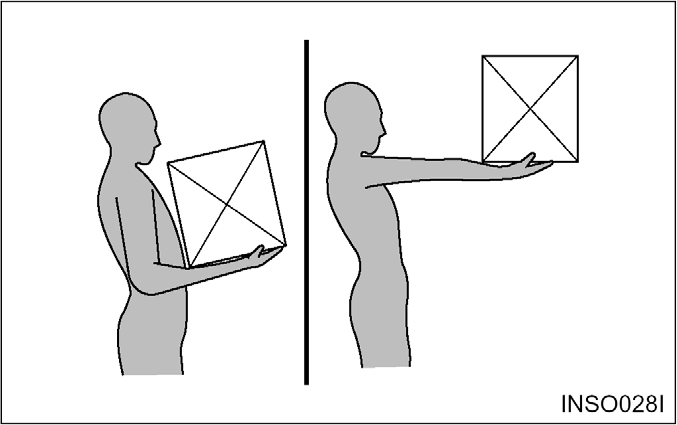
The capacity load of the lift truck is shown on the
capacity/nameplate riveted to the truck. It is determined by the
weight and load centre. The load centre is determined by the
location of the CG of the load.
The load centre shown on the nameplate is the horizontal
distance from the front face of the forks, or the load face of an
attachment, to the CG of the load. The location of the CG in the
vertical direction is the same as the horizontal dimension.
Remember that, unless otherwise indicated, the capacity load
shown on the nameplate is for a standard lift truck with standard
backrest, forks and mast, and having no special-purpose attachment.
In addition, the capacity load assumes that the load centre is no
further from the top of the forks than it is from the face of the
backrest. If these conditions do not exist, the operator may have
to reduce the safe operating load because the truck stability may
be reduced. The lift truck should not be operated if its
capacity/nameplate does not indicate capacity load.
Note:
If the load is not uniform, the heaviest portion should be placed closer to the backrest
and centreed on the forks.
Notice:
Capacity/Nameplates originally attached to forklifts sold by Time shall not be removed,
altered or replaced without Time’s approval.
Time assumes no responsibility for lift trucks placed in service without a valid Time
Nameplate.
If necessary to change your specification, contact your Time lift truck branch.
Emergency Lowering Guide
Warning:
In case that it is impossible to lower the carriage assembly by the lift lever, the
carriage assembly can be lowered by using the emergency lowering valve located on Frame (see
Figure). When lowering the carriage assembly by using this emergency lowering valve, serious
injury can result if anyone is under or near the carriage assembly.
To us the emergency lowering valve, follow these step.
Turn off the engine
Open the cabin by using the cabin tilting function.
Turn the nut and screw of the emergency lowering valve slowly
to a counterclockwise for two rotations. Then the carriage assembly
will be lowered slowly.
When the carriage assembly has been lowered to the ground,
tighten the screw of this valve and nut to clockwise for preventing
the drift through this valve.
Close the cabin by using the cabin tilting function or assemble
the cover.
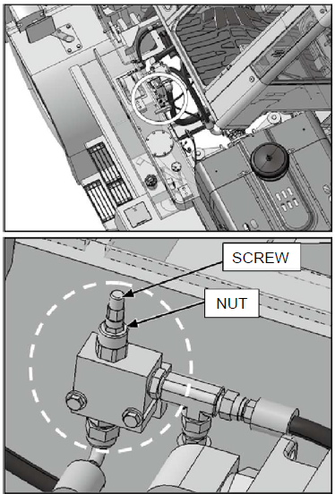
EMERGENCY LOWERING VALVE
Safety Rules
Only properly trained and authorised personnel should operate
forklift trucks. Wear a hard hat and safety shoes when operating a
lift truck. Do not wear loose clothing.
Inspect and check the condition of your forklift truck using
the operator's check list before starting work. Immediately report
to your supervisor any obvious defects or required repairs.
Do not operate your truck in unauthorised areas.
Know your forklift truck and think safety.
Do not compromise safety.
Follow all safety rules and read all warning signs.
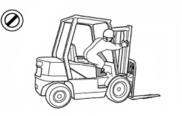
Do not operate a lift truck unless you are in the
operator’s seat. Keep hands and feet inside the
operator’s compartment. Do not put any part of the body
outside of the operator’s compartment. Never put any part of
body into the mast structure or between the mast and the truck
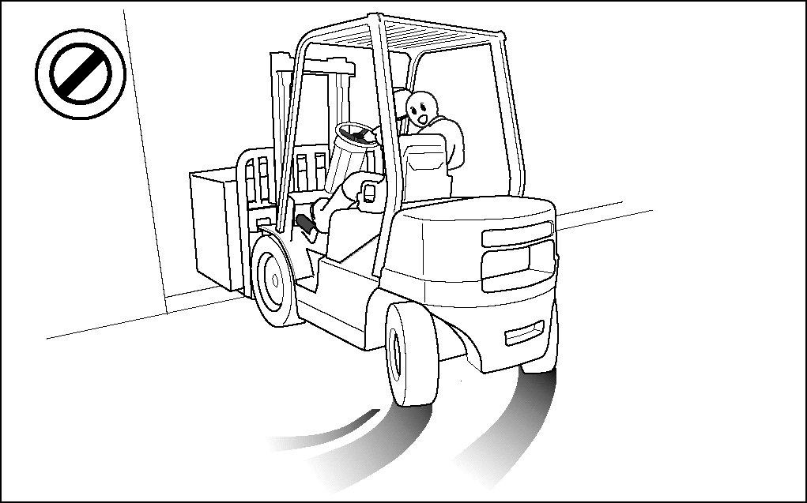
Do not start, stop, turn or change direction suddenly or at
high speed. Sudden movement can cause the lift truck to tip over.
Slow the speed of your truck and use the horn near corners, exits,
entrances, and near people.
In case of a truck with the steering knob, Do not operate the
steering knob suddenly, to prevent accident caused by quick
turning.
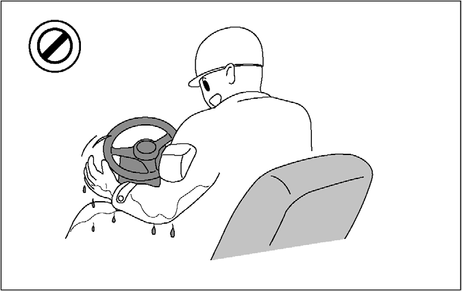
Never operate a lift truck with wet hands or shoes. Never hold
any controls with grease on your hands. Your hands or feet will
slide off of the controls and cause an accident.
Do not raise anyone on the forks of your lift truck unless
using an approved safety cage.
Do not let other people ride on the truck.
Lift trucks are designed to carry loads, not people.
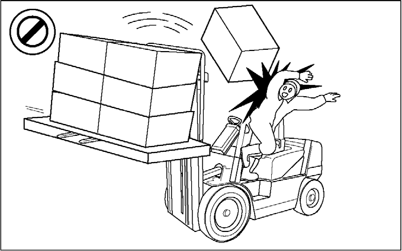
Do not operate your truck without the load backrest extension
and overhead guard. Keep the load against the backrest with the
mast tilted backward
Do not lift or move loads that are not safe. Do not pick up an
off centre load. Such a load increases the possibility of a tipover
to the side. Make sure loads are correctly stacked and positioned
across both forks. Always use the proper size pallet. Position the
forks as wide as possible under the load. Position loads evenly on
the forks for proper balance. Do not lift a load with one
fork.
Do not overload. Always handle loads within the rated capacity
shown on the capacity plate.
Do not add extra counterweight to the truck. An overload can
cause the truck to roll over and cause injury to personnel and
damage to the lift truck.
Do not drive on soft ground.
Observe all signs, especially those on maximum permitted floor
loadings, elevator capacities and clearance heights.
Handle loads carefully and check them closely for stability and
balance.
Do not drive on slippery surfaces.
Sand, gravel, ice or mud can cause a tipover. If unavoidable,
slow down.
Do not permit anyone to stand or walk under the load or lifting
mechanism. The load can fall and cause injury or death to anyone
standing below.
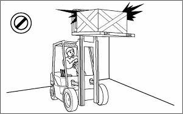
Look out for overhead obstructions when raising or stacking
loads. Do not travel with a raised load. Do not travel with the
mast raised. The lift truck can roll over and cause injury or death
to you or other personnel.
Do not move loose loads that are higher than the load
backrest.
Be alert for falling loads when stacking.
Travel with the load tilted back and the forks as low as
possible.
This will increase stability to the truck and load and permit
better visibility for you.
Do not elevate the load with the mast tilted forward. Do not
tilt the elevated loads forwards.
This will cause the lift truck to tip over forward.
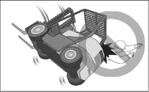
Do not jump off if your truck starts to tip over. Stay in your
seat to survive.
Go up ramps in forward direction and down ramps in reverse
direction when moving loads.
Never elevate a load with the forklift truck on an
incline.
Go straight off and straight down. Use an assistant when going
up or down a ramp with a bulky load.
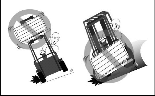
Do not stack or turn on ramps.
Do not attempt to pick-up or deposit a load unless the lift
truck is level. Do not turn on or drive across an incline.
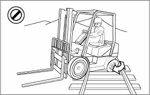
Do not go over rough terrain. If unavoidable, slow down.
Cross railroad tracks slowly and diagonally whenever possible.
A railroad crossing can give a loaded forklift truck a real jolt.
For smoother crossing, cross the railroad diagonally so one wheel
crosses at a time.
Avoid running over loose objects.
Look in the direction of travel. Look out for other persons or
obstructions in your path of travel.
An operator must be in full control of his lift truck at all
times.
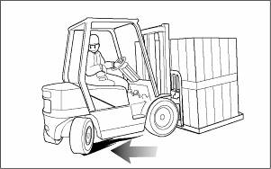
Do not drive in forward direction when loads restrict your
visibility. Operate your lift truck in reverse to improve
visibility except when moving up a ramp.
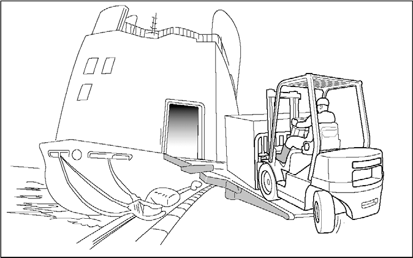
Be careful when operating a lift truck near the edge of a
loading dock or ramp. Maintain a safe distance from the edge of
docks, ramps and platforms. Always watch tail swing.
The truck can fall over the edge and cause injury or
death.
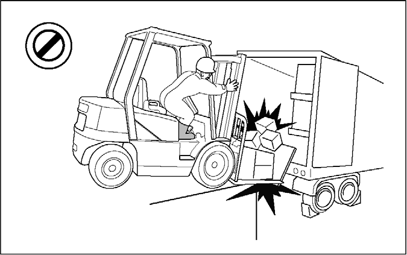
Do not operate on bridge plates unless they can support the
weight of the truck and load.
Make sure that they are correctly positioned.
Put blocks on the vehicle you enter to keep it from
moving.
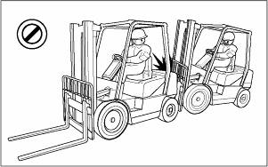
Do not operate your truck close to another truck. Always keep a
safe distance from other trucks and make sure there is enough
distance to stop safely. Never overtake other vehicles.
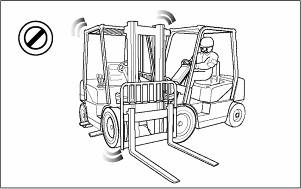
Do not use your lift truck to push or tow another truck.
Do not let another push or tow your truck.
If a truck will not move, call a service technician.
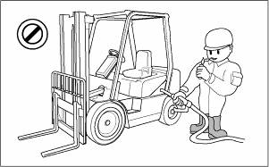
Forklift trucks may only be refueled at specially reserved
locations. Switch off the engine when refueling.
Smoking and handling of naked flames during refueling are
strictly prohibited. This prohibition also applies during the
changing of the LPG (liquefied propane gas) tank.
Mop up spilt fuel and do not forget to close the fuel tank
before restarting the engine.
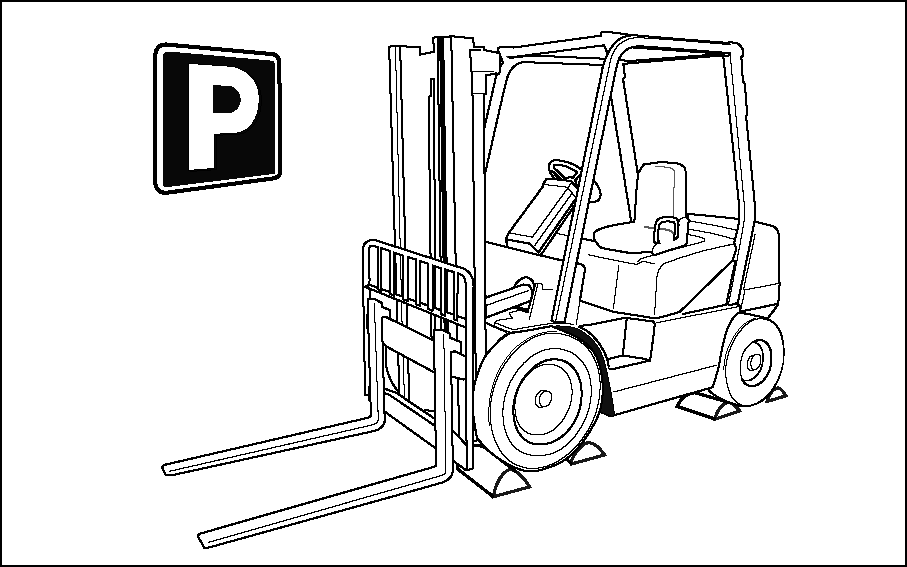
Park your lift truck in authorised areas only. Fully lower the
forks to the floor, put direction lever in NEUTRAL position, engage
the parking brake, and turn the key to the OFF position. Remove the
key and put blocks behind the wheels to prevent the truck from
rolling. Shut off your forklift truck when leaving it
unattended.
Check the condition of your forklift truck after the day's
work.
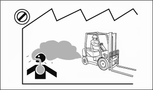
Exhaust from all internal combustion engines contains carbon
monoxide, a colorless, odorless, tasteless, poisonous gas. Exposure
to carbon monoxide can cause serious injury or health problems,
including death. and avoid unnecessary idling of the engine. If
nausea, dizziness or headaches are experienced stop the truck and
seek fresh air.
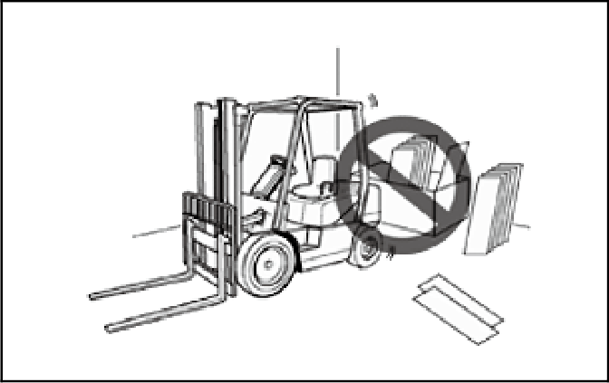
Do not operate forklifts near flammable or combustible
materials.
To avoid the discoloration, deformation or combustion of
materials (such as lumber, veneer board, paper products and other
similar items), always park at least 30 cm (12 inches) away from
them.
Forklift trucks are not cars. They often have small tyres, no
suspension, and are very heavy.
The forklift's centre of gravity will also change when carrying
loads.
Avoid uneven bumps, pot holes and other hazards whenever
possible.
Carrying a load suspended on a chain or a cable may unbalance a
truck.
Take extra care around pedestrians with a suspended load as it
may sway or even strike them.
An unloaded forklift may be easier to tip over than a loaded
truck.
When traveling without a load, the risk of lateral overturn is
greater.
There are many special attachments available to replace the
forks on a lift truck.
All carry safety implications and special training in their
operation is highly recommended.
The counterweight draw bar should not be used for towing the
forklift or for towing another forklift.
Towing is only advised in emergencies, by trained operators and
at low speed, no faster than 2 km/h, to a convenient location for
repair.
How to Survive in a Tipover
Warning:
In the event of a tipover, the risk of serious injury or death will be reduced if the
operator is using the operator restraint system and follows the instructions provided.
Always use operator restraint system.
Don’t jump.
Hold on tight.
Brace your feet and keep them within the operator’s
compartment.
Lean away from the direction of fall.
Lean forward.
Specifications
CHRACTERISTICS
1
Model
CD100S-7(TIERIV)
CD120S-7(TIERIV)
CD140S-7(TIERIV)
2
Capacity
at rated load centre
kg
10,000
12,000
14,000
3
Load centre
distance
mm
600
600
600
4
Power type
electric, diesel, gasoline, lp-gas
diesel
diesel
diesel
5
Operator type
stand-on, rider-seated
driver-seated
driver-seated
driver-seated
6
Tyre type
C = cushion, P = pneumatic
Pneumatic
Pneumatic
Pneumatic
7
Wheels (X = driven)
number, front/rear
2x2/2
2x2/2
2x2/2
DIMENSIONS
8
Lift with STD
maximum fork height
mm
3,000
3,000
3,000
9
two-stage mast
free lift
mm
0
0
0
10
Forks
thickness x width x length
mm
70x200x1,350
80x200x1,350
85x200x1,350
11
fork spacing (minimum x maximum)
mm
470x2,140
470x2,140
470x2,290
12
Tilt of mast
forward/backward
deg
15/12
15/12
15/12
13
Overall dimensions
length to fork face
mm
4,490
4,505
4,830
14
width(dry/wet brake)
mm
2,350
2,350
2,490
15
mast lowered height
mm
2,970
2,970
3,170
16
mast extended height
mm
4,470
4,470
4,670
17
to top cabin(overhead guard)
mm
2,990(2,890)
2,990(2,890)
3,050(2,950)
18
seat height
mm
1,825
1,825
1,885
19
Minimum outside turning radius
mm
4,290
4,290
4,620
20
Load moment constant
mm
755
770
815
21
90。stacking aisle
add load length and clearance
mm
5,045
5,060
5,435
21
a
90。intersecting aisle
mm
4,090
4,090
4,380
PERFORMANCE
22
Speeds
travel, loaded/unloaded
km/hr
34/37
33/36
26/30
23
lift, loaded/unloaded
mm/s
410/470
400/470
370/430
24
lowering, loaded/unloaded
mm/s
430/410
430/410
430/410
tilt-front, loaded/unloaded
degree/s
3.0/3.0
3.0/3.0
3.0/3.0
tilt-back, loaded/unloaded
degree/s
2.5/2.5
2.5/2.5
2.5/2.5
25
Drawbar pull
at 1.6km/h, loaded
kg
9,430
9,350
10,590
26
Gradeability
at 1.6km/h, loaded
%
42
36
36
WEIGHT
27
Total weight
unloaded
kg
15,190
16,190
17,995
28
Axle load
with loaded
front/rear
kg
21,985/3,205
24,960/3,230
28,630/3,365
29
without loaded
front/rear
kg
7,470/7,720
7,480/8,710
8,640/9,355
CHASSIS
30
Tyres
number of front/rear
4/2
4/2
4/2
31
size, front single
10.00X20-16PR
10.00X20-16PR
10.00X20-18PR
32
size, rear
10.00x20-16PR
10.00x20-16PR
10.00x20-18PR
33
Wheelbase
mm
3,000
3,000
3,250
34
Tread
front/rear
mm
1,724/1,860
1,724/1,860
1,825/1,910
35
Ground clearance
loaded, at the lowest point
mm
270
270
270
36
loaded, at centre of wheelbase
mm
360
360
370
37
Brakes
Service brake
Foot/wet disc
Foot/wet disc
Foot/wet disc
38
Parking brake
Hand/Hydraulic
Hand/ Hydraulic
Hand/ Hydraulic
DRIVE
39
Battery
voltage/capacity
V-AH
24(12X2)-100
24(12X2)-100
24(12X2)-100
40
Engine
manufacturer/model
DI/DL06P
DI/DL06P
DI/DL06P
41
rated output (at rpm)
(DIN)
ps/rpm
175/2,100
(128.7/2,100)
175/2,100
(128.7/2,100)
175/2,100
(128.7/2,100)
42
max. torque
kg·m/rpm
74/1,400
74/1,400
74/1,400
43
cycle/cylinders/displacement
cc
4/6/5,890
4/6/5,890
4/6/5,890
44
Gear shift
type
Autoshift
Autoshift
Autoshift
45
no. speeds, forward/reverse
3/3
3/3
3/3
46
Operating pressure
system/attachment
bar
190/160
210/160
210/160
CD160S-7(TIERⅣ)
1
16,000
2
600
3
diesel
4
driver-seated
5
Pneumatic
6
2x2/2
7
3,000
8
0
9
85x200x1,350
10
470x2,290
11
15/12
12
4,830
13
2,490
14
3,170
15
4,670
16
3,050(2,950)
17
1,885
18
4,620
19
815
20
5,435
21
4,380
21a
25/29
22
360/430
23
430/410
24
3.0/3.0
2.5/2.5
11,420
25
31
26
18,995
29
31,525/3,470
30
8,665/10,330
31
4/2
32
10.00X20-18PR
33
10.00x20-18PR
34
3,250
35
1,825/1,910
36
270
37
370
38
Foot/wet disc
39
Hand/Hydraulic
40
24(12X2)-100
41
DIC/DL06P
42
175/2,100
(128.7/2,100)
43
74/1,400
44
4/6/8,701
45
Autoshift
46
3/3
47
225/160
48
Capacity Chart
Warning:
The load capacity of lift truck should never be exceeded. Overloading of the lift truck
could : Be a hazard to the safety of others, material, or damage the truck.
Without Side Shifter
With Side Shifter
Noise
Model
Noise Level [Unit : dB(A)]
Sound Pressure Level at Operator’s ear (Leq.)
Sound Pressure Level at By-stander position (AS
3713)
Guaranteed Sound Power Level (LWA) by new Directive 2000/14/EC
AS 3713
prEN 12053
Drive-By
Lifting Mode
CD100/120/140
/160S-7
W/O Cabin
78.3
82.8
83
86
104
With Cabin
75.0
75.0
83
84
104
* Test Model: CD160S-7
Vibration (weighted overall value)
Unit: m/sec2
Model
Measuring Place
Seat
Steering Wheel
Floor Plate
CD100/120S-7
0.28
0.27
0.45
CD140/160S-7
0.2
0.25
0.3
* Test course: Concrete road
Serial Number Locations
For quick reference, record your lift truck's serial numbers in
the spaces provided below the photographs.
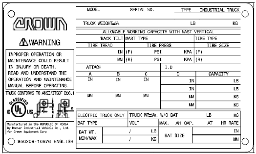
Typical Example
Lift Truck Serial Number
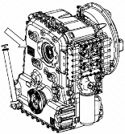
Typical Example
Transmission Serial Number
5.9 liter(DL06) Diesel Engine Serial Number.
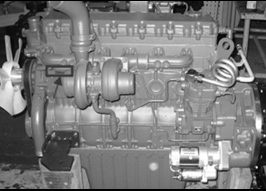
Typical Example(DL06 Engine)
Operator’s Warning and
Identification Plate
Familiarise yourself with the OPERATOR’S WARNING Plate and
IDENTIFICATION, LIFT CAPACITY and ATTACHMENT PLATES. DO NOT exceed
Capacity as equipped load ratings.
Warning:
The load capacity of lift truck should never be exceeded. Overloading of the lift truck
could be a hazard to the safety of others, material, or damage the truck.
Operator's Warning Plate
Typical Example
Located on the left of rear cabin/overhead guard.
Identification, Lift Capacity and Attachment Plate
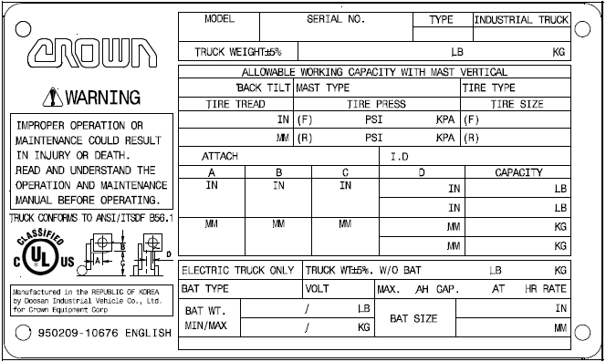
Typical Example
Located on the operator’s cell.
Lift Truck Capacity Rating
DO NOT exceed allowable lift truck working capacity load
ratings.
The capacity of the lift truck is given by weight and distance
to the load centre. For example: a capacity of 1200kg(2540 lb) at
600mm(24in) means that the lift truck can lift 1200kg(2640lb) if
the load centre is 600 mm (24in) from both the vertical and
horizontal faces of the forks.
Before attempting to lift any load, ensure that the weight and
load centre combination is within the capacity of the lift truck as
shown on the capacity rating plate. To determine the load centre,
measure the distance from the face of the carriage to the
gravitational centre of the load.
The rated capacity on the plate refers to the capacity of the
lift truck as it left the factory. Subsequent changes of any form
to the equipment or battery can alter the lift truck’s
rating.
The rated capacity of the lift truck applies to operating
conditions where the lift truck is on level ground. The capacity of
the lift truck is reduced on inclines.
Mast Abbreviations
Below are abbreviations that may appear on the Identification,
Lift Capacity and Attachment Plate and their meanings
STD - Standard Mast (single inner member, low
free lift)
FF - Full Free Lift Mast (single inner member
with high free lift duplex cylinder)
FFT - Triple Lift Mast (two inner members) with
either low or full free lift characteristics.
QUAD - Quadruple (Quad) Mast(with three inner
members)
Note:
When only a mast-type is listed on the
identification plate, a standard carriage and forks are used.
Attachment Abbreviations (includes Special Forks)
SC- Special Carriage-increased width, height or
outreach
SSS - Shaft-type Sideshift Carriage
HSS - Hook-type Sideshift Carriage (ITA)
CW - Counterweight
SF - Special Forks
SWS - Swing Shift, Sideshift
RAM - Ram or Boom
DBCBH - Double Cube Block Handler
HFP - Hydraulic Fork Positioner
CR - Crane Arm or Crane Boom
TH - Tyre Handler
CTH - Container Handler
LPP - Load Push-Pull Device
CC - Carton Clamp
RC - Roll Clamp
LS - Load Stabiliser
PWH - Pulp Wood Handler
SS-ST - Sideshift-Side Tilt Carriage
Operator’s Station and
Monitoring Systems
(CABIN)
(OVERHEAD GUARD)
1 The Right Side Dash Board (Cabin)
A- Instrument Panel
1. Upper Indicator Light
2. Air Cleaner Indicator Light
3. Alternator Indicator Light
4. Diesel Engine Start Preheat Indicator Light
5. Moisture separator warning light
6. Front Flood Light
7. Engine Oil Pressure Indicator Light
8. Parking Indicator Light
9. Blank
10. Seat Belt Warning light
11. Seat Leaving Warning Light
12. Blank
13. Engine Malfunction Indicator Light
14. Directional Turning Indicator Lights
15. Hour Counter
16. Fuel Level Gauge
17. Engine Coolant Gauge
18. Transmission Oil Temperature Gauge
(1) Upper Indicator Light
Indicates the upper indicator light is on.
(2) Air Cleaner Indicator Light
Indicates that the air filter is blocked. If the light stays on
after starting the engine, stop the engine, remove the air filter
element and clean it thoroughly using compressed air. Refit the
filter, and check that the light goes out when the engine is
started.
(3) Alternator Indicator Light
Indicates if the battery charging system is operational. The
light will come on when the ignition switch is turned to the ON
position.
The light should go off after the engine is started, indicating
the alternator is producing sufficient voltage to charge the
battery. If the light turns on with the engine running, check the
alternator charging system for a malfunction.
(4) Diesel Engine Start Preheat Indicator Light
The light will come ON when the key is turned to the ON position
from the OFF position. This indicates that the glow plugs are
preheating the pre-combustion chambers for easier starting.
The amount of time needed to preheat the pre- combustion
chambers is approximately seven seconds, depending on the
surrounding air temperature. When the light goes OFF the maximum
pre-combustion chamber temperature has been reached and the key can
be turned to the START position to start the engine.
(5) Moisture separator warning light
The light will be turned on if humidity reaches a certain level
in the fuel filter. In this case, loosen screws under the fuel
filter and remove moisture.
(6) Front Floodlights
Push down on the switch to the first step, to turn on the front
floodlights.
(7) Engine Oil Pressure Indicator Light
Indicates insufficient engine oil pressure.
The light will come on when the ignition switch is turned to the
ON position. The light should go off after the engine is started.
If the light turns on while operating the lift truck, insufficient
engine oil pressure is indicated. Park the lift truck and stop the
engine.
(8) Parking indicator light
Turned on when the parking switch is pressed.
Warning:
Flashing parking indicator lamp (8) warns a malfunction detected
in the charging function of the brake system which can lead to a
serious accident. Stop the operation and call the nearest branch to
check up the brake system.
(10) Seat Belt Warning Light
Indicates when the seat belt dose not fastened by operator
The light will come on when the ignition switch is turned to the
ON position. The light should go off after engine is started.
(11) Seat Leaving Warning Light
When operator leaves seat without engine stop, hydraulic control
lever cannot operate for 3 seconds.
(13) Engine Malfunction Indicator Lamp
The engine control system is equipped with built-in fault
diagnostics. Detected system faults can be displayed by the
Malfunction Indicator Lamp (MIL) as Diagnostic Fault Codes (DFC) or
flash codes, and viewed in detail with the use of service tool
software. When the ignition key is turned ON the MIL will perform a
self-test, illuminate once and then go OFF. If a detected fault
condition exists, the fault or faults will be stored in the memory
of the engine control unit (ECM). Once a fault occurs the MIL will
illuminate and remain ON. This signals the operator that a fault
has been detected by the ECU. The error code is displayed in
figures on the LCD in the left side dash board
(14) Directional Turning Indicator Light
Pull the lever to activate the right turn signal. Push the lever
to activate the left turn signal.
(15) Hour Counter
Indicates the total number of hours the engine and the lift
truck have operated. The hour meter will operate when the ignition
switch is in the ON position, whether the engine is running or
not.
The hour meter is used to determine lubrication and maintenance
intervals.
(16) Fuel Level Gauge
Indicates the level of the fuel in the fuel tank
(17) Engine Coolant Gauge
Indicates coolant temperature. If the pointer moves beyond the
green band while operating the lift truck, overheating is
indicated. Park the lift truck and stop the engine.
Check the cooling system for a malfunction. The point will be at
the end of the green band when the coolant temperature reaches
approximately 103°C(217°F) on all engines.
(18) Transmission Oil Temperature Gauge
Indicates transmission oil temperature. If the pointer moves
beyond the green band while operating the lift truck, excessive
transmission oil temperature is indicated. Park the lift truck and
stop the engine.
Check the system for a malfunction. The pointer will be at the
end of the green band when the transmission oil temperature reaches
approximately 120°C (248°F).
B- Speed Meter
Indicates the truck travelling speed (km/h).
C-Engine Ignition Start Switch
The key switch is a three position switch. Position (1) is
ACCESSORY OFF. Position (2) is On/Ignition.
Position (3) is START, which engages the starter.
After the key has been turned to the START position, the key
must be returned to the OFF position before it can be turned to the
START position again.
D-Console Tilt Angle Control Lever
Typical Example
The tilting angle of the steering wheel is adjustable within a
range of 6 degrees to suit individual operators. The steering
column is unlocked by turning the lever counter clockwise and
locked by turning it clockwise.
E-Console Up/Down Control Lever (if installed)
Typical Example
Pull the indicated lever to move up/down the steering handle to set the most comfortable
driving position and then, fix the lever.
2 The Left Side Dash Board (Cabin)
A) Engine stop switch
Press this switch to stop the engine
When emergency status, for example, you cannot stop engine in spite of key switch
“OFF,” push this switch. You can STOP the engine.
B) Emergency lamp switch
This switch operates the emergency lamp which indicates emergency status to other vehicles.
C) LCD Display
Tachometer (RPM GAUGE)
Display engine RPM with 1/1000 unit.
MULTI TORQUE MODE for engine
With the switch off, the engine reaches the maximum speed when the
accelerator pedal is fully pressed. With the switch on, the engine’s speed is
limited to a maximum rpm of 2,100. In the case where the vehicle is used mainly
for driving, using this switch reduces fuel consumption by approximately
10%.
ODOMETER
Accumulated total mileage.
WARNING LAMP
Warning Lamp for Transmission and engine etc.
DEF/Ad-Blue LEVEL GUAGE
Display DEF/Ad-Blue Level, residual quantity of DEF/Ad-Blue in DEF/Ad-Blue
Tank (DEF /Ad- Blue: Fluid for SCR Cleaning – DeSOx)
ENTER (SELECT)
Key for operating LCD Display.
DOWN (RIGHT)
Key for operating LCD Display.
UP (LEFT)
Key for operating LCD Display.
MODE (BACK)
Key for operating LCD Display by pressing button.
DIRECTION (T/M STATUS)
Display Status for direction. “N” or “F” or “R”
SPEEDOMETER
Display the current vehicle speed.
GEAR DISPLAY (AUTO / MANUAL)
The gear range indicator bars will indicate which gear is selected by displaying the corresponding number of bars. The forward and reverse indicator
bars will be "OFF” when the transmission is in "MANUAL MODE". When transmission is
in "AUTOMATIC MODE", all the gear range indicator bars and both travel direction
indicators will be "ON".
DEF/Ad-Blue Level Indicator
Indicator lamps for DEF/Ad-Blue Level
Over 10%: Green ON
5~10%: Yellow ON
.Below 5%: Red Blink
Speed limit Symbol
If speed limit option selected, the symbol is on.
Gear limit Symbol
If gear limit option selected, the symbol is on.
DEF/Ad-Blue FAULT WARNING
If the lamp is turned on, after-treatment system should be checked.
Refer page. 82 (Section “Detecting control failure)
SCR Cleaning-DeSOx Request / On
“Service SCR Cleaning-DeSOx” is required for removing sulphur oxides inside
SCR material. “Service SCR Cleaning-DeSOx” process occurs, the vehicle cannot
be used.
Pop-up window and the lamp will be turned on 10 hours before if “Service SCR
Cleaning-DeSOx” needed.
“Service SCR Cleaning-DeSOx” will take about 30 minutes; the lamp will blink
during the process.
Press the “SCR Cleaning-DeSOx” switch continuously for 3 sec, SCR cleaning
will be started. For detailed instructions refer to p.69.
SCR Cleaning-DeSOx Inhibition
When the symbol is turned on and “Active SCR Cleaning-DeSOx” is inhibited
by pressing the inhibition switch. In places where there is a risk of fire or
explosion, to prevent fire or explosion caused by flammable substances or
particles inhibition switch should be used.
Exhaust Gas Temp High
While SCR Cleaning-DeSOx for after-treatment, the temperature of exhaust
gas will increase over 600°C. If this lamp on, operator should warn passengers
around the truck not to approach or touch exhaust system especially rear side. And
if the place of your truck has flammable material (Gas, Particle etc.) please
replace truck to other safety zone.
Weight Scale Mode
Press “MODE” once, Display will change to weight scale mode, for detailed
instructions, refer to page 62.
Engine Check Lamp (RED)
Malfunction or necessary for diagnostic of engine, this lamp will light
on.
To check error, press “MODE” 3 seconds, display will converse to main menu
then you can use check function. For detailed instructions refer to p.59.
Transmission Check Lamp (RED)
Malfunction or necessary for diagnostic of transmission, this lamp will
light on.
To check error, press “MODE” 3 seconds, display will converse to main menu
then you can use check function. For detailed instructions refer to p.59.
3 The Operator & Switches
Figure 1. [Pilot Valve Box]
1. Lift Lever
2. Tilt Lever
3. Left fork Operation lever
4. Right fork Operation lever.
5. Auxiliary Operation lever
6. Parking Switch
7. Auto/Manual Change Switch
8. Light Switch
9. Front Working Lamp Switch
10. Idle On Switch
11. Idle Up/Down Switch
12. Rear Working Lamp Switch
13. Mast Working Lamp Switch
Figure 2. [The Left Side In Cabin]
1. Plug(Spare Room)
2. Air Compressor Switch
3. Strobe Switch
4. Seat Heater Switch
5. Heating Lay Mirror Switch
6. Wiper Switch
Figure 3. [The Right Side In Cabin]
1. Plug(Spare Room)
2. Plug(Spare Room)
3. Plug(Spare Room)
4. Plug(Spare Room)
5. Economic Switch
6. Regeneration(SCR Cleaning) Switch
4 The Left Side Dash Board (OVHD Guard)
Notice:
To use side shift function, operate the lever with the switch on
the handle pressed down.
Regeneration(SCR Cleaning) Switch
Strobe Switch
Emergency Lamp Switch
Plug(Spare Room).
Air Compressor Switch
Economic Switch
Engine Stop Switch
Plug(Spare Room).
Plug(Spare Room).
Speed Meter
Lift Lever
The forks can be raised or lowered by pulling backwards or
pushing forwards on this lever. The lift speed is controlled by
tilt angle of the lever and accelerator pedal effort. The lowering
speed can be controlled by tilt angle of the lever. The engine
speed or accelerator pedal has nothing to do with the lowering
speed of the forks.
Tilt Lever
The mast can be tilted by operation of this tilt lever. Pulling
on this lever backwards will tilt the mast backwards, and pushing
it forwards will tilt the mast forwards. The tilt speed can be
controlled by tilt angle of the lever and accelerator pedal
effort.
Left fork operation lever
The forks can be moved right or left by pulling backwards or
pushing forwards on this lever. The moving speed can be controlled
by tilt angle of the lever and accelerator pedal effort.
When the lever is pushed forward with the switch on the handle
pressed down, left/right forks move towards left maintaining the
same fork width.
When the lever is pulled backward with the switch on the handle
pressed down, left/right forks move towards right maintaining the
same fork width.
To reset the side shift function, release the switch on the
handle.
Right fork operation lever
The right side fork can be moved right or left by pulling
backwards or pushing forwards on this lever. The moving speed can
be controlled by tilt angle of the lever and accelerator pedal
effort.
Note:
If both C and D levers are pushed forwards, forks widen, and if pulled backward, they come
closer to each other.
Auxiliary operation lever (option)
This lever operates optional attachments (when installed).F.
Parking brake switch.
Parking Brake Switch
Notice:
Do not engage the parking brake while the lift truck is moving unless an emergency exists.
The use of the parking brake in regular operation will cause severe damage to the parking
brake system.
Use this parking brake switch to park the lift truck. Place the
forward-reverse lever to the neutral and push the switch to apply
the parking brakes to the truck. Before starting the truck, make
sure the switch is pushed in and the parking brake indicator is
out.
If parking on a grade is unavoidable, be sure to block the
wheels.
Engine stop switch
This switch stops the engine under an emergency condition.
At this position, the engine stops.
At this position, the basic condition is maintained
IDLE select switch
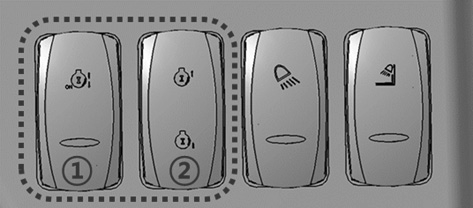
The switch (1) is to activate idling and the switch (2) to control the speed of
idling.
The switch ① maintains basic condition at position ‘2’.
The switch ② maintains basic condition at position ‘2’.
Press the switch ① at ‘1’ position for 0.1 s to activate idle function.
With the function activated, pressing the switch ② to position '1' will increase the
engine idling speed from 800 rpm (baseline) up to 1300 rpm at 50 rpm steps.
Pressing the switch ② to position '3' will decrease the engine idling speed by 50 rpm
steps.
Press the switch ① at ‘1’ position for 0.1 s again to deactivate the idle function and the
engine idling speed returns to 800 rpm.
Warning:
If the engine speed is increased with this switch, the creep speed of the lift truck will
become higher than in normal mode.
Before operating the steering lever, push down the brake pedal and release it slowly to
prevent accident caused by sudden movement.
Auto/Manual Change Switch
Automatic speed range:
FORWARD: 3 grade speed
REVERSE: 3 grade speed.
MAN When this switch is in “MAN”(manual) position, travel mode is switched to “MANUAL” and
allows operator to choose speeds manually.
A-1ST When this switch is in “A-1ST”(automatic 1ST) position, gears are
started from 1ST speed and changed “AUTOMATICALLY” to the appropriate speed up to the limit
set by the gear ratio according to travel load and engine rpm.
A-2ND When this switch is in “A-2ND”(automatic 2ND) position, gears are
started from 2ND speed and changed “AUTOMATICALLY” to the appropriate speed up to the limit
set by the gear ratio according to travel load and engine rpm.
Economic(Fuel saving) switch
This switch is to keep the engine’s speed from exceeding a limit.
With the switch off, the engine reaches the maximum speed when the accelerator pedal is fully
pressed. With the switch on, the engine’s speed is limited to a maximum rpm of 2,100. In the
case where the vehicle is used mainly for driving, using this switch reduces fuel consumption
by approximately 10%.
Emergency lamp switch
This switch operates the emergency lamp which indicates
emergency status to other vehicles.
Upper, rear wipers and washer switch
This switch has two steps to operate the upper and rear wipers and washer.
Step 1: upper and rear wipers operate
Step 2: rear washer fluid is injected The washer function is effective while the switch is pressed, and when released, the wiper returns to the Step 1.
Engine Diagnostic Switch
When engine function failure indicator lamp is lit up, press
this switch to display the error code on the LCD display.
Seat heater switch (If equipped)
Turning on this switch energizes the heater embedded in the operator seat.
Cigar jack
Press-in the switch, when it pops out, take it out and use it
This jack can be used as an emergency power supply (max. 24V, 100W).
12V socket
Use this socket when 12V power supply (30W or less) is required.
5 Pedal Configuration
A. Accelerator Pedal
Push DOWN on the pedal to increase engine rpm (speed).
RELEASE the pedal to decrease engine rpm (speed).
B. Service Foot Brake Pedal
Push DOWN on the brake pedal to slow or stop the lift truck.
RELEASE the brake pedal to allow the lift truck to move.
C. Inching Control Switch
Inching Control Switch – if the service foot pedal and inching control pedal,
the controller regulates the hydraulic pressure to the clutch packs, to permit disc
slippage by means of the proportional valve technology. Further pushing on the pedal
completely relieves clutch pack pressure and applies the service brakes to stop and
hold the lift truck
Note:
The purpose of the inching control pedal is to provide precise inching control at
slow travel speed, with high engine rpm. This is used for fast hydraulic lift
during load approach, pickup or positioning.
Note:
INCHING” mode can be switched over from inching to no-inching or vice-versa by
using the inching switch
6 Steering Wheel
A. Steering Wheel
Steering wheel controls travel direction by turning the steering
tyres.
B. Horn Switch
To give alarm to fellow worker(s) around and in the path of your truck, press
the centre of the steering wheel.
Warning:
Don’t run the truck while the alarm is sounding. It is dangerous to do
so, since poor effect is expected.
C. Steering Knob (If Equipped)
There is a steering knob available for inclusion with new truck deliveries. This option is solely intended for slow travel situations when two handed steering is not possible due to hydraulic operations.
Warning:
Loss of stability can occur when a lift truck steering wheel is rotated quickly while the truck is in motion. A steering knob will assist with easy rotation of the steering wheel, but if a steering knob is improperly used (e.g., rotating the steering wheel quickly while the truck is in motion), this can contribute to truck instability and a tip over. A steering knob is intended for slow travel maneuverability ONLY.
D. Direction Control Lever
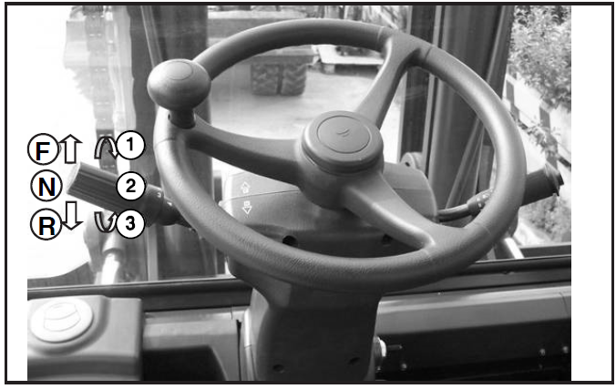
Forward - Reverse Lever
FORWARD (F) - Push the lever forward. The lift
truck will move forward.
NEUTRAL (N) - Move the lever to centre position.
The lift truck should not move when lever is in neutral.
REVERSE(R) - Pull
the lever toward the operator. The lift truck will move in reverse.
Speed Selection
Rotating the direction control lever changes the speed of travel. With handle rotated counter (D) clockwise(towards the operator), the lift truck is in FIRST speed.
Rotate the lever clockwise(away from the operator) for the SECOND and THIRD speeds. Do not fail to place the forward-reverse lever in the neutral position before starting the engine.
Neutral Lever Lock
A transmission neutral lever lock is in base of the direction control lever.
This neutral lever lock prevents the direction control lever from being moved
out of “NEUTRAL”.
N “NEUTRAL LOCK” position.
Prevents the direction control lever to be moved out of “NEUTRAL”.
D “DRIVE” position
Allows the direction control lever to be moved from “NEUTRAL” to “FORWARD and
REVERSE”.
Warning:
“LOCK” the direction control lever. When parking the lift truck,
make sure to “LOCK” the direction control lever at neutral position to
prevent unwanted move.
E. Direction Indicator Lamp Lever
When this lever is pushed forward or pulled backward, left turn or right turn signal lamp flashes. This lever can activate high beam or low beam in upper or lower position.Press the button at the tip of the lever to inject washer fluid.
Press the button at the tip of the lever to inject washer fluid.
Turn the lever forward to operate the front wiper for 3 seconds, or backward to operate it continuously.
(2speed wiper and lever horn switch is option.)
Location of controls
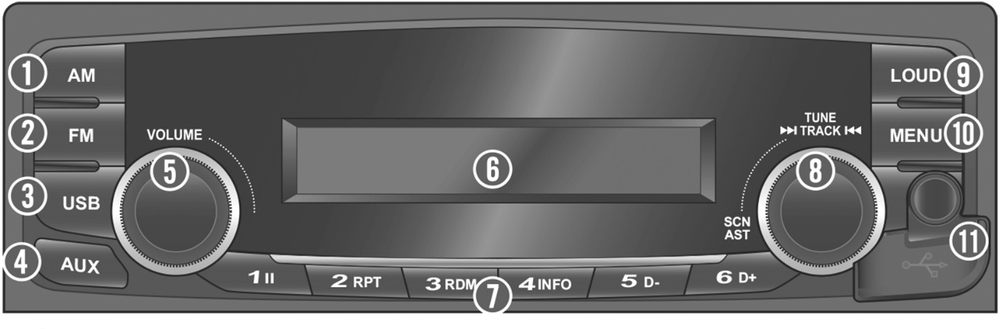
1
AM button: Select AM Radio mode.
2
FM button: Select FM Radio mode.
3
USB button: Select USB player.
4
AUX button: Select AUX mode.
5
POWER/MUTE button with VOLUME dial:
Turn the power on or mute function on/off (press); turn the power off (press and
hold); control the volume level (rotate).
6
Display window for Play/Reception/Menu state and information.
7
PRESET [1∥] - [6 D+] buttons
Radio mode: Recall each stored
station(press); store each station (press and hold)
USB mode: Change the
playback mode ([1∥]/[2 RPT]/[3 RDM] buttons); shows available information about
the current track ([4INFO] button); move to folder down/up ([5 D-]/[6 D+]
buttons).
8
SCN/AST button with│◀◀ TUNE/TRACK ▶▶│dial
Radio mode: Plays frequencies with superior reception for 5 seconds each
(press); Saves frequencies with superior reception to Preset buttons (press
and hold). select the reception frequency manually (rotate).
USB mode: Scans the beginning parts (approx. 10 seconds per track) of tracks
(press); moves to the previous/next track (rotate); rewind or fast- forward
the track (rotate and hold).
9
LOUD button: Turn the Loudness mode on/off.
10
MENU button: Enter the sound setting mode (press); show/hide the clock
or when power is off, enter the clock setting mode (press and hold).
11
Input Terminal cover: Open the cover to connect the external audio device
or the USB device.
AUX IN jack: Connect the external audio device.
USB port: Connect the USB device.
Display window
1 USB/AUX indicators: When the External Device is connected, indicator is
lights up.
2 MP3/WMA indicators: When the Audio Stream is detected, indicator is
lights up.
3 Stereo [ST] indicator for FM stereo station: When a stereo Broadcast is
received, indicator is lights up.
4
Playback mode indicators for USB mode
: Folder mode
: Intro
playback
: Repeat
playback
: Random
playback
5
LOUD/EQ indicators for sound effect
LOUD: Loudness mode on
EQ: EQ mode on
6 Multi-function display area for showing the information
Wired remote controller
1 SCAN button: In Radio mode, tune up the frequency(press): find a station
(press and hold).
2 POWER [PWR] button: Turn on the power or mute on/off(press): turn off the
power (press and hold).
3 Volume [▲/▼] buttons: Adjust the volume.
Rear view/Connectors
1
Antenna jack: To plug the FM antenna cable.
2
I/0 connector: To plug the 1/0 cable.
<ARA-5080WF: 18 Pin>
<ARA-5081WF: 18 Pin>
1. Front R (+)
2. Rear R (+)
3. Illumination (+)
4. ACC (+)
5. Battery (B+)
6. N.C
7. Rear L (+)
8. Front L (+)
9. Front R (-)
10. Rear R (-)
11. N.C / Illumination (-)
12. N.C
13. REM GND
14. GND
15. 5V Output
16. REM Data
17. Rear L (-)
18. Front L (-)
1. Tel Mute
2. Rear R (+)
3. Illumination (+)
4. ACC (+)
5. Battery (B+)
6. DMB GND
7. Rear L (+)
8. DMB L-CH
9. H/F GND
10. Rear R (-)
11. DMB Det
12. DMB Mute
13. REM GND
14. GND
15. 5V Output
16. REM Data
17. Rear L (-)
18. DMB R-CH
Turning the unit on/off
Turn your car's ignition key to ACC or
IGN (ON) position.
Displays the current time.
Press the POWER button to turn the power on.
If the source is ready, playback also starts.
To turn on the power directly
By connecting an USB into the USB port or pressing the AM/FM or
USB button (while the USB device is connected), you can also turn
on the power and the unit then plays.
When power is on, press and hold the POWER
button to turn power off.
Adjusting volume directly
Turn the VOLUME dial to control volume.
Available volume range: 1 - 41.
Setting the sound
Press MENU button repeatedly to select the
Sound setting mode as below;
BAS (Bass): sets the bass sound level. (-5 ~
+5)
MID (Middle): sets the middle sound level. (-5
~ +5)
TRE (Treble): sets the treble sound level. (-5
~ +5)
FAD (Fader: Option): sets the sound fade
between the front and rear speakers. (F15 ~ R15)
BAL (Balance): sets the sound balance between
the right and left speakers. (L 15 ~ R15)
LOUD (Loudness): turn Loudness mode
on/off
EQ (Equalizer style): selects the one of the 7
EQ styles (EQ OFF, POP, ROCK, COUNTRY, VOICE, JAZZ, CLASSIC)
Turn the VOLUME dial left/right to adjust the
value of the level, balance or style.
Setting the Loudness mode
Press the LOUD button to turn loudness mode on/off.
Increases the level for low
frequency.
To turn the loudness option off, press the LOUD button again.
Muting the sound quickly
Press the MUTE button to turn mute on. "MUTE" will flash on the display and mute
the sound.
Press the MUTE button again or turn VOLUME dial to restore
sound.
Setting the region of radio reception
When the power is turned on, press and hold the buttons more 3 seconds at the same
time as below;
U.S.A: Hold down and press more 3 seconds
FM: 87.7 - 107.9 MHz (200 kHz step)
AM: 530 - 1.7 10 kHz (10kHz step)
South America: Hold down and press more 3 seconds
FM: 87.5 - 108.0 MHz (100 kHz step)
AM: 530 - 1.7 10 kHz (10kHz step)
Asia: Hold down and press more 3 seconds
FM: 87.5 - 108.0 MHz (100 kHz step)
AM: 531 - 1,602 kHz (9 kHz step)
Europe: Hold down and press seconds
FM: 87.5 - 108.0 MHz (50 kHz step)
AM: 522 - 1,629 kHz (9 kHz step)
Please wait for more 5 seconds with no operation, the unit will save and apply
your's setting.
If the region setting is not selected correctly to your country or region,
the radio reception can not be received. Retry the setting the region of radio reception
correctly.
The region setting is required only for the first time
The region
setting is return to the default setting when the power connector or battery is
disconnected.
Tuning in a station
Press the AM or FM button to change the band
in order of AM1. AM2. FM1 or FM2.
You can select the FM 1. FM2. AM 1 or AM2 radio band.
While the Auto 5tore stations are stored, you can select the AMA
or FMA band by additional.
The previously chosen broadcasting station will be received.
Press the SCN button or turn the │◀◀ TUNE ▶▶│dial left/right to select the station.
Using TUNE: Briefly turn the dial, plays previous/next frequency.
Using SEEK: Turn and hold the dial, automatically search for station with superior reception.
Using SCAN: Press the button, starting from the
current station, stations with superior reception are scanned for 5
seconds and the previous station is restored.
During the seeking or scanning, if press or turn the dial
left/right again, the selected station will begin playing.
During the FM reception, the Stereo [ST] indicator is on.
Saving radio stations manually
You can save up to 6 preset channels each for FM 1, FM2, FMA, AM1, AM2, and AMA.
If change the stations while driving, use preset button to prevent accidents.
Press the AM or FM button repeatedly to select the band.
After selecting the frequency, press and hold the
PRESET [1∥] - [6 D+] button.
The frequency is saved to the selected preset button.
A total of 24 frequencies with 6 preset frequencies each for FM1/FM2/AM1/AM2 modes can be saved.
Saving radio stations automatically
Press the AM or FM button repeatedly to select the band.
The previously chosen broadcasting station will be received.
Press and hold the AST button to automatically
save receivable frequencies to Preset button.
"AST" is shown , and then stores stations in the order of their frequencies on the Preset buttons.
Up to 6 stations can be stored in each of the AMA and FMA band
Listening to a preset station
Press AM or FM button repeatedly to select the band.
You can select the FM 1. FM2. AM 1 or AM2 radio band.
While the Auto Store stations are stored, you can select the AMA or FMA band by
additional.
The previously chosen broadcasting station will be received.
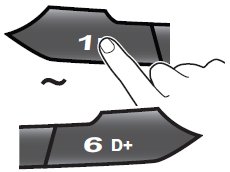
Press Preset [1∥] - [6 D+] button
From the 6 presets, select the frequency you want to listen to.
Before MP3 [WMA] USB playback
This unit cannot play the following files;
MP3 files encoded with MP3i and MP3 PRO format.
MP3 files encoded in an inappropriate format.
MP3 files encoded with Layer 1/2.
Folder selection order/File playback order;
Playing a USB device
Open the cover, plug the USB device to the USB port.
Once a USB is connected,
USB will automatically start playing from the first file within the USB.
If a
previously played USB is reconnected, then the file after the most recently played file is
played.
If a different USB is connected or the file information within the USB was
changed, then the USB will start playing from the first song within the USB.
When a USB device to be played is already connected, press the
USB button to play USB device.
The previously selected file is played.
While playing, press the [1∥] button to pause the file.
Press the button again to play the current file.
Press the [4 INFO] button repeatedly to display information
about the file being played.
The information displayed includes the file name, playing time,
ID3 Tag or folder name information saved with the song.
If there is no information on the playing file, then the unit
will display "NO INFO".
Press MENU button repeatedly to select the
Scroll setting mode. Tum the VOLUME dial to
changes the display method between Scroll On/Off.
SCROLL ON: activate the scroll function
SCROLL OFF: deactivate the scroll function
Controlling the playback
While playing, turn the ▶▶│TRACK│◀◀ dial left/right to moves to the previous or next track.
Clockwise: move to the next file
Counter-clockwise: move to the previous file
You can skip files within the same folder.
While the ▶▶│TRACK│◀◀ dial is being turned and held, the file will rewind or fast forward at high speed. Once released, the file will begin playing at normal speed.
Clockwise: fast forward
Counter-clockwise: fast rewind
The search function works but search speed is not constant.
While fast forwarding or rewinding, you can only hear
intermittent sounds.
Press the [5 D-] or [6 D+] button to moves to the previous or next folder.
[5 D-]: move to previous folder
[6 D+]: move to next folder
While folder moving, he folder name will be displayed briefly.
Change the playback mode
While playing, press the SCN button to begin the Intro scan playback.
When pressed shortly, scans the beginning parts of device
files. (approx. 10 seconds per file)
: Successively plays the intro
of the file in the USB device.
: Successively plays the intro of the
file in the current folder.
Off: Cancels intro playback.
Press the [2 RPT] button to select the Repeat playback mode.
: The current file plays repeatedly.
: The current folder plays repeatedly.
Off: Cancels repeat playback.
Press the [3 RDM] button to select the Random playback mode.
: AII files of current folder play
in random order
: AII files of USB device play
in random order
Off: Cancels random playback.
About MP3/WMA
This unit can play MP3 (WMA) files with .mp3, .wma (Iower case letters) or .MP3 and .WMA (capital letters) file name extensions.
This unit can display ID3 Tag (Version 1.0, 1.1, 2.2, or 2.4) information for MP3 files. such as the album name and the artist.
This unit can recognize the Korean and English characters.
This unit can play MP3/WMA files meeting the conditions below;
Bit rate: 8 kbps - 320 kbps / VBR for MP3
Sampling frequency:
48 kHz, 44.1 kHz, 32 kHz
(for MPEG-1 Layer 2/3)
24 kHz, 22.05 kHz, 16 kHz
(for MPEG-2 Layer 2/3)
This unit can recognize total of 9,999 files, of 256 folders,
and 7 stages of folder structure.
This product can play MP3 files using VBR. When playing an MP3
file of this VBR type, the remaining time displayed may be
different from the real time.
Handling precautions for USB device
When using the external USB device, make sure to keep the device
disconnected and connect only some time after turning on the
vehicle ignition. The USB device may be damaged if the USB device
already connected when the ignition is turned on. (USB device is
not an electronic automotive component).
Some USB devices may not operate properly because of
compatibility issues. Check that the external device is supported
by the device before stating use.
The device will only recognize USB devices formatted in FAT
16/32.
When formatting the external USB device, the device may not
properly recognize a Byte/Sector selection other than 512 Bytes or
2,048 Bytes.
Avoid the contact of bodily parts and foreign substances with
the USB connector.
Repeatedly connecting/disconnecting the USB in a short period of
time may cause damage to the device.
When disconnecting the USB, an abnormal sound may occur
occasionally.
Abruptly disconnecting the external USB device while the USB is
operating may cause the device to be damaged or function
abnormally. Make sure to disconnect the USB device only after the
audio power is turned off or when the audio is operating in a
different mode.
The amount of time required to recognize the external USB device
may differ depending on the type, size, or file formats stored on
the USB. Such differences in the required time are not indications
of malfunction. Please wait the period of time required to
recognize the device.
The device support only USB devices used to play music
files.
Do not use the USB I/F to charge batteries or USB accessories
which generate heat. Such acts may lead to deteriorated performance
or damage to the device
The device may not recognize the USB device if separately
purchased USB hubs and extension cables are being used.
In the case of high capacity USB devices, there are instances
where the logical drives are partitioned for user convenience. In
this case, it will only be possible to play the USB music in the
top level drive. When using partitioned drives, save the songs you
wish to play on the device only in the top-Ievel logical drive. In
addition, certain USB devices are configured with a separate drive
used to install application programs and it may not be possible to
play songs from such drives for the reasons as described above.
The device may not support normal operation when using formats
such as HDD Type, CF, or SD Memory.
The device will not support files locked by DRM (Digital Rights
Management).
Listening to auxiliary audio equipment
By connecting an optional portable audio device to the AUX input jack (stereo mini jack) on the unit and then simply selecting the source, you can listen on your car speakers.
Turn the VOLUME dial left to decrease the volume level.
The AUX volume can also be controlled separately through the connected device.
Turn the external audio equipment off Open the cover, connect
the audio output of the external audio equipment to AUX input
terminal on the unit.
Turn the external audio equipment on. Start playback of the external audio
equipment at a moderate volume.
Press the AUX button to select the AUX function.
Set your usual listening volume by turn the VOLUME dial left/right on the
unit.
Once the connector is disconnected, the previous mode will be restored.
AUX
mode can be used only when an external audio player has been connected.
Listening to DMB sound (lf Equipped)
By connecting the optional DMB receiver, you can listen the DMB
source provided for the vehicle.
When the DMB receiver is turned power on, the current operation
will be paused and the “AUX 1" will be displayed on the
Display window.
The DMB's sound is output from the speakers in the unit.
While playing the DMB, press the AM, FM or USB button to change
the function.
While playing the DMB, if turn the DMB receiver off, the unit
will be returned to previous mode.
Calling via Handsfree (lf Equipped)
By connecting the optional Handsfree equipment, you can use the the Handsfree mode.
When make a call or receive. the bell will sound and the "PHONE“ will be displayed on the Display window.
The ringtone and talker's voice are output only from the front speakers.
When the call is ended, the mute will be canceled and the unit will be returned to the previous mode.
Air Conditioner Controller
1. OFF button
Stops all the functions and turn power off
2. A/C button
Pressing A/C button when power is off, or in heater mode or anti-fog mode
will turn on the air conditioner.
3. Air discharge outlet select button
Select air discharge outlet
4. Anti-fog button
Pressing this button operates anti-fog function for 3 minutes Press A/C or
WARM button during operation to return to air conditioner or heater mode.
5. OPT button
no action
6. WARM button
Pressing WARM button when power is off, or in air conditioner mode or
anti-fog mode will turn on the heater.
7. Fan speed control button
Fan speed is controlled by 3 steps:
LO button: low
MID button: middle
Hi button: high
HEATER FLOW CONTROL VALVE
Warning:
Hot engine components can cause burns. Allow additional time for the engine to cool
down.
a. Description of the Buttons (Basic Operation)
1 POWER button
Touch the button to turn on the monitor.
Touch the button again to turn the power off.
2 SELECT button
Touch the button to select a camera.
The button is used to select an item on the Setup menu.
3 MENU button
Enter the menu selection mode by pressing the Display menu (press shortly) or
the Main menu (press long), using the button.
Touch once to enter the menu mode.
Touch again to exit from the menu mode.
The menu selection OSD menu will disappear within 7 seconds, if no touch is
made.
Touch the Menu button more than 2 seconds to return to the Main menu from the
sub-menu.
4 5. ‘▲’button ‘▼’ button
Use the ▲ and ▼ button for the available menu option.
Touch the Menu button to adjust brightness, contrast, color, tint, and other
settings.
5 DAY/NIGHT SENSOR
Automatic brightness control
Screen brightness is automatically controlled according to surrounding
brightness.
b. Operation Method (Display Menu)
c. Operation Method (Setup Menu)
Enter the Main menu by touching Menu more than 2 seconds.
At this time, the menu selection OSD menu will disappear, if no touch is made within 7 seconds.
Camera Setting
Brightness, contrast, and color of each camera channel can be adjusted,
using the sub-menu.
The left and right side image of CAM1 ~ CAM4 and AUX can be exchanged.
The image of CAM1 ~ CAM4 and AUX can be inversed.
Each monitor can be named, and the image of the selected camera can be
displayed on the monitor, using the OSD.
Various cameras can be selected.
Setting a tilt manually: Select “TILT.MT.”
Exit from the menu and press the Menu key twice to display the following
OSD.
TILT CONTROL:
▲: Tilts up.
▼: Tilts down.
Trigger Setting
Users can use 5 triggers and select each camera trigger (CAM1~4; AUX;
SPLIT1~3; SKIP).
When the trigger signal is activated, the image of the selected camera
wil be displayed on the screen.
The trigger delay time can be adjusted between 0 and 20 seconds.
To prevent the image from being affected by the flickering signal (e.g., turn signals) of one camera, the trigger delay should be adjusted.
If “MARKER” is set to “OFF,” the parking support mark will not be
displayed, even though the reverse gear is engaged.
Split Setting
By default, SPLIT1 provides two split images, SPLIT2 provides three split images, and SPLIT3 provides four split images. However, SPLIT1 ~ SPLIT3 can be changed according to the number of selected cameras.
e.g.) When SPLIT1 is selected, two, three, or four split images can be displayed, depending on the number of selected cameras.
The selected camera cannot be selected by another source.
The audio is supported by the channel that selects an audio function only.
The screen will automatically return to the default split status after two, three, and four split screens, if the number of cameras is changed according to the number of selected cameras.
The screen is changed to the two, three, and four split screens according to the number of the cameras.
Steering Setting
Select "ON" to display the steering angle.
Select "OFF" not to display the steering angle.
If the menu is clicked after turning the handle of the vehicle all the
way to the right, the current wheel shapes will flash four times and the
position value of the wheels will be set.
If the menu is clicked after turning the handle of the vehicle all the way to the right, the current wheel shapes will flash four times and the position value of the wheels will be set.
If the menu is clicked after turning the handle of the vehicle to the centre, the current wheel shapes will flash four times and the position value of the wheels will be set.
Setting the steering wheel (example)
Select the menu and turn the steering angle all the way to the left and
press LEFT STEER SETTING.
Select the menu and turn the steering angle to the centre and press
CENTRE STEER SETTING.
Select the menu and turn the steering angle all the way to the right and
press RIGHT STEER SETTING.
The STEER DISPLAY item value will be changed from "OFF" to "ON." (Item
order - 1, 2, 3, 4, is irrelevant.)
The steering angle image will be displayed on the right upper side, if
the menu is closed.
The menu display time will be changed from 7 seconds to 20
seconds for the selected menu only.
Only the left and right side steering angle image will be turned
to red after setting, and the image will flash.
The steering image is displayed in 9 phases in total. As the
image is updated every second, images may not be displayed
smoothly, if the handle is turned quickly.
Day/Night Setting
Select "ON" to activate the function.
Select "OFF" to deactivate the function.
Shows the sensitivity setting value of the Day/Night detection sensor.
Users can adjust sensitivity and night brightness of the Day/Night mode.
Auto Scan Setting
Select "ON" to activate the function.
Select "OFF" to deactivate the function.
Each channel will be displayed continuously according to the time
interval set in “AUTO SCAN DELAY SETTING."
Press the “SELECT” key to select the intended channel.
Input "0" for “AUTO SCAN DELAY TIME” to skip the channel.
ADVANCED MENU
Auto Setting: The monitor will keep the last setting value.
The monitor will be turned on in the Power-on or Stand- by mode, depending on the status before turning the engine off.
"OFF" Setting: As the monitor keeps the "Stand- by" status regardless of the status before turning the engine off, the power switch should be touched to turn on the monitor.
"ON" setting: The monitor will be automatically turned on when the engine is turned on, regardless of the status before turning the engine off.
a. Front Display (basic operation menu)
1 POWER button
Turns power on and off
2 SELECT button
Switches camera and AV input image
3 MENU button
Press shortly to adjust image
Press 3 seconds to enter set up menu
4 ‘▲’ button
Increases speaker volume
5 ‘▼’ button
Decreases speaker volume
b. Operation Method
▶ Color tone control
Color tone control
Press MENU button for 0.5~1 second.
Press MENU button for 0.5~1 second.
Select brightness, value of color, color tone and color density using SELECT
button.
Adjust each title using UP and DOWN buttons.
The basic level is set up by 25.
▶ Main MANU (SETUP MENU) setting method
Call SETUP MENU window by pressing MENU button for 2 seconds.
OSD menu disappears if no entry for 5 seconds.
NORMAL / MIRROR
This function turns the camera image right ↔ left.
TRIGGER DELAY
If 2 trigger signals are activated, the respective trigger sources can be
selected.
When trigger signal is activated, the selected image appears in the screen.
Each trigger signal can be set up with 0~20 seconds of delay.
CAMERA NAME
Name of each camera can be registered and displayed in the screen OSD.
SCALE MODE
To show distance together with the camera image on the monitor, this function
controls figures and dots of a certain size.
Other scale modes of CAM1~CAM2 can be set up, which can be turned ON/OFF in DISPLAY
MODEP.
SCALE1 and SCALE2 are indicated with adjustable figures.
When trigger signal is activated, the scale OSD set up in the screen appears.
This is simply an electrical expression of the distance from the truck.
ADVANCED MENU
DISPLAY
FULL: images are displayed in 16:9 ratio.
NORMAL: images are displayed in 4:3 ratio.
UP/DOWN
Turns images upside down.
AUTO POWER
If AUTO POWER is set to ON, the monitor turns ‘AUTO ON’ when the vehicle power
is turned on.
If AUTO POWER is set to ONF, the monitor does not operate when the vehicle power
is turned on.
AUTO SCAN
If AUTO SCAN is set to ON, images are displayed in the sequence of CAM1→CAM2.
The duration of an image display can be set to 0~20 seconds. ‘0’ setting eliminates
the image.
Press the SELECT button to stop repeating images, and press it again to see the
images repeatedly.
Weight Scale Mode (Option - Hydraulic Type)
A) Initial Setting
To use the weight scale option, you need to perform the following initial settings: i) zero
adjustment as unloaded (ZERO), ii) inputting a reference load (LOAD), and iii) setting the
maximum rated load (RLOAD).
This option enables the operator to measure and limit the weight of the load using the LCD
display.
Pressing the MODE button moves you from the normal display to the load scale mode.
Zero Adjustment as Unloaded (ZERO)
While keeping the vehicle unloaded, slowly raise its
forks, or attachment, approximately 30 cm from the ground, wait for 4–6 seconds, and then
hold the “MODE” button for 2 seconds. The ZERO lamp (6) will light up, and the weight will
be displayed in the form of “ - - - - .”
Then, hold the ENTER button for 1 second to
finish this step (The ZERO lamp (6) will turn off and the number indicator will be set to
zero).
Inputting a Reference Load (LOAD)
Prepare a load whose weight is accurately known and
falls within 30%–50% of the vehicle’s maximum rated capacity, or a load you usually handle
(It is recommended to use a load whose weight has been proven by a legal measuring
instrument).
E.g., 15-ton capacity forklift: 4,500–7,500 kg load
30,000-lb capacity
forklift: 9,000–15,000 lb load
Put the mast vertical, raise the load slowly
approximately 30 cm from the ground, wait for 4–6 seconds, and then hold the MODE button for 2 seconds. The ZERO lamp (6) will light up. Press
the MODE button once again, and the LOAD lamp (7) will light up.
Once an arbitrary number
appears on the weight indicator in the form of “ ,” put the △ or ▽ button to set the value
to the already accurately identified weight of the current load.
And then, hold the
ENTER button for 1 second to finish this step (The LOAD lamp (7) will turn off).
Setting the Maximum Rated Load (RLOAD)
Hold the MODE button for 2 seconds, and the ZERO
lamp (6) will light up.
Press the MODE button twice more, and the RLOAD lamp (8)
will light up. Once the weight is displayed in the form of “ ,” put the △ or ▽ button to
set the value to the vehicle’s maximum rated weight plus 2%. And then, hold the ENTER
button for 1 second to finish this step. The RLOAD lamp (8) will turn off and the maximum
weight value (1) displayed at the left will change.
B) Unit Change
Hold the MODE button for 2 seconds, and the ZERO lamp (6) will
light up. Press the MODE button three times more, and the RLOAD
lamp (8) will light up. Use the △ and ▽ buttons to
change the units. And then, hold the ENTER button for 1 second to
finish this step.
C) If you try to raise a load whose weight exceeds the
rated weight setting, the warning lamp (2) will light
up.
Seat Switch System
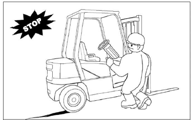
The lift truck is equipped with a SEAT SWITCH SYSTEM. In normal
operation if the direction lever is placed in either forward or
reverse, the lift truck will move at a speed proportional to the
accelerator pedal's position. If the operator leavers the seat
without setting the parking brake, within three seconds after
leaving the seat, the SEAT SWITCH SYSTEM will automatically
disengage the transmission. The directional lever, however, will
remain in that forward or reverse location although internally the
transmission will have shifted into neutral. Before exiting the
lift truck, the parking brake should always be applied.
Warning:
WHEN LEAVING MACHINE APPLY PARKING BRAKE!
PARKING BRAKE IS NOT AUTOMATICALLY APPLIED.
Note:
Some trucks may be equipped (ask your branch if this applies to your truck) with an alarm
that will sound if the parking brake is not applied when leaving the machine.
Notice:
Prior to operating the lift truck, be sure to understand and
check the SEAT SWITCH SYSTEM.
While in normal operation and on level ground, select a
direction with the directional lever and with the park brake
released. You will note that the truck will move slowly in the
selected direction. If you lift yours hips off of the seat, within
three seconds, the SEAT SWITCH SYSTEM will disengage the
transmission allowing the truck to coast but not automatically
stop.
To restore the lift truck to normal operation, while sitting in
the operator's seat depress the brake pedal to hold the lift truck,
return the directional lever to the neutral position, and then
reselect a direction of travel (either forward or reverse). The
transmission will then re-engage.
If seat or seat switch replacement becomes necessary, be sure
to use genuine parts. Lift trucks should never be operated without
an operational SEAT SWITCH SYSTEM.
Steering Column Tilting Angle Adjustment
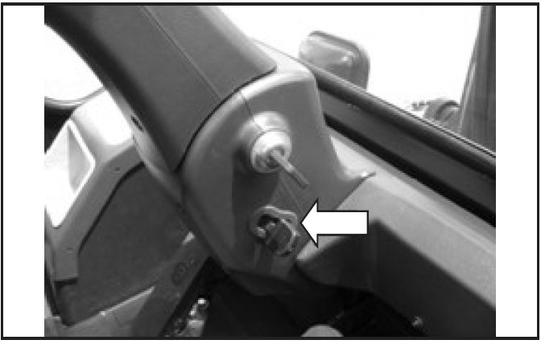
Typical Example
The tilting angle of the steering wheel is adjustable within a range of 6 degrees to suit individual operators. The steering column is unlocked by turning the lever counter clockwise and locked by turning it clockwise.
Tow Eye
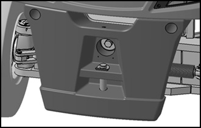
Typical Example
It is for emergency use in towing a disabled vehicle or being
towed by another truck when your truck is disabled. Use wire rope
strong enough according to the weight and size of the vehicle to be
towed.
Fuse Box
Typical Example
Fuses protect the electrical system from damage caused by
overloaded circuits. Change a fuse if the element separates. If the
element of a new fuse separates, have the circuit checked and
repaired.
For detailed information, refer to “Fuses, Bulbs &
Circuit Breaker - Change, Reset” in Maintenance Section.
Circuit Breaker
Typical Example
Circuit Breaker protects the main electrical circuit. It is located in the engine compartment
on the right side.
To reset the circuit breaker, push the button in. If the button comes back out, have the
electrical circuits checked.
Seat Adjustment
Note:
Seat arrangements may vary. Basic operation will be similar.
Seat adjustment should be checked at the beginning of each shift
and when operators change.
Lock the seat into position before operating, to prevent an
unexpected seat change.
Note:
The seat can only be correctly adjusted with the operator fully seated.
The seat position can be adjusted forward or backward, upward or
downward and seat back tilt. Select the desired position to allow
full pedal and lever travel.
To adjust the seat suspension, turn knob (1) until the indicator
reads the approximate weight of operator when the range of 50 to
130kg. Turning knob (1) clockwise increases the reading and turning
it counterclockwise decreases the reading.
The height of the seat can be adjusted. Hold the seat with both
hands and move it upward/downward to the desired position. When
released the seat will remain in the selected position.
To adjust the seat back pull up and hole lever (2) and tilt the
seat back to the desired position. Release the lever to lock the
seat back in the selected position.
To adjust the seat forward or backward, push up and hold lever
(3) and move the seat to the desired position.
Release the lever to lock the seat in the selected position.
The angle of each armrest (4) can be adjusted by operating the
button located on the front of each armrest. The armrest should be
positioned upright when getting on or off the machine.
The height of headrest (5) can be adjusted. Hold the headrest
with both hands and move it of upward/ downward to the desired
position.
When released the headrest will remain in the selected
position
AIR SUSPENSION SEAT(Option - GRAMMER)
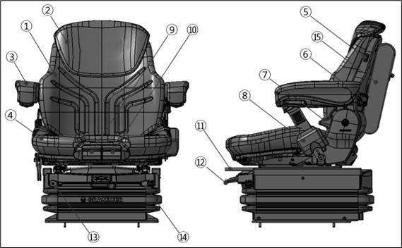
1 Seat Backrest
2 Auxiliary Seat Backrest
3 Armrest
4 Seat Mat
5 Seat Heater Switch
Turns on/off the seat heater.
6 Lumbar Support Air Cushion Switch
Inflates/deflates the two air cushions installed inside the backrest.
The upper and lower air cushions have their respective switches.
7 Seat Backrest Tilt Adjustment Lever
Adjusts the seat backrest to the desired angle.
8
9 Fore-and-Aft Seat Mat Adjustment Lever
Moves the seat forward when pulled up.
10 Seat Mat Tilt Adjustment Lever
Tilts the seat mat upward when pulled up.
11 Seat Sliding Lever
Adjusts the entire seat’s position fore or aft.
12 Air Suspension Activation & Height-Adjustment Lever
Air Suspension Activation (by reading the operator's weight)
Once the lever is flicked up (by one touch) initially, the height of the
seat is automatically set according to its reading of the operator’s
weight.
Caution: Moving your body during the adjustment will disturb weight reading
and thus stop the air suspension’s activation. Please stay seated
conveniently.
Seat Height Adjustment
After the automatic seat height adjustment, you can make further adjustments
of the seat by pulling or pushing the lever to the desired height.
13 Vertical Suspension Force Adjustment Lever
Adjusts the vertical suspension force.
14 Horizontal Suspension Force Adjustment Lever
Adjusts the horizontal suspension force.
15 Pocket
Direction Control Lever
Typical Example
Forward - Reverse Lever
FORWARD (F) - Push the lever forward. The lift truck will move
forward.
NEUTRAL (N) - Move the lever to centre position. The lift truck should
not move when lever is in neutral.
REVERSE(R) - Pull the lever toward the operator. The lift truck will move
in reverse.
Speed Selection
Rotating the direction control lever changes the speed of travel. With
handle rotated counter (D) clockwise(towards the operator), the lift
truck is in FIRST speed.
Rotate the lever clockwise(away from the operator) for the SECOND and
THIRD speeds. Do not fail to place the forward-reverse lever in the
neutral position before starting the engine.
Neutral Lever Lock
A transmission neutral lever lock is in base of the direction control
lever. This neutral lever lock prevents the direction control lever
from being moved out of “NEUTRL”.
N “NEUTRAL LOCK” position.
Prevents the direction control lever to be moved out of “NEUTRAL”.
D “DRIVE” position.
Allows the direction control lever to be moved from “NEUTRAL” to “FORWARD
and REVERSE”.
Warning:
“LOCK” the direction control lever. Whenever machine is parked,
“LOCK” the direction control lever in “NEUTRAL” to prevent
accidental machine movement.
Transmission Display
A transmission display is to the right of the steering wheel on
the dash. The LCD indicates gears, direction of travel and error
codes.
A
Indicates travel direction and gear selection. See the figure below for more
detailed information.
B
Indicates normal operation and error codes. For a list of error codes, see
“Transmission Error Codes” in “When Required” maintenance section.
Note:
Most codes are only two digits.
C
Indicates that error codes have occurred and are stored.
D
Indicates that operation must be stopped immediately to prevent damage to
transmission and hazardous operation condition.
The gear range indicator bars will indicate which gear is selected by displaying the
corresponding number of bars.
The forward and reverse indicator bars will be “OFF” when the transmission is in “MANUAL
MODE”. When transmission is in “AUTOMATIC MODE”, all the gear range indicator bars and both
travel direction indicators will be “ON”.
SCR Cleaning - DeSOx Switch
<Option for Overhead Guard>
<Cabin>
This switch initiates regular regeneration process of the
post-treatment device.
A pop-up on the SCR Display warns the operator to perform SCR Cleaning. (3 warnings:
at 10 hrs remaining, 5 hrs remaining, Immediate)
<Exemplary warning – 10 hrs remaining>
Press this switch and release it after 3 sec, SCR Cleaning will
be started and the engine speed will be increased. Screen pop-up
provides information on the warning up and cleaning process.
<Cleaning process>
<Completed>
The switch returns to the normal position of "2" after pressed
by the operator to position "1". However, it does not return when
pressed to position "3" and the operator shall return the switch
from position "3".
Setting this switch to position "3" prohibits automatic SCR
Cleaning in an environment subject to dust, explosion or regulated
noise level. Press position "3" for 3s, a pop-up appears as shown
below:
<SCR Cleaning inhibited>
Location of power pack
How to operate the power pack for manual tilting
How to fill the hydraulic oil
Remove the hydraulic fill port (screw type).
Fill the hydraulic oil into the power pack tank.
The oil level point should be positioned in the centre of gauge
glass.
After turning the button to shifted position, hold the lever
located on the bottom.
Put the lever into the power pack hydraulic jack.
Move the lever up and down for manual tilting.
Refueling
Warning:
Explosive fumes may be present during refueling.
Do not smoke in refueling areas.
Lift truck should be refueled only at designated safe
locations. Safe outdoor locations are preferable to those
indoors.
Stop the engine and get off the lift truck during
refueling.
Notice:
Do not allow the lift truck to become low on fuel or completely run out of fuel. Sediment
or other impurities in the fuel tank could be drawn into the fuel system. This could result
in difficult starting or damage to components.
Fill the fuel tank at the end of each day of operation to drive out moisture laden air and
to prevent condensation. In the cold weather, the moisture condensation can cause rust in
the fuel system and hard starting due to its freezing. Do not fill the tank to the top. Fuel
expands when it gets warm and may overflow.
Typical Example
Park the lift truck only at a designated safe location. Place
the transmission in NEUTRAL. Lower the forks to the ground. Engage
the parking brake. Stop the engine.
Typical Example
Remove the filler cap.
Fill the fuel tank slowly. See topic, “Refill
Capacities.” in maintenance section. Install the filler cap.
If spillage occurs, wipe off excess fuel and absorb any excess fuel
with absorbent material.
Note:
Drain water and sediment from fuel tank as required by prevailing conditions. Also, drain
water and sediment from the main fuel storage tank weekly and before the tank is refilled.
This will help prevent water or sediment being pumped from the storage tank into the lift
truck fuel tank.
DEF/Ad-Blue Replenishment
Notice:
Do not allow the lift truck to become low on DEF(Ad-Blue) or completely run out of /DEF
(Ad-Blue).
Sediment or other impurities in the DEF(Ad-Blue) Tank could be drawn into the after
treatment.
This could result in damage to components.
Do not fill the DEF(Ad-Blue)tank to the top.
DEF(Ad-Blue) Tank could be damaged because of volume expansion during DEF(Ad-blue)
freezing in cold condition.
Typical Example
Park the lift truck only at a designated safe location. Place the transmission in Neutral.
Lower the forks on the ground. Apply the parking brake. Stop the engine.
Using the start key, open the urea fluid tank door beside the frame. Open the blue urea
fluid tank filler cap.
Typical Example
Fill the fuel tank slowly. Refer to the section on ‘Fuel and Urea fluid Refill
Volume.”
After the refill, close the urea fluid tank cap firmly. Remove spilt urea fluid, if any,
with an adsorbent.
CAUTION:
LOW DEF/Ad-Blue LEVEL WILL DISTURB AFTER TREATMENT FOR TIER-4 EXHAUST GAS EMISSION, AND CAB
BE CAUSE OF SERIOUS DAMAGE TO ENGINE AND SYSTEM.
Walk-Around Inspection
Make a thorough walk-around inspection before mounting the lift truck or starting the engine.
Look for such items as loose bolts, debris buildup, oil or coolant leaks. Check condition of
tyres, mast, carriage, forks or attachments. Have repairs made as needed and all debris
removed.
Typical Example
Inspect the operator's compartment for loose items and cleanliness.
Inspect the instrument panel for broken or damaged indicator lights or gauges.
Test the horn and other safety devices for proper operation.
Typical Example
Inspect the mast and lift chains for wear, broken links, pins and loose rollers.
Inspect the carriage, forks or attachments for wear, damage and loose or missing
bolts.
Inspect the tyres and wheels for cuts, gouges, foreign objects, inflation pressure and
loose or missing bolts.
Inspect the overhead guard and cabin for damage and loose or missing mounting bolts.
Inspect the hydraulic system for leaks, worn hoses or damaged lines.
Look for transmission and drive axle leaks on the lift truck and on the ground.
Inspect common parts and drive axle, mast etc for grounded, loosen or missing mounting
bolts.
Typical Example
Inspect the engine compartment for oil, coolant and fuel leaks.
Measure the engine crankcase oil level with the dip stick. Maintain the oil level between
the MAX. and MIN., (or FULL and ADD) notches on the dip stick.
Typical Example
Observe the engine coolant level in the coolant recovery bottle. With the engine cold,
maintain the level to the COLD mark. If the recovery bottle is empty, also fill the radiator
at the top tank.
Typical Example : For cabin type truck
Observe the fuel level gauge after starting the truck. Add fuel if necessary.
Warning:
Personal injury may occur from accidents caused by
improper seat adjustment. Always adjust the operator's seat before starting the lift
truck engine.
Seat adjustment must be done at the beginning of each shift and when
operators change.
To position the seat, PUSH the lever away from the seat track and move the seat forward or
backward to a comfortable position.
Inspect seat belt for wear and correct operation.
Prestart Conditions
Note:
The engine will not start unless the transmission directional control lever is in the
NEUTRAL position.
Typical Example
Engage the parking brake, if not already engaged.
Place the transmission directional control lever in NEUTRAL position.
Notice:
When you restart the engine after turning off it, wait 4 to 5 seconds and restart
it to protect the starter.
Starting Diesel Engine at
Cold
Turn the ignition key to the ON position. The start preheat
light will come ON. The preheat light will stay ON maximum 20
seconds, depending on the ambient temperature.
Notice:
Do not crank more than 10 seconds continuously.
If engine coolant is cold, engine low idle speed could be higher
than normal condition. (Electronic Engine)
After the preheat light goes OFF, turn the ignition key to the
START position, with the accelerator pedal pressed.
Release the ignition key after engine starting and check the
engine condition.
If the engine stalls or does not start, turn the ignition key
to the OFF position, then repeat steps 1 thru 3.
Starting Diesel Engine at Warm (Mechanical engine)
Turn the ignition key to the ON position and then to START position, without waiting for the preheat light to go OFF. At the same time fully depress the accelerator.
Release the ignition key when the engine starts and release the accelerator pedal to a low idle position. Release the ignition key after engine starting and check the engine conditions.
Starting From a 24/12 Volt External Source
Warning:
Sparks occurring near the battery could cause vapors to explode.
Always connect the external power source ground cable to a point away from and below the
battery, and well clear of fuel system components.
Typical Example
Notice:
Do not reverse battery cables. It can cause damage to the alternator.
Always connect the external power source cables in parallel with the lift truck
battery cables : POSITIVE(+) to POSITIVE(+) and NEGATIVE(-) to NEGATIVE(-).
Attach ground cable last, remove first. All lift trucks equipped with Time built
internal combustion engines are NEGATIVE(-) ground.
Starting with Jumper Cables
Warning:
Batteries give off flammable fumes that can explode.
Prevent sparks near the batteries. They could cause vapors to explode. Do not allow jump
cable ends to contact each other or the lift truck. Do not smoke when checking battery
electrolyte levels.
Electrolyte is an acid and can cause personal injury if it contacts skin or eyes.
Always wear eye protection when starting a lift truck with jump cables.
Improper jump procedures can cause an explosion resulting in personal injury.
Always connect battery positive (+) to battery positive (+) and battery negative (-) to
be battery negative (-).
Jump only with a battery source and with the same voltage as the stalled lift
truck.
Turn off all lights and accessories on the stalled lift truck. Otherwise, they will
operate when the jump source is connected.
Notice:
When starting from another machine, make sure the machines do not touch. This could prevent
damage to engine bearings and electrical circuits.
Turn on (close) the disconnect switch prior to the boost connection to prevent damage to
electrical components on the stalled machine.
Severely discharged maintenance free batteries might not fully recharge by the alternator
alone after jump starting.
The batteries must be charged to the proper voltage by the battery charger.
Many batteries thought to be unusable, are still rechargeable.
This machine has a 24 volt starting system. Use only equal voltage for jump starting. Use
of a welder or higher voltage equipment will damage the electrical system.
Use of Jumper Cables
When auxiliary start receptacles are not available, use the
following procedure.
Make initial determination as to failure of lift truck to
crank. Procedure applies even if lift truck does not have
diagnostic connector.
Place the directional control in NEUTRAL on the stalled lift
truck. Engage the parking/secondary brake. Lower all attachments to
the ground. Move all controls to HOLD (CENTRE).
On stalled lift truck, turn the start switch to OFF. Turn off
all accessories.
On stalled lift truck, turn on (close) the disconnect switch
(if equipped).
Move boost start lift truck near enough to stalled lift truck
for cables to reach, but DO NOT ALLOW LIFT TRUCKS TO TOUCH.
Stop the engine on the boost lift truck. Or, if using an
auxiliary power source, turn off the charging system.
Make sure battery caps are all in place and tight on both lift trucks.
Typical Example of 24 Voltages
Connect positive (+) jumper cable (red) to positive (+) cable
terminal of discharged battery, or battery set on the stalled lift
truck.
Do not allow positive cable clamps to touch any metal other
than battery terminals.
Connect the other end of this positive jumper cable (red) to
positive (+) terminal of boost battery. Use procedure of Step 8 to
determine correct terminal.
Connect one end of the negative (-) jumper cable to the other
terminal (negative) of the boost battery.
Make final connection of negative (-) cable to the stalled
truck frame (not battery negative post) away from battery, fuel or
hydraulic lines, or moving parts.
Start the engine on the boost lift truck, or energize the
charging system on the auxiliary power source.
Wait a minimum of two minutes for the batteries in the stalled
lift truck to partially charge.
Attempt to start the stalled engine. Refer to section on
‘Engine Starting’.
Immediately after starting the stalled engine, disconnect the
jumper cables in reverse order.
Conclude failure analysis on starting/charging system of the
stalled lift truck as required with the engine running and charging
system in operation.
After Starting the Engine
Observe all indicator lights and gauges frequently during operation, to make sure all systems are working properly.
Warning:
If any light comes on, have corrections made before operating truck.
① Battery discharge warning lamp.
This lamp indicates the battery condition of charge. If light
comes on during operation, a loose or broken fan belt or defective
electric system is suggested. Stop the operation and check the
cause.
② Fuel gauge.
Observe fuel gauge for fuel level in the tank.
③ The power shift transmission gauge pointer will be in
the green band with the engine running, unless the oil temperature
is excessive.
Note:
Do not idle engines for prolonged periods of time. These engines can be started easily, even when hot.
Note:
At an oil temperature in the shifting circuit lower than -12°C, the transmission must be
warmed-up for some minutes.
This must be carried out in Neutral with an increased engine speed (about 1500 rpm). Until
this oil temperature is reached, the Electronics remains in Neutral, and the symbol of the
cold start phase will be indicated on the Transmission Display.
Indication on the Transmission Display
After the indication on the Transmission Display is
extinguished, the full driving program can be utilized out of
“NEUTRAL”.
Introduction
The DL06 engine which is a high-power engine in compliance with the EPA/CARB TIER-4 (EURO
STAGE Ⅳ) Engine Emissions Standard is provided with various systems. The DL06 engine is
equipped with a turbo- charger intercooler system that compresses and cools air and feed it to
the intake manifold. Here, MAF sensor and temperature/pressure sensors detect the air
condition and transmit the data to the ECU which controls fuel injection rate according to the
engine load, speed and air quantity. Fuel is supplied to a high pressure pump through a fuel
filter. The fuel compressed in the high pressure pump is transferred to common rail and
injected by injectors in controlled order. Surplus fuel after injection returns to the fuel
tank via a return hose. The exhaust gas recirculation (EGR) system controls the quantity of
recirculating air according to the engine speed and load in order to comply with applicable
exhaust gas emission standards.
The DOC (Diesel Oxidation Catalyst) uses a chemical process to reduce hydrocarbons(HC) and
carbon monoxide(CO). The SCR (Selective Catalytic Reduction) system reduces NOx in the exhaust
gas of the diesel engine into nitrogen gas (N2) and water (H2O) using catalyst. The SCR system
uses DEF (Diesel Exhaust Fluid) or Ad-Blue fluid.
The figure below shows the positions of the electronic control system and sensors.
Notice:
When the engine is regularly turned off using the ignition key after operation, the supply
module starts up (after-run) in order to remove the DEF/Ad-Blue remaining in the
after-treatment system by returning it into the DEF tank. This is to prevent the hose from
bursting due to a freeze-up or any other kind of obstruction. A sound is produced during the
after-run.
Do not cut off the battery’s main supply during the after-run.
If the after-run does not begin after the engine is turned off, inspect the system.
White Smoke can be emitted during SCR Cleaning.
Display of Detecting Control Failure
As shown in the table below, for your information, we provide correlation between Engine
fault warning strategy and LCD display.
Warning Stage
Warning Strategy
LCD Display
Engine
Check Lamp
Buzzer
Torque
Reduction
RPM Limit
Method
Message on the Display
Normal
Off
Off
0%
NA
NA
NA
Level1
On
On
Reduced
Reduced
Continuous
ENGINE MALFUNCTION CALL Time SERVICE AGENT
Engine Power Reduced!
Level2
Blinking
On
Limphome
Limphome
Continuous
ENGINE MALFUNCTION CALL Time SERVICE AGENT
Engine is in Limphome Mode
Level3
Blinking
On
Engine Stop
Engine Stop
Continuous
FATAL ENGINE ERROR CALL Time SERVICE AGENT
Engine Stop NOW!
Detecting Control Failure
As shown in the table below, the ECU performs self diagnosis. If a fault/failure is
detected, engine check lamp lights up and failure code (DFC) is indicated by the number
of flashes of the engine check lamp.
DFC
Item
Symptoms of Failure
Corrective Action
Classification
Engine Check Lamp
Torque Decrease
Others
351
Air flow and temperature sensor
ON
50%
Close the EGR valve
Key off.
Check sensors and harness
351
X
X
351
X
X
321
ON
50%
X
321
ON
50%
X
321
ON
50%
X
321
ON
50%
X
323
Exhaust gas temperature
ON
50%
Close the EGR valve
Stop the vehicle and cool down
232
EGR valve
ON
50%
Close the EGR valve
Key Off
Check EGR valve and harness
232
ON
50%
231
ON
50%
232
ON
50%
231
ON
50%
231
ON
50%
231
ON
50%
231
ON
50%
232
ON
50%
322
Intake air boost temperature sensor
ON
X
Close the EGR valve
Key off.
Check sensors and harness
322
X
X
322
ON
X
322
ON
X
322
ON
X
343
Manifold Pressure Sensor
ON
50%
Close the EGR valve
Key off.
Check sensors and harness
343
ON
50%
343
ON
50%
331
Coolant Temperature Sensor
X
X
X
Key off.
Check sensors and harness
331
ON
50%
X
331
ON
50%
X
333
Fuel Temperature Sensor
ON
50%
X
Key off.
Check sensors and harness
333
ON
50%
X
333
ON
50%
X
342
Oil
Temperature & Pressure
ON
50%
X
Key off.
Check sensors and harness
342
ON
50%
X
332
Sensor
ON
50%
X
332
X
X
X
411
Batteries
ON
50%
Close the EGR valve
Key off
Check battery condition Check battery connection
411
ON
50%
412
ON
X
312
Crank & Cam Sensor
ON
80%
Idle rpm increased
Key off
Check the sensors and harness
*Call Time A/S Team
311
X
X
311
X
80%
312
X
80%
312
X
80%
312
X
80%
421
Atmospheric Pressure Sensor
ON
50%
X
Key off Check/Replace ECU
*Call Time A/S Team
421
ON
50%
X
421
ON
50%
X
323
Turbine Inlet Temperature Sensor
ON
50%
Close the EGR valve
Key off.
Check sensors and harness
323
ON
50%
323
ON
50%
323
X
X
X
323
ON
50%
Close the EGR
valve
222
Rail Pressure
Blink
80%
Engine stops after 20 sec
Key off
Check the sensors and harness
*Call Time A/S Team
341
ON
50%
341
Blink
80%
341
Blink
80%
341
Blink
80%
341
Blink
80%
432
Pedal Position Sensor
ON
50%
Limp Home mode Close the EGR Valve
Key Off
Check acceleration pedal and harness
432
ON
50%
432
ON
50%
432
ON
50%
352
Fuel Moisture Sensor
ON
50%
X
Key Off
Check sensors and harness Check fuel filter
352
ON
50%
X
352
ON
50%
X
352
ON
50%
X
211
Injector
ON
50%
Close the EGR valve
Idle rpm increased
Key off
Check the injector and harness
*Call Time A/S Team
212
ON
50%
213
ON
50%
214
ON
50%
211
ON
X
212
ON
X
213
ON
X
214
ON
X
215
Blink
X
215
Blink
X
222
Inlet Metering Valve
X
50%
X
Key off
Check the IMV and harness
*Call Time A/S Team
222
X
50%
X
222
Blink
80%
Engine stops after 20 sec
222
Blink
80%
222
ON
50%
222
Blink
80%
443
Preheat Plug Relay
ON
X
X
Key off.
Check sensors and harness
443
ON
X
X
443
ON
X
X
421
Inside the ECU.
Blink
X
X
Key off
Check battery condition Check ECU connector and harness.
* When replacing the ECU, call Time A/S Team
421
X
50%
X
421
X
80%
Close the EGR
valve
421
X
X
X
421
X
X
X
421
X
X
X
412
Blink
50%
X
412
Blink
50%
X
412
Blink
50%
X
441
Lamps
X
X
X
Key Off
Check the harness related with lamps
442
X
X
X
434
Transmission Oil Temperature
ON
50%
X
Stop the vehicle and cool down the oil. Check transmission
temperature
switch and harness
433
Torque Converter Switch
ON
X
X
Key off.
Check torque switch and harness
433
ON
X
X
433
ON
X
X
DEF/Ad-Blue Level inducement for USA / Europe
There are several DEF/Ad-Blue level points at which the DEF level indicator lamp changes
and the display shows a message to warn the shortage of DEF/Ad-Blue. The lower the
point, the more the system limits the engine power and speed in order to prevent
nitrogen oxide emissions from exceeding the acceptable level due to a lack of
DEF/Ad-Blue. As shown in the table below, for your information, we provide correlation
of DEF/Ad-Blue level inducement strategy and LCD display.
DEF/Ad-Blue Level Inducement for USA
Inducement Stage
Condition DEF volume [%]
Repeat Offence (within 40hrs)
Inducement Strategy
DEF Level Indicator
DEF Indicator
Engine Check Lamp
Buzzer
Torque Reduction
RPM
Limit
Normal
20 ~ 100
NA
Green ON
Off
Off
Off
0%
NA
Level1
10 ~ 20
NA
Green ON
Off
Off
Off
0%
NA
Level2
5~10
NA
Yellow ON
Off
Off
At starting & Every 20min
25%
NA
Level3
0~5
NA
Red Blink
Off
Off
Every 5min
0%
Fix at Low Idle RPM
Inducement Stage
Condition DEF volume [%]
Repeat Offence (within 40hrs)
LCD Display
Method
Message on the Display
Normal
20 ~ 100
NA
NA
NA
Level1
10 ~ 20
NA
For 1min
At starting & Every 20min
DEF LEVEL LOW - REFILL
Engine Power will be Reduced
Level2
5~10
NA
For 1min Every 10min
DEF LEVEL VERY LOW - REFILL NOW
Engine Power Reduced By
25%
Level3
0~5
NA
Continuous
DEF EMPTY
Engine can run LOW IDLE ONLY
DEF/Ad-Blue Level Inducement for Europe
Inducement Stage
Condition DEF volume [%]
Repeat Offence (within 40hrs)
Inducement Strategy
DEF Level Indicator
DEF Indicator
Engine Check Lamp
Buzzer
Torque Reduction
RPM
Limit
Normal
25 ~ 100
NA
Green ON
Off
Off
Off
0%
NA
Level1
10 ~ 25
NA
Green ON
Off
Off
Off
0%
NA
Level2
5~10
NA
Yellow ON
Off
Off
At starting & Every 20min
25%
NA
Level3
0~5
NA
Red Blink
Off
Off
Every 10min
50%
60% (about 1500rpm)
Inducement Stage
Condition DEF volume [%]
Repeat Offence (within 40hrs)
LCD Display
Method
Message on the Display
Normal
25 ~ 100
NA
NA
NA
Level1
10 ~ 25
NA
For 1min
At starting & Every 20min
DEF LEVEL LOW - REFILL
Engine Power will be Reduced
Level2
5~10
NA
For 1min Every 10min
DEF LEVEL VERY LOW - REFILL NOW
Engine Power Reduced By 25%
Level3
0~5
NA
Continuous
DEF LEVEL VERY LOW - REFILL NOW
Engine Power Reduced By 50%
DEF/Ad-Blue Quality Failure for USA / Europe
If you use a poor quality DEF/Ad-Blue type, engine power will decrease in order to
prevent the SCR system from functional degradation and damage. Continued use of poor
quality DEF/Ad-Blue may result in high replacement cost due to damage caused to the SCR
system.
As shown in the table below, for your information, we provide correlation of DEF/Ad-Blue
quality inducement strategy and LCD display.
DEF/Ad-Blue Quality Failure for USA
Inducement Stage
Condition
Repeat Offence (within 40hrs)
Inducement Strategy
DEF Level Indicator
DEF Indicator
Engine Check Lamp
Buzzer
Torque Reduction
RPM Limit
Normal
NA
NA
Green ON
Off
Off
Off
0%
NA
Level1
Poor DEF quality was
detected
NA
Green ON
On
On
Off
0%
NA
Level2
0.5~1 hr
NA
Green ON
On
On
At starting & Every 20min
25%
NA
Level3
1~4 hrs
NA
Green ON
Blinking
On
Every 10min
50%
60%
(about 1500rpm)
Level4
over 4 hrs
over 30min
Green ON
Blinking
Blink
Every 5min
0%
Fix at Low Idle RPM
Inducement Stage
Condition
Repeat Offence (within 40hrs)
LCD Display
Method
Message on the Display
Normal
NA
NA
NA
NA
Level1
Poor DEF quality was detected
NA
For 1min
At starting & Every 20min
DEF QUALITY POOR - CHANGE NOW
Engine Power will be Reduced in 30min
Level2
0.5~1 hr
NA
For 1min
At starting & Every 20min
DEF QUALITY POOR - CHANGE NOW
Engine Power Reduced By 25%
Level3
1~4 hrs
NA
For 1min Every 10min
DEF QUALITY POOR - CHANGE NOW
Engine Power Reduced By
50%
Level4
over 4 hrs
over 30min
Continuous
DEF QUALITY POOR - CHANGE NOW
Engine can run LOW IDLE
ONLY
DEF/Ad-Blue Quality Failure for Europe
Inducement Stage
Condition
Repeat Offence (within 40hrs)
Inducement Strategy
DEF Level Indicator
DEF Indicator
Engine Check Lamp
Buzzer
Torque Reduction
RPM Limit
Normal
NA
≥ 90% of counter value for severe inducement
(20hr)
Green ON
Off
Off
Off
0%
NA
Level1
Poor DEF quality was detected
Green ON
On
On
Off
0%
NA
Level2
10~20hrs
Green ON
On
On
At starting & Every 20min
25%
NA
Level3
Over 20hrs
Green ON
Blinking
Blink
Every 10min
50%
60% (about 1500rpm)
Inducement Stage
Condition
Repeat Offence (within 40hrs)
LCD Display
Method
Message on the Display
Normal
NA
≥ 90% of counter value for severe inducement
(20hr)
NA
NA
Level1
Poor DEF quality was detected
For 1min
At starting & Every 20min
DEF QUALITY POOR - CHANGE NOW
Engine Power will be Reduced
Level2
10~20hrs
For 1min Every 10min
DEF QUALITY POOR - CHANGE NOW
Engine Power Reduced By 25%
Level3
Over 20hrs
Continuous
DEF QUALITY POOR - CHANGE NOW
Engine Power Reduced By 50%
SCR system tampering for USA / Europe
There are several tampering level points at which the DEF indicator lamp lights up or
blinks and the display shows a message to warn that the DEF/Ad-Blue is not being
consumed due to the malfunctioning of the SCR system, the installation of another device
to the system, or the handling of related parts. The lower the point, the more the
system limits the engine power and speed. As shown in the table below, for your
information, we provide correlation of SCR tampering inducement strategy and LCD
display.
SCR system Tampering for USA
Inducement Stage
Condition
Repeat Offence (within 40hrs)
Inducement Strategy
DEF Level Indicator
DEF Indicator
Engine Check Lamp
Buzzer
Torque Reduction
RPM Limit
Normal
NA
NA
Green ON
Off
Off
Off
0%
NA
Level1
Poor DEF quality was detected
NA
Green ON
On
On
Off
0%
NA
Level2
0.5~1 hr
NA
Green ON
On
On
At starting & Every 20min
25%
NA
Level3
1~4 hrs
NA
Green ON
Blinking
On
Every 10min
50%
60% (about 1500rpm)
Level4
over 4 hrs
over 30min
Green ON
Blinking
Blink
Every 5min
0%
Fix at Low Idle RPM
Inducement Stage
Condition
Repeat Offence (within 40hrs)
LCD Display
Method
Message on the Display
Normal
NA
NA
NA
NA
Level1
Poor DEF quality was detected
NA
At starting & Every 20min
SCR SYSTEM MALFUNCTION CALL Time SERVICE AGENT
Engine Power Reduced in 30min
Level2
0.5~1 hr
NA
At starting & Every 20min
SCR SYSTEM MALFUNCTION CALL Time SERVICE AGENT
Engine Power is Reduced By 25%
Level3
1~4 hrs
NA
Every 10min
SCR SYSTEM MALFUNCTION CALL Time SERVICE AGENT
Engine Power is Reduced By 50%
Level4
over 4 hrs
over 30min
Continuous
SCR SYSTEM MALFUNCTION CALL Time SERVICE AGENT
Engine can run LOW IDLE ONLY
SCR system Tampering for Europe
Inducement Stage
Condition
Repeat Offence (within 40hrs)
Inducement Strategy
DEF Level Indicator
DEF Indicator
Engine Check Lamp
Buzzer
Torque Reduction
RPM Limit
Normal
NA
≥ 95% of counter value for severe
inducement
Green ON
Off
Off
Off
0%
NA
Level1
Tampering was detected
Green ON
On
On
Off
0%
NA
Level2
36~100hrs
Green ON
On
On
At starting & Every 20min
25%
NA
Level3
over 100hrs
Green ON
Blinking
On
Every 10min
50%
60% (about 1500rpm)
Inducement Stage
Condition
Repeat Offence (within 40hrs)
LCD Display
Method
Message on the Display
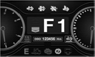
Normal
NA
≥ 95% of counter value for severe
inducement
NA
NA
Level1
Tampering was detected
At starting & Every 20min
SCR SYSTEM MALFUNCTION CALL Time SERVICE AGENT
Engine Power will be Reduced
Level2
36~100hrs
Every 10min
SCR SYSTEM MALFUNCTION CALL Time SERVICE AGENT
Engine Power is Reduced By 25%
Level3
over 100hrs
Continuous
SCR SYSTEM MALFUNCTION CALL Time SERVICE AGENT
Engine Power is Reduced By 50%
Impeded EGR / Interruption of Dosing for Europe only
There are several interruption level points at which the DEF indicator and engine check
lamps light up or blink and the display shows a message to warn that the DEF/Ad-Blue is
not being consumed due to a fault on the engine EGR valve and SCR system. The lower the
point, the more the system limits the engine power and speed. As shown in the table
below, for your information, we provide correlation of Impeded EGR / Interruption of
Dosing inducement strategy and LCD display.
Impeded EGR for Europe
Inducement Stage
Condition
Repeat Offence (within 40hrs)
Inducement Strategy
DEF Level Indicator
DEF Indicator
Engine Check Lamp
Buzzer
Torque Reduction
RPM Limit
Normal
NA
≥ 95% of counter value for severe
inducement
Green ON
Off
Off
Off
0%
NA
Level1
Blocked EGR detected
Green ON
On
On
Off
0%
NA
Level2
36~100hrs
Green ON
On
On
At starting & Every 20min
25%
NA
Level3
over 100hrs
Green ON
Blinking
Blink
Every 10min
50%
60% (about 1500rpm)
Inducement Stage
Condition
Repeat Offence (within 40hrs)
LCD Display
Method
Message on the Display
Normal
NA
≥ 95% of counter value for severe
inducement
NA
NA
Level1
Blocked EGR detected
At starting & Every 20min
SCR SYSTEM MALFUNCTION CALL Time SERVICE AGENT
Engine Power will be Reduced
Level2
36~100hrs
Every 10min
SCR SYSTEM MALFUNCTION CALL Time SERVICE AGENT
Engine Power is Reduced By 25%
Level3
over 100hrs
Continuous
SCR SYSTEM MALFUNCTION CALL Time SERVICE AGENT
Engine Power is Reduced By 50%
Interruption of Dosing for Europe
Inducement Stage
Condition
Repeat Offence (within 40hrs)
Inducement Strategy
DEF Level Indicator
DEF Indicator
Engine Check Lamp
Buzzer
Torque Reduction
RPM Limit
Normal
NA
≥ 90% of counter value for severe inducement
Green ON
Off
Off
Off
0%
NA
Level1
Dosing Interruptio
n detected
Green ON
On
On
Off
0%
NA
Level2
10~20hrs
Green ON
On
On
At starting & Every 20min
25%
NA
Level3
over 20hrs
Green ON
Blinking
Blink
Every 10min
50%
60% (about 1500rpm)
Inducement Stage
Condition
Repeat Offence (within 40hrs)
LCD Display
Method
Message on the Display
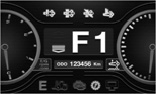
Normal
NA
≥ 90% of counter value for severe inducement
NA
NA
Level1
Dosing Interruption detected
At starting & Every 20min
SCR SYSTEM MALFUNCTION CALL Time SERVICE AGENT
Engine Power will be Reduced
Level2
10~20hrs
Every 10min
SCR SYSTEM MALFUNCTION CALL Time SERVICE AGENT
Engine Power is Reduced By 25%
Level3
over 20hrs
Continuous
SCR SYSTEM MALFUNCTION CALL Time SERVICE AGENT
Engine Power is Reduced By 50%
Moving and Stopping the Lift Truck
Start the engine. See item “Starting the
Engine”
Release the parking brake button
Typical Example
Select the direction of travel by PUSHING the directional lever
FORWARD for forward direction or PULLING the lever BACK for reverse
direction.
Typical Example
Note:
From a stooped position, move the lift truck in first (low) range ONLY.
Warning:
A lift truck with the engine running but without an operator can
move slowly (creep) if the transmission is left engaged.
This could result in personal injury.
Always place the transmission control levers in the NEUTRAL
(centre) position and apply the parking brake before dismounting
from the lift truck.
RELEASE the service foot brake.
PUSH DOWN on the accelerator pedal to obtain the desired travel
speed. RELEASE the pedal to decrease travel speed.
Transmission speed changes to second and third speed range can
be made on the go, without deceleration or braking. When faster
travel speed is needed.
Notice:
Come to a complete stop before changing direction of travel.
Warning:
Sudden reversal of a loaded lift truck traveling forward can
cause the load to fail or the lift truck to tip over.
Stop the loaded lift truck completely, before shifting to
reverse.
Failure to comply could result in personal injury.
Note:
Where conditions permit, directional changes
can be made under full power at speeds up to 8 km/h (5 mph). A
speed of 8 km/h (5 mph) is a fast walk. Directional shift changes
at speeds above 8 km/h (5 mph) are considered abusive. Bring the
lift truck to a complete stop where load stability or other factors
prevent safe operation under full power shifts.
To change the lift truck direction of travel, RELEASE the
accelerator pedal.
PUSH DOWN on the service foot brake pedal to bring the lift
truck to a complete stop.
SHIFT the directional lever to the desired direction of travel.
Rotate the speed selector lever to first (low) speed range, if it
is not already in this position.
RELEASE the service foot brake. PUSH DOWN on the accelerator
pedal to obtain the desired travel speed.
To stop the lift truck when traveling in either direction,
RELEASE accelerator pedal.
PUSH DOWN on service foot brake pedal and bring the lift truck
to a smooth stop.
Inching
Note:
The purpose of the inching pedal is to provide precise lift truck inching control at very
slow travel speed and high engine rpm. This is used for fast hydraulic lift during load
approach, pick up or load positioning.
Typical Example
For inching operation, while keeping the inching switch, press the pedal down slowly. This
will start to apply the service foot brakes and allow the transmission clutch discs to
slip.
Vary the position of inching switch and the accelerator pedal to control the inching speed
and distance.
Pushing down further on the inching switch and pedal will disengage the transmission
completely and apply the service brakes fully to stop and hold the lift truck. This will
provide full engine power for fast hydraulic lift.
Avoid overuse of the inching switch and pedal as this may cause the automatic transmission
oil to overheat or the clutch to slip. Do not use as a footrest or for long periods of
time.
If user operates continuously or both brake pedal and accelerator pedal were depressed at
the same time, it may cause the automatic transmission oil to overheat or the clutch to
slip.
Warning:
When pressing the brake pedal, do not press the inching switch simultaneously. It will give
wearing to transmission clutch disc.
Steering Knob (If Equipped)
There is a steering knob available for inclusion with new truck deliveries. This option is
solely intended for slow travel situations when two handed steering is not possible due to
hydraulic operations.
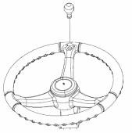
Warning:
Loss of stability can occur when a lift truck steering wheel is rotated quickly while the
truck is in motion. A steering knob will assist with easy rotation of the steering wheel,
but if a steering knob is improperly used (e.g., rotating the steering wheel quickly while
the truck is in motion), this can contribute to truck instability and a tip over. A steering
knob is intended for slow travel maneuverability ONLY.
Inching into Loads
Typical Example
Move the lift truck slowly FORWARD into position and engage the load. The truck should
be square with load, forks spaced evenly between pallet stringers and as far apart as load
permits.
Typical Example
Move the lift truck FORWARD until the load touches the
carriage.
Lifting the Load
Lift the load carefully and tilt the mast back a short distance.
Typical Example
Tilt the mast further back to cradle the load
Typical Example
Operate the lift truck in reverse until the load is clear of
the other material.
Lower the cradled load to the travel position.
Note:
Lift and tilt speeds are controlled by engine rpm.
Traveling with the Load
Notice:
Travel with the load as low as possible, while still maintaining ground clearance.
Typical Example
Carry the load as low as possible but maintain clearance.
On grades, always travel with the load on the UPHILL side, as shown above.
Typical Example
For better vision, travel in reverse with bulky loads.
Unloading
Typical Example
Move the lift truck into the unloading position.
Typical Example
Tilt the mast FORWARD only when directly over the unloading area.
Warning:
Do not tilt the mast forward with the load unless directly over the unloading area,
even if the power is off.
Typical Example
Deposit the load and BACK away carefully to disengage the forks.
Typical Example
Lower the carriage and forks to the travel position or to the
park position.
Turning
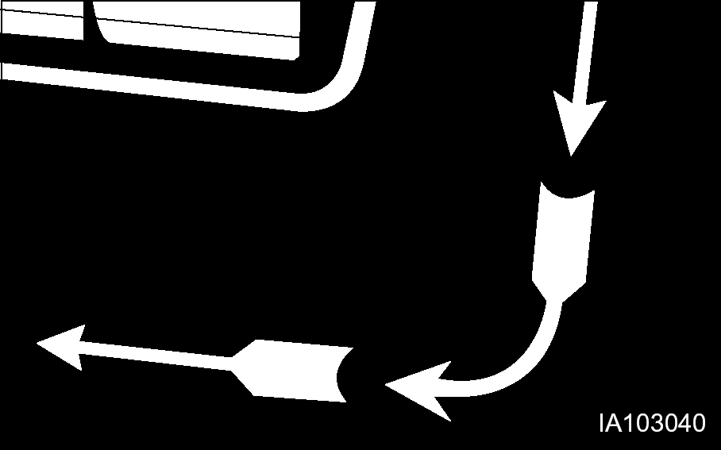
When turning sharp corners, keep close to the inside corner. Begin the turn when the
inside drive wheel meets the corner.
In narrow aisles, keep away from the stockpile when turning
into the aisle. Allow for counterweight swing.
Lifting Drums or Round Objects
Block drums or round objects. Tilt the mast FORWARD and side the fork tips along the
floor to get under the load.
Before lifting, tilt the mast BACK slightly until the load is cradled on the
forks.
Operating in Hot Weather
Keep the following points in mind when you operate the lift
truck in hot weather.
Check the radiator. Clogging can cause the overheating. Clean
them out regularly with a blast of compressed air. Also, check the
leakage of water.
Check the fan belt tension and adjust to proper tension
Even if the engine overheats and the coolant boils over, let
the engine idle for a while with opening engine hood until
temperature falls before shut off the engine.
Safety instructions for attachments when transporting suspended
load
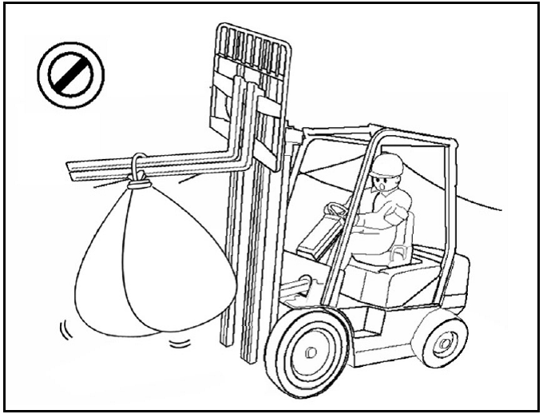
Warning:
Swinging/wide loads and a reduced residual capacity can result in accidents.
Adapt the travel speed to the load, less than walking pace.
Secure swinging loads for example with lifting slings.
Reduce the residual capacity and have it certified by an expert.
Failure to follow the operation precautions may cause early damage to parts.
Safety instructions for attachments when transporting wide
loads
Load lateral centre of gravity
Where it is necessary to lift a wide load where the lateral load
centre of gravity is unknown.
Do a test lift first to determine lateral centre of gravity and
potential movement with the load during transport. Exercise extra
caution when handling offcentre loads that cannot be centreed.
Load Stability
Be careful when stopping or changing direction suddenly, lifting
or lowering suddenly as wide loads could become unstable.
Load Swing
Be careful whilst travelling or turning, the load ends will
swing wide. Make sure you have adequate clearance, and watch out
for people in the area.
Load Shift
Be careful when turning, turn slowly to prevent load from
shifting.
Visibility
When carrying a bulky load which blocks or restricts forward
visibility the truck shall be driven with the load trailing and if
necessary under the direction of a person who has visibility in the
direction of travel, unless safe work practices allow
otherwise.
Parking the Lift Truck
Typical Example
Park the lift truck level, with the forks lowered and the mast tilted forward until the fork
tips touch the floor.
Block the drive wheels when parking on an incline.
Park in authorised area only. Do not block traffic.
Place the transmission controls in NEUTRAL.
Engage the parking brake (push the parking brake button).
Typical Example
Lower the forks to the ground.
Warning:
Blocking the wheels will prevent unexpected lift truck movement, which could cause
personal injury.
Note:
Always run the engine at low idle for 5 minutes before turning off the engine.
Turn the ignition key switch to the OFF position and remove the key.
Actuate each loading lever several times to remove the residual pressure in the respective
cylinders and hoses.
Block the drive wheels if parking on an incline.
Lift Fork Adjustment
Warning:
When adjusting the fork spread, be careful not to pinch your hand between forks and the
carriage slot.
For load stability, always adjust the forks as wide as possible.
Position the load evenly on both forks.
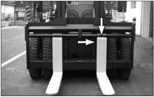
Typical Example of Shaft type Fork
Move up the pin in each fork to slide the fork on the carriage
bar.
Adjust the forks in the position most appropriate for the load
and as wide as possible for load stability.
When adjusting the forks, make sure that the weight of the load
is centreed on the truck.
After adjustment, set the pins to keep the forks in place.
Warning:
Make sure the forks are locked before carrying a load.
Before Storage
Before storing your lift truck, clean and inspect as per the
following procedures.
Wipe away grease, oil, etc. adhering to the body of the truck
with waste cloth, and use water, if needed.
While cleaning the truck, check general condition of the truck.
Especially check the truck body for dents or damage and tyres for
wear or nails or stones in the tread.
Fill the fuel tank with fuel specified.
Check for leakage of hydraulic oil, engine oil, fuel, or
coolant, etc.
Apply grease, where needed.
Check for looseness of nuts and bolts, especially hub
nuts.
Check mast rollers to see that they rotate smoothly.
Prime the oil into the lift cylinders by actuating the lift
lever all the way several times.
Drain off coolant completely in cold weather, if antifreeze is
not used.
Drain off DEF/Ad-Blue completely for long term storage. (If not
the purity of DEF/Ad-Blue would be changed to lower quality.)
Long Time Storage
Perform the following service and checks in addition to the
“Parking the lift truck” services.
Taking the rainy season into consideration, park the machine on
higher and hard ground.
Avoid parking on soft grounds such as an asphalt ground in
summer.
Dismount the battery from the machine. Even though the machine
is parked indoors, if the place is hot or humid, the battery should
be kept in a dry, cool place. Charge the battery once a month.
Apply antirust to the exposed parts which tend to rust.
Cover components such as the breather and air cleaner which may
be caught with humidity.
The machine should be operated at least once a week. Fill the
cooling system, if cooling water is discharged, and mount the
battery. Start the engine and warm up thoroughly. Move the machine
a little forwards and backwards. Operate the hydraulic controls
several times.
To Operate the Lift Truck After a Long Time Storage
Remove covers and antirust from each of the components and
exposed parts.
Drain the engine crankcase, transmission (clutch type machine),
differential and final reduction gear, clean the inside of them and
add new oil.
Drain off foreign matter and water from the hydraulic oil tank
and fuel tank.
Remove the head cover from the engine cylinder. Oil valves and
rocker shaft and check each valve for proper operation.
Add cooling water to the specified level.
Charge the battery and mount it on the machine. Connect the
cables.
Perform pre - operational checks carefully. (refer to
“Before Starting the Engine”)
Warm up the machine.
If deteriorated DEF/Ad-Blue warning lamp turns on and message
appears, drain the fluid in the DEF/Ad-Blue tank thoroughly and
refill with new DEF/Ad-Blue.
Check level of DEF/Ad-Blue and if necessary refill DEF/Ad-Blue
(refer page.90)
Lift Truck Shipping
Check travel route for overpass clearances. Make sure there is
adequate clearance if the lift truck being transported is equipped
with a high mast, overhead guard or cab.
To prevent the lift truck from slipping while loading, or
shifting in transit, remove ice, snow or other slippery material
from the loading dock and the truck bed before loading.
Notice:
Obey all state and local laws governing the height, weight, width and length of a load.
Observe all regulations governing wide loads.
Notice:
Remove ice, snow or other slippery material from the shipping vehicle and the loading
dock.
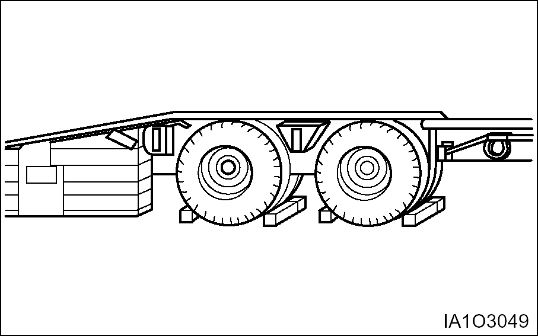
Typical Example
Always block the trailer or the rail car wheels before loading
the lift truck.
Position the lift truck on the truck bed or the rail car. Apply
the parking brake and place the transmission control in
NEUTRAL.
Turn ignition switch to the OFF position and remove the key.
If LP-Gas equipped, remove the LP-Gas fuel tank.
Block the wheels and secure lift truck with tiedowns.
Machine Lifting and Tiedown Information
Notice:
Improper lifting or tiedowns can allow load to shift and cause injury and/or damage.
Weight is given on the serial plate.
Use proper rated cables and slings for lifting. Position the
crane for level lift truck lift.
Spreader bar widths should be sufficient to prevent contact
with the lift truck
Use the tiedown locations provided for lift truck tiedown.
Check the state and local laws governing weight, width, and
length of a load.
Contact your Time Lift Truck branch for shipping instructions
for your lift truck.
Lifting a Forklift using a Crane
Warning:
If lifting rope breaks, serious injury/damage may occur.
The lifting wire rope and stay must be long enough to avoid
contact with the forklift. Short rope/stay can damage the vehicle.
If it's too long, it may cause interference.
Cover the rope/chain with rubber or cloth to prevent damage to
the vehicle, as necessary.
Rope/chain and other lifting tools must have sufficient
strength, and free of any defect or wear.
Avoid impact load to the lifting devices/tools.
Check the weight, length, width and height of the vehicle
before lifting.
Park the crane at an appropriate position.
Connect the rope/chain to the points A and B of the figure
below.
If the wire rope/chain contacts the vehicle, insert a rubber
plate between the rope/chain and the vehicle to protect the
vehicle.
Lift up the vehicle slowly.
How to Fix Forklift to a Carrier
The rope/chain must have sufficient length for fixing.
Park the vehicle on a level ground.
Set the mast vertically. Lower the fork or attachment to the
lowest position.
Set all the operating devices to Neutral Position. Turn OFF the
start switch.
Apply the parking brake. Stop the tyres with blocks (D).
If the vehicle has a mast, connect fixing rope/chain to the
fork (A) and fix the vehicle using the reinforcing bar (B) of the
lower frame. If without mast, fix with the drive axle wheel
(C).
Towing Information
Warning:
Personal injury or death could result when towing a disabled lift truck
incorrectly.
Block the lift truck wheels to prevent movement before releasing the
brakes. The lift truck can roll free if it is not blocked.
Follow the recommendations below, to properly perform the towing
procedure.
Warning:
Do not tow the machine at a speed over 2km/ h(1.2mph) and do not tow the
machine farther than 10km(6miles).
This will prevent damage to the transmission that would result from lack
of lubrication.
These towing instructions are for moving a disabled lift truck a
short distance, at low speed, no faster than 2 km/h (1.2 mph), to a
convenient location for repair. These instructions are for
emergencies only. Always transport the lift truck if long distance
moving is required.
Shield must be provided on the towing lift truck to protect the
operator if the tow line or bar should break.
Do not allow riders on the lift truck being towed unless the
operator can control the steering and/or braking.
Before towing, make sure the tow line or bar is in good
condition and has enough strength for the towing situation
involved. Use a towing line or bar with a strength of at least 1.5
times the gross weight of the towing lift truck for a disabled lift
truck stuck in the mud or when towing on a grade.
Keep the tow line angle to a minimum. Do not exceed a 30掳
angle from the straight ahead position. Connect the tow line as low
as possible on the lift truck that is being towed.
Quick lift truck movement could overload the tow line or bar and
cause it to break. Gradual and smooth lift truck movement will work
better.
Normally, the towing lift truck should be as large as the
disabled lift truck. Satisfy yourself that the towing lift truck
has enough brake capacity, weight and power, to control both lift
trucks for the grade and the distance involved.
To provide sufficient control and braking when moving a disabled
lift truck downhill, a larger towing lift truck or additional lift
trucks connected to the rear could be required. This will prevent
uncontrolled rolling. The different situation requirements cannot
be given as minimal towing lift truck capacity is required on
smooth level surfaces to maximum on inclines or poor surface
conditions.
Consult your Time Lift Truck branch for towing a disabled lift
truck.
Release the parking brake.
Notice:
Release the parking brake to prevent excessive wear and
damage to the parking brake system.
Check that the service foot brake pedal is released.
Key switch is in the OFF position.
Direction control lever is in neutral.
Fasten the tow bar to the lift truck.
Remove the wheel blocks. Tow the lift truck slowly. Do not tow
any faster than 2 km/h (1.2 mph).
Warning:
Be sure all necessary repairs and adjustments have been made before a
lift truck that has been towed to a service area is put back into
operation.
Jacking Information
Warning:
Jacking up Truck can be dangerous and should be done only by trained personnel using proper
tools and procedures.
Block the lift truck wheels to prevent movement while lifting the wheels. The lift truck
can roll free if it is not blocked.
Follow the recommendations below, to properly perform the jacking procedure.
Notice:
Move Trucks to a Secure Non Traffic Maintenance Area with a Level Floor. No Load on
Forks.
The height of lift truck with a flat tyre is lower than with an
inflated tyre. So Height Minimum of Jack must be less than the
value of the above chart.
Stand Capacity should be more than the minimum requirement of
Hydraulic Jack Capacity.
Hydraulic Jack & Jack Stand are commercially available and
should be especially designed for forklift trucks.
Steering Wheel
Raise Forks 3 to 6 in (76 to 152 mm) from Floor.
Place Wheel Chocks under Both Drive Wheels.
Locate Hydraulic Jack under Steering Axle as Shown in Figure A.
Jack Up Truck with Hydraulic Jack.
Set Jack Stand Height as Required Not to Exceed 16 in (405mm).
Figure 4. Figure A
Side
Lower Forks Completely
Locate Hydraulic Jack under Frame as Shown in Figure B.
Jack Up One Side of Truck.
Place Hard Wood Block directly under First Stage Mast.
1ton/2ton class - Use
6X6 in (150X150 mm) Block
3ton/5ton class - Use 8X8 in (200X200 mm) Block
11ton
class - Use 12X12 in (300X300 mm) Block
Jack Up Opposite Side of Truck.
Place Second Hard Wood Block under Other Side of First Stage
Mast.
Do Not Tilt Mast after Blocked.
Figure 5. Figure B
Warning:
Locate Hydraulic Jack under Frame. Do NOT locate on side panel.
Do NOT raise side of truck any more than required to insert hard
wood block.
Warning:
Locate Hydraulic Jack and Jack Stands under steer axle. Do NOT
locate Hydraulic Jack or Jack Stands on Counter Weight.
Inspection, Maintenance and Repair of
Lift Truck Forks
The following section gives practical guidelines for inspection,
maintenance and repair of lift truck forks. It also provides
general information on the design and application of forks and the
common cause of fork failures.
Lift truck forks can be dangerously weakened by improper repair
or modification. They can also be damaged by the cumulative effects
of age, abrasion, corrosion, overloading and misuse.
A fork failure during use can cause damage to the equipment and
the load. A fork failure can also cause serious injury.
A good fork inspection and maintenance program along with the
proper application can be very effective in preventing sudden
failures on the job.
Repairs and modifications should be done only by the fork
manufacturer or a qualified technician who knows the material used
and the required welding and heat treatment process.
Users should evaluate the economics of returning the forks to
the manufacturer for repairs or purchasing new forks. This will
vary depending on many factors including the size and type of
fork.
Forks should be properly sized to the weight and length of the
loads, and to the size of the machine on which they are used. The
general practice is to use a fork size such that the combined rated
capacity of the number of forks used is equal to or greater than
the “Standard(or rated) Capacity” of the lift
truck.
The individual load rating, in most cases, will be stamped on
the fork in a readily visible area. This is generally on the top or
side of the fork shank.
A fork rated at 1500 pounds at 24 inch load centre will be
stamped 1500@24.
A fork rated at 2000 kg at 600 mm load centre will be stamped
2000@600.
The manufacturer identification and year and date of manufacture
are also usually shown.
Some countries have standards or regulations which apply
specifically to the inspection and repair of forks.
Users may also refer to the International Organization For
Standardization-ISO Technical Report 5057-Inspection and Repair of
Fork Arms and ISO Standard 2330-Fork Arms-Technical Characteristics
and Testing.
While there are no specific standards or regulations in the
United States, users should be familiar with the requirements for
inspection and maintenance of lift trucks as provided by the 29
Code Federal Register 1910.178 Powered Industrial Truck, and
ANSI/ASME Safety Standard(s) B56.1 as applicable to the type of
machine(s) in use.
Improper Modification or Repair
Fork failure can occur as a result of a field modification
involving welding, flame cutting or other similar processes which
affect the heat treatment and reduces the strength of the fork.
In most cases, specific processes and techniques are also
required to achieve proper welding of the particular alloy steels
involved. Critical areas most likely to be affected by improper
processing are the heel section, the mounting components and the
fork tip.
Bent or Twisted Forks
Forks can be bent out of shape by extreme overloading, glancing
blows against walls or other solid objects or using the fork tip as
a pry bar.
Bent or twisted forks are much more likely to break and cause
damage or injury. They should be removed from service
immediately.
Fatigue
Parts which are subjected to repeated or fluctuating loads can
fail after a large number of loading cycles even though the maximum
stress was below the static strength of the part.
The first sign of a fatigue failure is usually a crack which
starts in an area of high stress concentration. This is usually in
the heel section or on the fork mounting.
As the crack progresses under repetitive load cycling, the load
bearing cross section of the remaining metal is decreased in size
until it becomes insufficient to support the load and complete
failure occurs.
Fatigue failure is the most common mode of fork failure. It is
also one which can be anticipated and prevented by recognizing the
conditions which lead up to the failure and by removing the fork
service prior to failing.
Repetitive Overloading
Repetitive cycling of loads which exceeds the fatigue strength
of the material can lead to fatigue failure. The overload could be
caused by loads in excess of the rated fork capacity and by use of
the forks tips as pry bars. Also, by handling loads in a manner
which causes the fork tips to spread and the forks to twist
laterally about their mountings.
Wear
Forks are constantly subjected to abrasion as they slide on
floors and loads. The thickness of the fork blade is gradually
reduced to the point where it may not be capable of handling the
load for which it was designed.
Stress Risers
Scratches, nicks and corrosion are points of high stress
concentration where cracks can develop. These cracks can progress
under repetitive loading in a typical mode of fatigue failure.
Overloading
Extreme overloading can cause permanent bending or immediate
failure of the forks. Using forks of less capacity than the load or
lift truck when lifting loads and using forks in a manner for which
they were not designed are some common causes of overloading.
Fork Inspection
Establish a daily and 12 month inspection routine by keeping a
record for the forks on each lift truck.
Initial information should include the machine serial number on
each the forks are used, the fork manufacturer, type, original
section size, original length and capacity. Also list any special
characteristics specified in the fork design.
Record the date and results of each inspection, making sure the
following information is included.
Actual wear conditions, such as percent of original blade
thickness remaining.
Any damage, failure or deformation which might impair the use
of the truck.
Note any repairs or maintenance.
An ongoing record of this information will help in identifying
proper inspection intervals for each operation, in identifying and
solving problem areas and in anticipating time for replacement of
the forks.
First Installation
Inspect forks to ensure they are the correct size for the truck
on which they will be used. Make sure they are the correct length
and type for the loads to be handled.
If the forks have been previously used, perform the “12
Month Inspection”.
If the forks are rusted, see “Maintenance and
Repair”.
Make sure fork blades are level to each other within acceptable
tolerances. See “Forks, Step 4,” in the “2000
Service Hours or Yearly” in “Maintenance
Intervals”
Make sure positioning lock is in place and working Lock forks
in position before using truck. See “Forks, Step 7”, in
the “2000 Service Hours or Yearly” in
“Maintenance Intervals”.
Daily Inspection
Visually inspect forks for cracks, especially in the heel
section, around the mounting brackets, and all weld areas. Inspect
for broken or jagged fork tips, bent or twisted blades and
shanks.
Make sure positioning lock is in place and working. Lock the
forks in position before using the truck. See “2000 Service
Hours or Yearly” in “Maintenance Intervals”.
Remove all defective forks from service.
12 Months Inspection
Forks should be inspected, at a minimum, every 12 months. If the
truck is being used in a multi-shift or heavy duty operation, they
should be checked every six months. See “Forks” in the
“2000 Service Hours or Yearly” in “Maintenance
Intervals.”
Maintenance and Repair
Repair forks only in accordance with the manufacturer’s
recommendations.
Most repairs or modifications should be done only by the
original manufacturer of the forks or an expert knowledgeable of
the materials, design, welding and heat treatment process.
The following repairs or modifications SHOULD NOT be attempted.
Flame cutting holes or cutouts in fork blades.
Welding on brackets or new mounting hangers.
Repairing cracks or other damage by welding.
Bending or resetting.
The following repairs MAY be performed.
Forks may be sanded or lightly ground, to remove rust,
corrosion or minor defects from the surfaces.
Heel sections may be ground with a carbon stone to remove minor
surface cracks or defects. Polish the inside radius of the heel
section to increase the fatigue life of the fork. Always grind or
polish in the direction of the blade and shank length.
Repair or replace the positioning locks on hook type
forks.
Repair or replace most fork retention devices used with other
fork types.
A fork should be load tested before being returned to service
on completion of repairs authorised and done in accordance with the
manufacturer’s recommendations.
Most manufacturers and standards require the repaired fork to be
tested with a load 2.5 times the specified capacity and at the load
centre marked on the fork arm.
With the fork restrained in the same manner as its mounting on
the lift truck, apply the test load twice, gradually and without
shock. Maintain the test for 30 seconds each time.
Check the fork arm before and after the second application of
the test load. It shall not show any permanent deformation.
Consult the fork manufacturer for further information as may be
applicable to the specific fork involved.
Testing is not required for repairs to the positioning lock or
the markings.
Tyres Inflation
Warning:
Personal injury or death could result when tyres are inflated
incorrectly.
Use a self-attaching inflation chuck and stand behind the tread when
inflating a tyre.
Proper inflation equipment, and training in using the equipment, are
necessary to avoid overinflation. A tyre blowout or rim failure can
result from improper or misused equipment.
Always remove (deflate) all air from a single tyre and from both tyres on a dual
assembly before changing them.
Notice:
When changing tyres, change them in sets, even if only one of the tyres
is damaged. If new and used tyres are used on the same axle, tilting
of the mast and rapid tyre wear will result.
The mounting faces of the hub, wheel nuts and wheels must be free of any
foreign material and lubricants of any kind. Tighten wheel nuts
again after 24 hours of operation.
Do not reinflate a tyre that has been driven on while flat or underinflated,
without first checking to be sure the locking ring on the wheel is not
damaged and in position.
Always deflate tyres before changing them.
Tyre Shipping Pressure
The tyre inflation pressures shown in the following chart are
cold inflation shipping pressures.
Size
Ply Rating or Strength
Shipping Pressure
kPa
psi
Front
CD100
10.00X20
16 PR
790
115
CD120
10.00X20
16 PR
790
115
CD140
12.00X20
18 PR
790
115
CD160
12.00X20
18 PR
790
115
Rear
CD100
10.00X20
16 PR
790
115
CD120
10.00X20
16 PR
790
115
CD140
10.00X20
18 PR
790
115
CD160
12.00X20
18 PR
790
115
Standard tyre, ply rating and inflation pressures.
The operating inflation pressure is based on the weight of a
ready-to-work machine without attachments, at rated payload, and in
average operating conditions. Pressures for each application may
vary and should always be obtained from your tyre supplier.
Note:
Fill tyres to the recommended pressures listed +35 kPa (5 psi). Tyres can be filled
with nitrogen.
Tyre Inflation Pressures Adjustment
A tyre inflation in a warm shop area, 18° to 21°C
(65° to 70°F), will be underinflated if the machine works
in freezing temperatures. Low pressure shortens the life of a
tyre.
Torque Specifications
Metric Hardware - This lift truck is almost
totally metric design. Specifications are given in metric and
U.S.Customary measurement.
Metric hardware must be replaced with metric hardware. Check
parts books for proper replacement.
Note:
Use only metric tools on most hardware for proper fit. Other tools could slip and possibly cause injury.
Torques for Standard Hose Clamps - Worm Drive Band Type
Notice:
The following chart gives the torques for initial installation of hose clamps on new hose
and for reassembly or retightening of hose clamps on existing hose.
Clamp Width
Initial Installation Torque on New Hose
N·m 1
lb·in
16 mm (.625 inch)
7.5+0.5
65+5
13.5 mm (.531 inch)
4.5+0.5
40+5
8 mm (.312 inch)
0.9+0.2
8+2
Clamp Width
Reassembly or Retightening Torque on existing hose
N·m1
lb·in
16 mm (.625 inch)
4.5+0.5
40+5
13.5 mm (.531 inch)
3.0+0.5
25+5
8 mm (.312 inch)
0.7+0.2
6+2
11 Newton meter (N·m) is approximately the same as 0.1 kg·m.
Torques for Standard Bolts, Nuts and Taperlock Studs
Notice:
The following charts give general torques for bolts, nuts and taperlock studs or SAE Grade
5 or better quality.
Torques for Bolts and Nuts With Standard Threads
Thread Size
Standard Bolt & Nut Torque
Inch
N·m1
lb·in
1/4
12±4
9±3
5/16
25±7
18±5
3/8
45±7
33±5
7/16
70±15
50±11
1/2
100±15
75±11
9/16
150±20
110±15
5/8
200±25
150±18
3/4
360±50
270±37
7/8
570±80
420±60
1
875±100
640±75
1+1/8
1100±150
820±110
1+1/4
1350±175
1000±130
1+3/8
1600±200
1180±150
1+1/2
2000±275
1480±200
11 Newton meter (N· m) is approximately the same as 0.1 kg·m.
Torques for Taperlock Studs
Thread Size Inch
Standard Taperlock Stud Torque
N·m1
In·lb
1/4
8+3
6+2
5/16
17+5
13+4
3/8
35+5
26+4
7/16
45+10
33+7
1/2
65+10
48+7
5/8
110+20
80+15
3/4
170+30
125+22
7/8
260+40
190+30
1
400+60
300+45
1 1/8
500+70
370+50
1 1/4
650+80
480+60
1 3/8
750+90
550+65
1 1/2
870+100
640+75
11 Newton meter (N·m) is approximately the same as 0.1 kg·m.
Torques for Metric Fasteners
Notice:
Be very careful never to mix metric with U.S. customary (standard) fasteners. Mismatched or
incorrect fasteners will cause lift truck damage or malfunction and may even result in
personal injury.
Original fasteners removed from the lift truck should be checked
for any damages and kept for reassembly whenever possible. If new
fasteners are needed, they must be of the same size and grade as
the ones that are being replaced.
The material strength identification is usually shown on the
bolt head by numbers (8.8, 10.9, etc). The following chart gives
standard torques for bolts and nuts with Grade 8.8.
For mounting torques of main parts, Please refer to Service
manual for detail.
Note:
Metric hardware must be replaced with metric hardware. Check parts book for proper
replacement.
METREC ISO2 THREAD
Thread Size Metric
Standard Torque
N·m1
lb·in
M6
12+4
9+3
M8
25+7
18+5
M10
55+10
41+7
M12
95+15
70+11
M14
150+20
110+15
M16
220+30
160+22
M20
450+70
330+50
M24
775+100
570+75
M30
1600+200
1180+150
M36
2700+400
2000+300
11 Newton meter (N·m) is approximately the same as 0.1kg·m.
2ISO-International Standard Organization
Coolant Information
Warning:
The following information is generic and valid for lift trucks.
Engine operating temperatures have increased to improve engine
efficiency. This means proper cooling system maintenance is
especially important. Overheating, overcooling, pitting, cavitation
erosion, cracked heads, piston seizures, and plugged radiators are
classic cooling system failures. In fact, coolant is as important
as the quality of fuel and lubricating oil.
Notice:
Time recommends that the coolant mixture contain a minimum of 30%
antifreeze or equivalent.
Never add coolant to an overheated engine, engine damage can result.
Allow the engine to cool first.
All water is corrosive at engine operating temperature. The cooling
system should be protected with a 3 to 6% concentration of liquid
supplemental coolant additive at all times, regardless of the
concentration of antifreeze.
Excessive supplemental coolant additive greater than the recommended 6%,
together with concentrations of antifreeze greater than 65% can
cause deposits to form and can result in radiator tube blockage,
overheating, and/or water pump seal damage.
If the machine is to be stored in, or shipped to, an area with freezing
temperatures, the cooling system must be protected to the lowest
expected outside (ambient) temperature.
The engine cooling system is normally protected to -28°C(-20°F) with
antifreeze, when shipped from the factory unless special
requirements are defined.
Check the specific gravity of the coolant solution frequently in
cold weather to ensure adequate protection.
Clean the cooling system if it is contaminated, the engine
overheats or foaming is observed in the radiator.
Old coolant should be drained, the system cleaned and new
coolant added every 2000 service hours or yearly.
Refer to topic, “Cooling System - Clean, Change” in
Every 2000 Service Hours or Yearly section.
Filling at over 20 liters (5 U.S. gallons) per minute can cause
air pockets in the cooling system.
After draining and refilling the cooling system, operate the
engine with the radiator cap removed until the coolant reaches
normal operating temperature and the coolant level stabilises. Add
coolant as necessary to fill the system to the proper level.
Never operate without a thermostat in the cooling system.
Cooling system problems can arise without a thermostat.
Coolant Water
Hard water, or water with high levels of calcium and magnesium
ions, encourages the formation of insoluble chemical compounds by
combining with cooling system additives such as silicates and
phosphates.
The tendency of silicates and phosphates to precipitate
out-of-solution increases with increasing water hardness. Hard
water, or water with high levels of calcium and magnesium ions
encourages the formation of insoluble chemicals, especially after a
number of heating and cooling cycles.
Time prefers the use of distilled water or deionized water to
reduce the potential and severity of chemical insolubility.
Acceptable Water
Water Content
Limits (PPM)
Chlorides (Cl)
50 maximum
Sulfates (SO4)
50 maximum
Total hardness
80 mg/l
Total solids
250 maximum
PH
6.0 to 8.0
ppm = parts per million
Using water that meets the minimum acceptable water requirement
may not prevent drop-out of these chemical compounds totally, but
should minimise the rate to acceptable levels.
Antifreeze
Notice:
Time recommends using automotive antifreeze suitable for gasoline
engines having aluminum alloy parts. Antifreeze of poor quality will
cause corrosion of the cooling system, and thus always use
automotive antifreeze prepared by a reliable maker, and never use it
mixed with antifreeze of different brand.
Time recommends that the coolant mix contain 50% commercially available
automotive antifreeze, or equivalent and acceptable water to
maintain and adequate water pump cavitation temperature for
efficient water pump performance.
Premix coolant solution to provide protection to the lowest
expected outside (ambient) temperature. Pure undiluted antifreeze
will freeze at -23°C (- 10°F).
Use a greater concentration (above 50%) of commercially
available automotive antifreeze only as needed for anticipated
outside (ambient) temperatures. Do not exceed the recommendations,
provided with the commercially available automotive antifreezes,
regarding the coolant mixture of antifreeze to water.
Make proper antifreeze additions.
Adding pure antifreeze as a makeup solution for cooling system
top-up is an unacceptable practice. It increases the concentration
of antifreeze in the cooling system which increase the
concentration of dissolved solids and undissolved chemical
inhibitors in the cooling system. Add antifreeze mixed with water
to the same freeze protection as your cooling system.
Use the chart below to assist in determining the concentration
of antifreeze to use.
Antifreeze Concentrations
Protection Temperature
Concentrations
Protection to –15°C (5°F)
30% antifreeze and 70%
water
Protection to -23°C (-10°F)
40% antifreeze and 60%
water
Protection to -37°C (-34°F)
50% antifreeze and 50%
water
Protection to -51°C (-60°F)
60% antifreeze and 40%
water
General Fuel Information
Use only fuel as recommended in this section.
Notice:
Fill the fuel tank at the end of each day of operation to drive out
moisture laden air and to prevent condensation. Maintain a constant
level near the top of the day tank to avoid drawing moisture into
the tank as the level decreases.
Do not fill the tank to the top. Fuel expands as it gets warm and can
overflow.
Do not fill the fuel filters with fuel before installing them.
Contaminated fuel will cause accelerated wear to the fuel system
parts.
Drain the water and sediment from main fuel storage tank before
it is refilled. This will help prevent water and/or sediment from
being pumped from the fuel storage tank into the engine fuel
tank.
Diesel Fuel Specifications
These engines utilize Tier 4 standards, the use of Ultra Low
Sulfer Diesel (ULSD) is mandatory for these engines.
Diesel Fuel Specification
Location
ASTM D975 No.1D/2D S15
USA
EN590:96
EU
IS0 8217 DMX
International
BS 2869-A1 or A2
United Kingdom
JIS K2204 Grade No. 2
Japan
KSM-2610
Korea
GB252
China
Additional Technical Fuel Requirements
Cetane Rating: The minimum recommended Fuel Cetane Rating is
45. A cetane rating greater than 50 is preferred, especially for
ambient temperatures below 20 °C (4 °F) or elevations
above 1500 m.
Diesel Fuel Specification Type and Sulfer Content % (ppm) used,
must be compliant with all applicable emission regulations for the
area in which the engine is operated.
DO NOT USE Fuels that have sulphur content greater than 0.0015
% (15 ppm).
Diesel fuels specified to EN 590 or ASTM D975 are
recommended.
No.2-D is a distillate fuel of lower volatility for engines in
industrial and heavy mobile service. (SAE J313 JUN87)
These engines utilize Tier 4 standards, the use of Ultra Low
Sulfer Diesel is mandatory for these engines, when operated in US
EPA regulated areas. Therefore, please use No.2-D S15 diesel fuel
as an alternative to
+No.2-D, and use No.1-D S15 diesel fuel as an alternative to
No.1-D for ambient temperature below 10 °C (14 °F).
a) No.1-D or No.2-D, S15: Ultra Low Sulfer Diesel (ULSD) 15 ppm
or 0.0015 wt.%
Bio-Diesel Fuels
In Europe and in the United States, as well as some other
countries, non-mineral oil based fuel resources such as RME
(Rapeseed Methyl Ester) and SOME (Soybean Methyl Ester),
collectively known as FAME (Fatty Acid Methyl Esters), are being
used as extenders for mineral oil derived diesel fuels.
Time approves the use of bio-diesel fuels that do not exceed a
blend of 5% (by volume) of FAME with 95% (by volume) of approved
mineral oil derived diesel fuel. Such bio-diesel fuels
These 95 diesel fuels must meet certain requirements.
The bio-fuels must meet the minimum specifications for the country in which they are
used.
In Europe, bio-diesel fuels must comply with the European Standard
EN14214.
In the United States, bio-diesel fuels must comply with the American
Standard ASTM D-6751.
Bio-fuels should be purchased only from recognized and
authorised diesel fuel suppliers.
Precautions and concerns regarding the use of bio- fuels:
Free methanol in FAME may result in corrosion of aluminum and
zinc FIE components.
Free water in FAME may result in plugging of fuel filters and
increased bacterial growth.
High viscosity at low temperatures may result in fuel delivery
problems, injection pump seizures, and poor injection nozzle spray
atomization.
FAME may have adverse effects on some elastomers (seal
materials) and may result in fuel leakage and dilution of the
engine lubricating oil.
Even bio-diesel fuels that comply with a suitable standard as delivered, will require additional care and attention to maintain the quality of the fuel in the equipment or other fuel tanks. It is important to maintain a supply of clean, fresh fuel. Regular flushing of the fuel system, and / or fuel storage containers, may be necessary.
The use of bio-diesel fuels that do not comply with the standards as agreed to by the diesel engine manufacturers and the diesel fuel injection equipment manufacturers, or biodiesel fuels that have degraded as per the precautions and concerns above, may affect the warranty coverage of your engine.
Fuel components
Standard value
Specific gravity
(kg/lit)
0.820 ~ 0.845
Ignition point
(°C)
40 or more
Kinematic viscosity (40 °C)
(cSt)
1.9 ~ 5.5
Sulphur content
(wt ppm)
Under 15
Cloud point
(°C)
-
Pour point
(°C)
Under -17.5
Low temperature filter blocking temperature
(°C)
Under -16
Color (ASTM)
Under 2.5
Carbon residue (10%)
Under 0.15
distillation residue (wt)
(%)
Total acid number (mg KOH/g)
Under 0.40
Plate corrosion rate (100 °C, 3 hours)
Under 1
Ash content
(mass %)
Under 0.01
Moisture and precipitate
(vol. %)
Under 0.02
Cetane index
45 or more
Distillation experiment temperature (°C)
50% distillation point
-
90% distillation
point
Under 360
DEF/Ad-Blue Information
Diesel Exhaust Fluid (DEF), commonly referred to as AdBlue in
Europe, is an emissions control liquid required by modern diesel
engines. It is injected into the exhaust stream. DEF/Ad-Blue is
never added to diesel fuel. It is a non-hazardous solution of 32.5%
urea in 67.5% de-ionized water. DEF/Ad-Blue is clear and colorless,
and looks exactly like water. It has a slight smell of ammonia,
similar to some home cleaning agents. DEF/Ad-Blue is used in by
Selective Catalytic Reduction (SCR) technology to remove harmful
NOx emissions from diesel engines.
The 32.5% urea concentration is the ideal solution as it
provides the lowest freeze point. Also, SCR systems will be
calibrated to the 32.5%, so that optimum NOx will be reduced during
operation.
DEF/Ad-Blue should comply with the following specifications. The
table lists several worldwide specifications for diesel fuels.
DEF/Ad-Blue Specification
Region
IS0 22241-1
International
DIN 70700
Germany
KS R ISI 22241-1
South Korea
Certification of API
USA
A 32.5% solution of DEF/Ad-Blue will begin to crystallize and
freeze at 12 deg F (-11 deg C). At 32.5%, both the urea and water
will freeze at the same rate, ensuring that as it thaws, the fluid
does not become diluted, or over concentrated. The freezing and
unthawing of DEF/Ad-Blue will not cause degradation of the
product.
CAUTION:
Make sure to wear personal protective equipment and observe precautions when handling
DEF/Ad-Blue.
Lack of DEF/Ad-Blue will reduce engine power. Check the DEF/Ad-Blue level frequently.
Use genuine DEF/Ad-Blue that meets quality standards.
Take care not to refill diesel fuel when replacing the DEF/Ad-Blue.
Do not add any additives, antifreeze in particular, to prevent the DEF/Ad-Blue from
freezing.
Before operating a vehicle which has been stored for a six month period or longer, replace
the DEF/Ad-Blue.
Specification
ISO 22241-1/DIN20200
Min
Max
Urea Content
31.8
33.2
% by weight
Density at 20°C
1.087
1.093
g/cm³
Refracting Index
at 20°C
1.3814
1.3843
Alkalinity as
NH3
0.2
%
Biuret
0.3
%
Aldehyde
5
mg/kg
Insolubles
20
mg/kg
Phosphate
(PO4)
0.5
mg/kg
Calcium
0.5
mg/kg
Iron
0.5
mg/kg
Copper
0.2
mg/kg
Zinc
0.2
mg/kg
Chromium
0.2
mg/kg
Nickel
0.2
mg/kg
Aluminum
0.5
mg/kg
Magnesium
0.5
mg/kg
Sodium
0.5
mg/kg
Potassium
0.5
mg/kg
Storage
The shelf life of DEF/Ad-Blue varies by storage temperature.
Between 40° F and 80° F is recommended to maintain
shelf life.
Above 12° F is recommended to avoid crystallization, which
starts at 11° F.
Below 86° F is recommended, which cause hydrolysis to
occur, with the consequent formation of ammonia and pressure rise,
and will reduce shelf life.
Storage Temperature
Shelf life at constant Temperature
°C
°F
Months
16
60
36
27
80
12
38
100
3
49
120
1.5
Precautions for Handling
Read manufacturer's user manual and/or precautions carefully
before using DEF/Ad-Blue.
Wash hands thoroughly after handling DEF/Ad- Blue.
Wear appropriate personal protective equipment, including
safety gloves, appropriate clothes, goggles, and face shield.
Wash skin with plenty of water if exposed.
Take medical treatment if a large volume is swallowed.
Consult a doctor for any skin irritation.
Wash contaminated clothes before reusing.
If the eyes are exposed, carefully wash with flowing water for
several minutes
Remove contact lenses if possible.
Seek medical advice if eye irritation continues.
Seek medical advice for any risk of exposure or contact.
The product and the container must be disposed of according to
a safe procedure provided by the manufacturer.
Lubricant Information
Some classifications and abbreviations we use in this section follow S.A.E. (Society of
Automotive Engineers) J754 nomenclature and others follow S.A.E. J183.
All MIL specifications are U.S.A. Military.
Recommended oil viscosities are given in the “Lubricant Viscosities” chart later in this
section of the manual.
Greases are classified according to the National Lubricating Grease Institute (NLGI) based on
ASTM D217-68 worked Penetration characteristics which give a defined consistency number.
Engine Oil (DEO and EO)
The following oil specifications provide guidelines for the selection of commercial
products :
DL06 TIER4 FINAL Engine : API CJ4, ACEA E9 or higher.
Warning:
Failure to follow the oil recommendations can cause shortened engine life
due to carbon deposits or excessive wear. Especially for DL06K TIER4 INTERIM engine,
ACEA-E9 (API CJ4) engine oil should be used, because of DPF
performance.
Consult the EMA Lubricating Oils Data Book for a listing of oil brands.
Note:
The percentage of sulphur in the fuel will affect the engine oil recommendations. For
fuel sulphur effects, the Infrared Analysis or the ASTM D2896 procedure can be used
to evaluate the residual neutralization properties of engine oil. The sulphur
products formation depends on the fuel sulphur content, oil formulation, crankcase
blowby, engine operating conditions and ambient temperature.
Hydraulic Oil (HYDO)
The following commercial classifications can be used in the hydraulic system.
ISO 6743/4 HM
AFNOR NFE 48-603 HM
DIN 51524 TEIL 2 H-LP
HAGGLUNDS DENISON HFO-HF2
CINCINNATI P68, 69, 70
Viscosity : ISO VG32
Industrial premium hydraulic oils that have passed the Vickers vane pump test (35VQ25).
These oils should have antiwear, antifoam, antirust and antioxidation additives for
heavy duty use as stated by the oil supplier. ISO viscosity grade of 32 would normally
be selected.
Transmission Oil (TDTO)
Notice:
These oils are formulated for transmissions and drive trains only, and should not be
used in engines. Shortened engine life will result.
Note:
Multi-grade oils are not blended by Time for use in transmissions. Multi- grade oils
which use high molecular weight polymers as viscosity index improvers lose their
viscosity effectiveness by permanent and temporary shear of the viscosity index
improver and therefore, are not recommended for transmission and drive train
compartments.
Note:
Failure to follow this recommendation can cause shortened transmission life due to
material incompatibility, inadequate frictional requirements for disk materials
and/or excessive gear wear.
The oils according to ZF TE-ML03 specifications could be used.
Drive Axle Oil
Differential
Hub
Note:
Failure to follow the recommendation will cause shortened life due to excessive gear
wear.
Select oil that meets below specifications.
API GL-5
MIL-L-2105 C, D
Gear Oil offers maximum protection against the scoring and pitting of gear teeth and
rolling element bearings.
Gear Oil can also provide excellent stability under high temperature conditions and has
superior low temperature performance. It will also give protection against rust and
corrosion.
Brake Cooling Oil (for OCDB)
Hydraulic oil + Additives (Limited slip)
Note:
Use an oil with an appropriate viscosity rate considering the ambient
temperature to avoid oil leakage and cooler damages.
Normal temperature: ISO VG22-32
Ultra low temperature: ISO VG15
Ultra high temperature: ISO VG46
Oils should have antiwear, antifoam, antirust and antioxidation additives for heavy duty
use as stated by the oil supplier. ISO viscosity grade of 32 would normally be
selected.
Use the oil below as the additive to brake oil:
Lubrizol LZ 9990A
Lubricating Grease
Notice:
Use MPGM for heavily loaded bearings and joints where an extreme pressure grease will
maximize the life of Time equipment. This NLGI No. 2 grade is suitable for most
temperatures. If MPGM is not available, use a multipurpose type grease which
contains 3 to 5% molybdenum.
This NLGI no. 2 grade is recommended for light duty automotive type applications where a
high temperature [ up to 175°C (350°F) ] is required. This grease offers excellent
mechanical stability, high resistance to oxidation, good rust protection and excellent
breakaway torque.
If this grease is not available, use a similar multipurpose grease.
Lubricant Viscosities
LUBRICANT VISCOSITIES
FOR AMBIENT (OUTSIDE) TEMPERATURES
Compartment or System
Oil Viscosities
°C
°F
Min
Max
Min
Max
Engine Crankcase (Diesel) API CJ4, ACEA E9
SAE 5W30
-30
+30
-22
86
SAE10W30
-20
+30
-4
86
SAE5W40
-30
+40
-22
104
SAE10W40
-20
+40
-4
104
SAE15W40
-15
+40
5
104
SAE15W50
-15
+50
5
122
SAE20W50
-10
+50
14
122
Power Shift Transmission API CD/TO-2
SAE 10W
-20
+22
-4
+72
SAE 30
+10
+50
+50
+122
Hydraulic and Power Steering System ISO 6743/4
HM
ISO VG32
-20
+30
-4
+86
ISO VG46
-10
+40
+14
+104
ISO VG68
0
+50
+32
+122
Drive Axle Housing (Diff, Hub)
API GL-5
SAE 80W90
-20
+50
-4
+122
Brake Cooling Oil
ISO 6743/4 HM
ISO VG15
-40
+10
-40
+50
ISO VG22
-30
+20
-22
+68
ISO VG32
-20
+30
-4
+86
ISO VG46
-10
+40
-14
+104
The Hot and High Pressure Oil is Stored in the Brake System
Warning:
The hot and high pressure oil in the brake system can cause burn injuries,
cuts and sight damage.
The inspection or change for the hydraulic parts related with brake system
should be asked by Time servicing man or branch
Refill Capacities
Refill Capacities
(Approximate)
CD100/120
CD140/160
Compartment or System
Liters
Liters
Engine Crankcase w/Filter
29
29
Cooling System w/Coolant Recovery
Bottle
35
35
Fuel Tank - Diesel
200
250
DEF Tank
30
30
Power Shift Transmission
25
25
Hydraulic Tank
180
180
Proper quantity
Proper quantity
Drive Axle
Differential
18
19
Hub (Each)
1
1
Brake Oil Tank**
*20
*20
* Start the engine and check the dipstick.
** Hydraulic oil + Additives(1.2 liter)
Maintenance Intervals
Notice:
Never exceed the Maintenance Intervals specified in the manual. Defects and/or damage
to the important functional components may be resulted in.
Notice:
All maintenance and repair, except every 10 service hours or daily, on the lift truck
must be performed by qualified and authorised personnel only.
Notice:
Careless disposal of waste oil can harm the environment and can be dangerous to
persons. Always dispose of waste oil to authorised personnel only.
When Required
Air Intake System - Check, Clean 145
Fuel Filter - Change 147
Engine Valve Lash - Check, Adjust 148
Priming the Fuel System 148
Draining the Water From the Fuel Filter 148
Fuel Tank Filler Cap & Screen (If Equipped) - Clean 49
You must read and understand the warnings and instructions contained in the Safety
section of this manual, before performing any operation or maintenance procedures.
When required indicates no set schedule for review or replacement. This should be done
based on operational conditions and operational environment. The Air filtration system
should be kept as clean as possible and checked as often as the operational conditions
demand. The harsher the application the more frequently the air filter should be
checked. In some applications daily inspection may be required.
Precleaner
Notice:
Never service precleaner with the engine running.
Typical Example
Check the precleaner bowl for dirt build-up. If the dirt is up to the line,
remove the precleaner bowl and empty it. Periodically wash the cover and bowl in
water.
Servicing Filter Element
Notice:
Never service filter with the engine running.
Typical Example
Service the air cleaner when the red target in the service indicator stays locked in the
visible position with the engine stopped.
To service the air cleaner, raise the side cover. Loosen the cover latches and remove the
cover.
Typical Example
Replace the nut or clamp.
Remove the element to separate it from its base and remove it from the air cleaner
housing.
Clean and inspect the element.
Clean the inside of air cleaner housing and the cover. Inspect all connections between the
air cleaner and carburetor. Check intake hose for cracks, damage and loose clamps. Tighten
or replace parts as necessary to prevent leakage.
Notice:
Do not allow dirty air to enter the intake hose when cleaning the inside of the cleaner
housing.
Check the air cleaner housing for loose latches.
Reset the air cleaner service indicator.
Install the air filter element.
Install the cover and tighten the cover latches.
Start the engine and observe the position of the indicator. If the indicator shows RED
after the installation of the primary element, install another clean or a new element or,
replace the secondary element. See topic, “Air Intake System - Change” in Every 500 Service
Hours or 3 months section.
Stop the engine and close the left side cover.
Cleaning Filter Elements
Warning:
Pressure air can cause personal injury.
When using pressure air for cleaning, wear a protective face shield,
protective clothing and protective shoes.
The maximum air pressure must be below 205 kPa (30 psi) for cleaning
purposes.
Notice:
Do not clean the elements by bumping or tapping them.
Inspect filter elements after cleaning. Do not use a filter with damaged
pleats, gaskets or seals.
When cleaning with pressure air, use 205 kPa (30 psi) maximum pressure to
prevent filter element damage.
When cleaning with pressure water, use 280 kPa (40 psi) maximum pressure
to prevent filter element damage.
Have spare elements on hand to use while cleaning used
elements.
The primary element should be replaced after 3 months service.
In case of harsh application having lots of dirt, please clean and
replace the primary element more often.
Air-205 kPa (30 psi) Maximum Pressure
Typical Example
Direct air on the inside and outside of the element along the
length of the pleats. Check the element for any tears, rips or
damage.
Water-280kPa (40 psi) Maximum Pressure
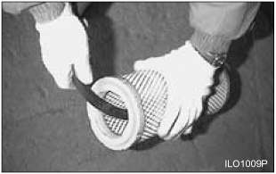
Typical Example
Direct water on the inside and outside of the element along the
length of the pleats. Air dry it thoroughly and then examine
it.
Detergent
Wash the element in warm water and mild household
detergent.
Rinse the element with clean water. See instructions in
preceding topic for cleaning with water.
Air dry it thoroughly, and then examine it.
Checking Element
Typical Example
Insert a light inside the clean dry element and examine it.
Discard the element if tears, rips or damage are found.
Wrap and store good elements in a clean, dry place.
Fuel Filter - Change
Park lift truck with the forks lowered, parking brake applied,
transmission in neutral, engine stopped and cool.
Raise the left side cover.
Warning:
Fuel leaked or spilled onto hot surfaces or electrical components can cause a fire.
Turn the disconnect switch OFF or disconnect the battery when changing fuel filters.
Typical Example
Remove fuel filter cartridge assembly.
Before installing a new cartridge assembly, apply a small amount of clean fuel to the
filter cartridge gasket.
Notice:
Do not fill fuel filters with fuel before installing them. Contaminated fuel will cause
accelerated wear to fuel system parts.
Install the new fuel filter cartridge assembly.
Turn the new fuel filter cartridge assembly until the filter
gasket is fitted against the sealing face.
Turn the fuel filter cartridge assembly an additional 2/3 of
turn.
Close the left side cover.
Engine Valve Lash - Check, Adjust
Notice:
The valve clearances are to be adjusted at the times of the following situations.
When the engine is overhauled and the cylinder heads are disassembled.
When severe noise comes from valve train.
When the engine is not normally operated even though there is no trouble in the fuel
system.
Warning:
To prevent possible injury when adjusting diesel engines, do not use the starter motor to
turn the flywheel.
Hot engine components can cause burns. Allow additional time for the engine to cool before
measuring valve clearance.
Notice:
Measure the valve lash with the engine stopped. To obtain an accurate measurement, allow at
least 20 minutes for the engine cylinder head and block to cool.
Set the clearance to the nominal appropriate clearance given in
the “Valve Clearance Setting” chart shown below.
Valve Clearances
Engine
Valve
Clearance
5.9 Liter Diesel
Exhaust Valves
0.4 mm (0.018 in)
Intake Valves
0.3 mm (0.012 in)
Refer to the “Service Manual” for the complete valve
adjustment procedure.
Bleeding the Fuel System
After changing the fuel filter cartridge assembly, or after having serviced any part of the
fuel system, make sure that the air is bled from the system.
Typical Example
Operate priming pump for five minutes.
Make sure to check leakage of injection pump and filter after operating feed pump many
times.
Draining the Water From the Fuel Filter
Turn the drain valve counter clockwise to open the drain valve
on the bottom of the fuel prefilter.
Drain some fuel (and any water) until clean fuel flows from the
pre-filter.
Fuel Tank Filler Cap & Screen (If Equipped) - Clean
Park the lift truck with the forks lowered, parking brake applied, transmission in neutral
and the engine stopped.
Typical Example
Raise the left side cover.
Remove the filler cap assembly. Separate the cap from the screen. Clean both in clean,
nonflammable solvent.
Dry and assemble cap and screen.
Install cap assembly.
Notice:
Fuel leaked or spilled onto hot surfaces or electrical components can cause a fire.
Drain moisture and sediment from fuel tank as required by prevailing conditions.
Seat - Check, Lubricate
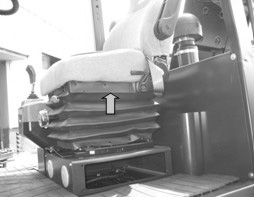
Typical Example
Check the operation of the seat adjuster rod. Make sure that the seat slides freely on its
track. Lightly oil the seat slider tracks if necessary.
SCR Cleaning - DeSOx
In order that the SCR system may maintain its exhaust cleaning efficiency at a proper level,
it should be periodically initialized—“SCR cleaning.”
Notice:
Keep monitoring the vehicle condition via the SCREEN display.
At a workplace which is near inflammables or, heavily populated, or an indoor space,
disable the SCR cleaning function.
Be careful of the high temperature of the exhaust tube or other parts during SCR
cleaning.
Do not operate the vehicle (e.g. pushing the accelerator pedal) during SCR cleaning.
Do not switch off the ignition during SCR cleaning. The SCR system might be damaged.
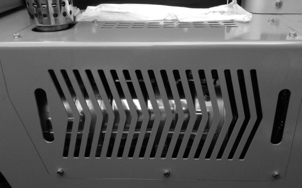
<DOC & SCR Position>
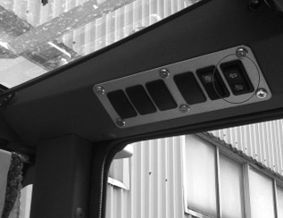
<SCR Cleaning switch Position>
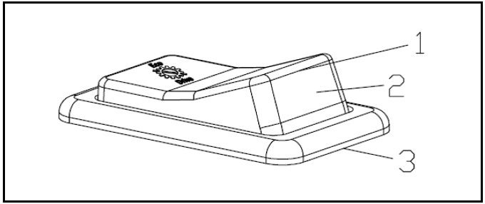
<SCR Cleaning switch>
Automatic SCR Cleaning
The ECU attempts to start SCR cleaning during working—“automatic SCR cleaning”—at a proper
moment after determining the moment. Once automatic SCR cleaning starts, the high temperature
indicator lamp lights up with a popup appearing for the operator to notice it.
<Display that notifies the operator of automatic SCR cleaning >
If automatic SCR cleaning is failed due to a low exhaust temperature, you should perform it
after the vehicle stops. Therefore, it is recommended to keep the vehicle working as far as
possible in order to ensure automatic SCR cleaning is fully completed. While automatic SCR
cleaning is being carried out, exhaust emissions above 500°C may cause fires or burns.
Setting this switch to position "3" prohibits automatic SCR Cleaning in an environment
subject to dust, explosion or regulated noise level. At position "3", a pop-up appears as
shown below:
<SCR Cleaning inhibited>
If automatic SCR cleaning is failed, you should carry it out a while after the vehicle starts
working.
A pop-up on the SCR Display warns the operator to perform SCR Cleaning. (3 warnings: at 10
hrs remaining, 5 hrs remaining, Immediate)
<Exemplary warning – 10 hrs remaining>
Limit the engine power and stop the current work when SCR cleaning is not used; you will be
violating the exhaust regulations if you do not.
To carry out SCR cleaning safely, observe the following steps:
Park the vehicle at a safe place. White smoke can be emitted during SCR Cleaning.
Remove the flammable material or stained oil from exhaust system. High temperature of
exhaust system and gas can cause fire.
Engage the parking brake, and make sure the gear is in neutral.
Allow engine to warm up sufficiently; the SCR cleaning is not possible in cold
condition.
After holding down the switch at the “3” position for three seconds, check that SCR
cleaning has started.
Once SCR cleaning finishes, the LCD display will show a notification.
Press this switch and release it after 3 sec, SCREEN Cleaning will be started and the engine
speed will be increased. Screen pop-up provides information on the warning up and cleaning
process.
<Proceeding>
<Completed>
Display for SCR Cleaning
As shown in the table below, for your information, we provide
Information about correlation between Symbol and message
(Display).
No
State
SYMBOL
Lamp
Message on the Display
1
Request Service SCR Cleaning
-
Recommend SCR Cleaning in 10hr Need Engine Warm up
2
ON
Should Do SCR Cleaning in 5hr Need Engine Warm up
3
Blink
Must Do SCR Cleaning Immediately Need Engine Warm up
4
Progressing Automatic SCR Cleaning
Progressing Service SCR Cleaning
ON
Cleaning SCR
DO NOT STOP ENGINE
6
Under Cleaning SCR
ON
Cleaning SCR
DO NOT STOP ENGINE
7
SCR Cleaning Finish
-
SCR Cleaning completed
8
SCR Cleaning inhibit switch ON
ON
SCR Cleaning is inhibited
Fuses
Note:
If a fuse filament separates, use only the same type and size fuses for replacement. If the
filament in a new fuse separates. Have the circuits and instruments checked.
Notice:
Always replace fuses with ones of the correct ampere rating.
Remove the front cover of fuse box. The fuses are located under the cover.
Fuse - Protects an electrical circuit from an overload. Opens (filament separates) if
an overload occurs.
Check the fuses. Use a flashlight, if necessary. Fuses are identified as follows:
[Cabin, Fuse Box 1]
No.
Use
1
Engine start, Parking controller
10AMP
2
OSS/Parking controller (power)
15AMP
3
Parking sol power Cleep speed power A/M Select power
Seat heater, Wif sensor relay, Air compressor relay, CD player,
Air con/Heater relay, Cabin relay, Stop lamp (power)
15AMP
6
OSS Controller bat Back-up lamp & alarm
15AMP
7
Working lamp (fender lamp)
15AMP
8
Horn power
15AMP
9
Flasher unit power
15AMP
10
Power pack, Air compressor, Urea heater (power)
30AMP
11
Air con/Heater Power , Condensor, Air compressor (power)
30AMP
12
ECU, TCU (power)
30AMP
[OVHD Guard, Fuse Box 1]
No.
Use
1
Engine start, Parking controller
10AMP
2
OSS/Parking controller [power]
15AMP
3
Parking sol power Cleep speed power A/M Select power
15AMP
4
Clearance indicator lamp(gauge) Lamp relays power
15AMP
5
Beacon power
15AMP
6
Mast lamp power LCD display bat
15AMP
7
Rear Lamp power
15AMP
8
Head Lamp (Hi/Low Beam)
15AMP
9
T/M cooler Power
15AMP
10
Cabin power, DC/DC converter (Cigar jack)
30AMP
11
Fuel Filter/Option/EGR power
30AMP
12
-
-
[OVDH Guard, Fuse Box 2]
No.
Use
1
LCD display ign
T/M diagnostic power
E/G diagnostic power
15AMP
2
ECU ign, NOx Sensor
Urea Tank CAN power
Fuel filter realy, ISO 3691 power
TCU ign
15AMP
3
F/R directional power
Inching switch power
15AMP
4
Option power(ACC), Gauge lamp
Camera/Steer Angle Controller power
15AMP
5
Seat heater, Wif sensor relay, Air compressor relay, CD player,
Air con/Heater relay, Cabin relay, Stop lamp (power)
15AMP
6
OSS Controller bat Back-up lamp & alarm
15AMP
7
Working lamp (fender lamp)
15AMP
8
Horn power
15AMP
9
Flasher unit power
15AMP
10
Power pack, Air compressor, Urea heater (power)
30AMP
11
-)
-
12
ECU, TCU (power)
30AMP
Circuit Breaker
Typical Example
Raise the left hood cover.
Typical Example
The main circuit breaker is located on the rear of the support for the controls.
Note:
To reset circuit breakers push on the button. The button should stay in if the breaker is
reset. If the button will not stay in, or comes out shortly after reset, have the circuits
checked.
Bulbs
Bulbs are identified as follows;
Bulb-head lamp halogen(24V-70/75W)
Bulb-rear(24V-70/75W)
Bulb-turn signal(Front, 24V-25/10W)
Bulb-turn signal(Rear, 24V-25W)
Bulb-back up (24V-10W)
LED
Rear Combination Lamp-Stop & tail
Tyres and Wheels - Inspect, Check
Warning:
Servicing and changing tyres and rims can be dangerous and should be done only by trained
personnel using proper tools and procedures. Deflate tyre before removing wheel nuts from
the truck.
If correct procedures are not followed while servicing tyres and rims, the assemblies could
burst with explosive force and cause serious physical injury or death.
Follow carefully the specific information provided by your tyre servicing man or
branch.
Check Inflation and Damage
Inspect tyres for wear, cuts, gouges and foreign objects. Look for bent rims and correct
seating of locking ring.
Check tyres for proper inflation. See “Tyre Inflation Pressures”.
To inflate tyres always use a clip-on chuck with a minimum 60 cm (24 inches) length of hose
to an in- line valve and gauge.
Always stand behind the tread of the tyre. NOT in front of the rim.
Typical Example
Do not re-inflate a tyre that has been run while flat or under-inflated, without first
checking to make sure the rim is not damaged and is in the correct position.
When tyres are changed, be sure to clean all rim parts and, if necessary, repaint to stop
detrimental effects of corrosion. Sand blasting is recommended for removal of rust.
Check all components carefully and replace any cracked, badly worn, damaged and severely
rusted or corroded parts with new parts of the same size and type. If there is any doubt,
replace with new parts.
Do NOT, under any circumstances, attempt to rework, weld, heat or braze any rim
components.
Clean Pressure Cap
The radiator cap is located on the left side of the lift truck.
Warning:
Hot oil and components can cause personal injury. Do not allow hot oil or components to
contact skin.
Remove the radiator cap slowly to relieve pressure.
Inspect the cap for damage, deposits or foreign material. Clean the cap with a clean cloth
or change the cap as necessary.
Install the cap.
Clean Outside of Radiator Core
Warning:
Pressure air can cause personal injury.
When using pressure air for cleaning, wear a protective face shield, protective clothing
and protective shoes.
The maximum air pressure must be below 205 kPa (30 psi) for cleaning purposes.
Compressed air, high pressure water or steam can be used to
remove dust, leaves and general debris from a radiator. Clean as
required by condition of radiator.
The use of compressed air is preferred.
Carriage Roller Extrusion - Adjust
Set the mast vertical.
Lower the carriage completely.
On full free lift and full free triple lift models, the bottom of the inner mast must
be flush with the bottom of the stationary mast.
Measure the distance from the bottom of the inner upright to
the bottom of carriage bearing.
The measurement (A) must be as follows in Chart below.
Height of carriage roller extrusion (A)
STD mast
FF mast
FFT mast
30
-
-
Symbol During Operation
Symbol
Meaning
Remarks
1F, 1R
2F, 2R
3F, 3R
LF, LR
actual gear and direction
left digit shows actual gear
right digit shows actual direction
limp home gear
F or R, no gear
direction F or R selected while inching pedal pressed
F or R flashing
direction F or R selected while turbine speed is too high
CAUTION : gear will engage if turbine speed drops
NN
not neutral, waiting for neutral after power up or a severe
fault
to engage a gear, first move shift selector to neutral position
and again to F or R position
oil temperature too low, no gear available
warm up engine / transmission
N
oil temperature low, only one gear available
warm up engine / transmission
1 bar (special symbol)
manual mode 1ST gear
2 bars
manual mode 2ND gear
3 bars
manual mode 3RD gear
4 bars and 2 arrows
automatic mode
Spanner
at least one fault active
select neutral to get Error code displayed
Error code
see ‘Error Codes’ list at the next page
WS
warning sump temperature
changes between actual gear/direction while driving, in neutral
only displayed if no fault is detected (spanner)
R
warning retarder temperature
changes between actual gear/direction while driving, in neutral
only displayed if no fault is detected (spanner)
WT
warning torque converter temperature
changes between actual gear/direction while driving, in neutral
only displayed if no fault is detected (spanner)
WE
warning high engine speed
changes between actual gear/direction while driving, in neutral
only displayed if no fault is detected (spanner)
PN
direction F or R selected while parking brake engaged
transmission in neutral until parking brake is released
CAUTION: vehicle starts to move after release of parking
brake
EE flashing
no communication with display
checked wiring from TCU to display
Error Codes
Error code number
Meaning
Remarks
12
Logical error at direction select signal
Error is taken back if TCU detects a valid signal for the
direction at the shift
lever
21
Short circuit to battery voltage at clutch cutoff input
22
Short circuit to ground or open circuit at clutch cutoff
input
25
Short circuit to battery voltage or open circuit at transmission
sump temperature sensor input
26
Short circuit to ground at transmission sump temperature sensor
input
2B
Inching sensor - signal mismatch
31
Short circuit to battery voltage or open circuit at engine speed
input
32
Short circuit to ground at engine speed input
33
Logical error at engine speed input
This error is reset after power up of TCU
34
Short circuit to battery voltage at turbine speed input
35
Short circuit to ground at turbine speed input
36
Logical error at turbine speed input
This error is reset after power up of TCU
37
Short circuit to battery voltage or open circuit at internal
speed input
38
Short circuit to ground at internal speed input
39
Logical error at internal speed input
This error is reset after power up of TCU
3A
Short circuit to battery voltage or open circuit at output speed
input\
3B
Short circuit to ground at output speed input
3C
Logical error at output speed input
This error is reset after power up of TCU
3E
Output speed zero doesn't fit to other speed signals
This error is reset after power up of TCU
71
Short circuit to battery voltage at clutch K1
72
Short circuit to ground at clutch K1
73
Open circuit at clutch K1
74
Short circuit to battery voltage at clutch K2
75
Short circuit to ground at clutch K2
76
Open circuit at clutch K2
77
Short circuit to battery voltage at clutch K3
78
Short circuit to ground at clutch K3
79
Open circuit at clutch K3
84
Short circuit to battery voltage at clutch KV
85
Short circuit to ground at clutch KV
86
Open circuit at clutch KV
87
Short circuit to battery voltage at clutch KR
88
Short circuit to ground at clutch KR
89
Open circuit at clutch KR
91
Short circuit to ground at relay reverse warning alarm
92
Short circuit to battery voltage at relay reverse warning
alarm
93
Open circuit at relay reverse warning alarm
B1
Slippage at clutch K1
B2
Slippage at clutch K2
B3
Slippage at clutch K3
B5
Slippage at clutch KV
B6
Slippage at clutch KR
B7
Overtemp sump
BA
Differential pressure oil filter
D1
Short circuit to battery voltage at power supply for sensors
Error codes no. 21 to no. 2B may be a reaction of this fault
D2
Short circuit to ground at power supply for sensors
Error codes no. 21 to no. 2B may be a reaction of this fault
D3
Low voltage at battery
D4
High voltage at battery
D5
Error at valve power supply VPS1
D6
Error at valve power supply VPS2
E3
Short circuit to battery voltage at display output
E4
Short circuit to ground at display output
F1
General EEPROM fault
F3
Application error
This error occurs only if a test engineer did something wrong in
the application
of the vehicle
F5
Clutch failure
TCU shows also the affected clutch on the Display
F6
Clutch adjustment data lost or inching pedal calibration data
lost
Every 10 Service Hours or Daily
You must read and understand the warnings and instructions
contained in the Safety section of this manual, before performing
any operation or maintenance procedures.
Engine Oil Level - Check
Raise the hood to over-centre position.
Warning:
Hot oil and components can cause personal injury. Do not allow hot oil or components to
contact skin.
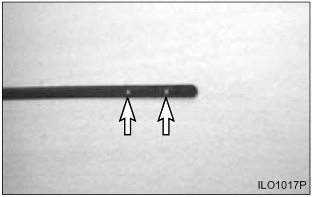
Typical Example
The oil level should be close as possible to upper point of the
oil dipstick. Do not refill more than upper point.
Coolant Level - Check
Warning:
At operating temperature, the engine coolant is hot and under pressure.
Steam can cause personal injury.
Check the coolant level only after the engine has been stopped and the filler cap is cool
enough to touch with your bare hand.
Remove the filler cap slowly to relieve pressure. Cooling system conditioner contains
alkali. Avoid contact with the skin and eyes to prevent personal injury.
Typical Example
Observe the coolant level with engine cold. Maintain coolant level to the proper line on
expansion bottle. If the expansion bottle has no coolant, it will be necessary to check
coolant at the radiator filler neck.
Remove the radiator cap. Fill radiator to the top of the filler neck. Inspect radiator
cap. Replace if damaged. Install the radiator cap.
Typical Example
Start and run the engine to stabilise the coolant level in the filler neck. If low, add
coolant until it reaches the top of the filler neck. Install the radiator cap. Observe
coolant level in the expansion bottle. If necessary, add coolant to bring the coolant to the
appropriate line on the expansion bottle.
Stop the engine.
Inspect the cooling system for leaks, hose cracks or loose connections.
Warning:
Pressure air can cause personal injury.
When using pressure air for cleaning, wear a protective face shield, protective
clothing and protective shoes.
Maximum air pressure must be less than 205 kPa (30 psi) for cleaning purposes.
Blow any dust and lint from the radiator fins.
Service Indicator
Typical Example
Observe the air cleaner service indicator.
Service the air cleaner when the RED band in the service indicator, locks in the visible
position. See topic, “Air Intake System - Check, Clean” in “When Required”.
Note:
Service the element more frequently, as required, in severe dust or lint conditions. Also,
service it more frequently, where the operator is required to wear a respirator.
DEF/Ad-Blue Fluid Level - Check
Start the engine and check DEF/Ad-Blue level at the LCD.
If DEF/Ad-Blue level is less than 20%, must refill DEF/ Ad-Blue
in the DEF/ Ad-Blue tank.
Walk-Around Inspection
For maximum service life of the lift truck, make a thorough walk-around inspection. Look
around and under the truck for such items as loose or missing bolts, debris or dirt buildup,
fuel, oil or coolant leaks and cut or gouged tyres.
Have any repairs made and debris removed, as needed.
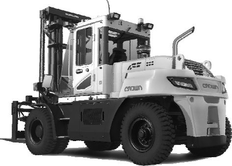
Typical Example
Inspect the tyres and wheels for cuts, gouges, foreign objects, inflation pressure and
loose or missing bolts.
Inspect the mast and lift chains for wear, broken links, pins and loose rollers.
Inspect the hydraulic system for leaks, worn hoses or damaged lines.
Look for transmission and drive axle leaks on the lift truck and on the ground.
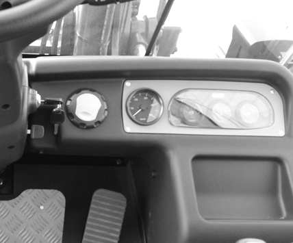
Example of CABIN
Inspect the operator’s compartment for loose items and cleanliness.
Inspect the instrument panel for broken gauges and indicator lights.
Test the horn and other safety devices for proper operation.
Typical Example
Inspect the cooling system for leaks, worn hoses and debris buildup.
Inspect engine compartment for oil, coolant and fuel leaks.
Inspect the carriages, forks or attachments for wear, damage, and loose or missing
bolts.
Visually inspect forks for cracks, especially in the heel section, around the mounting
brackets, and all weld areas.
Inspect for broken or jagged fork tips, bent or twisted blades and shanks.
Make sure positioning lock is in place and working. Lock the forks in position before
using the truck. See Step 7 of “Forks” in “Every 2000 Service Hours or Yearly”.
Remove all defective forks from service.
Mast Channels (Roller Mast Only) - Lubricate
Typical Example
The channels on the roller-type mast require a break-in period.
Apply a light film of lubricant on the channels where the rollers
ride. This will prevent metal peel until the rollers set a
pattern.
Back-Up Alarm - Test
Turn the start switch to ON perform the test.
Apply the service brake. Move the transmission control lever
into REVERSE.
The alarm should start to sound immediately. It will continue to
sound until the transmission control lever is moved to NEUTRAL or
FORWARD.
The back-up alarm is located on the rear of the machine.
The back-up alarm is a “smart” alarm that
continually monitors the noise level. It automatically adjusts the
loudness according to the surrounding sound level.
Transmission Oil Level - Check
Warning:
Hot oil and components can cause personal injury. Do not allow hot oil or components to
contact skin.
Start and operate the lift truck until the transmission reaches
normal operating temperature.
Park the lift truck level with the forks lowered, parking brake
applied and the transmission controls in NEUTRAL.
With the service brake applied and the engine at low idle,
shift the directional control lever to forward 1ST, 2ND, 3RD and
then to reverse 1ST, 2ND, 3RD, to fill the clutches.
Shift the direction control lever to the NEUTRAL position.
Open the floor plate by tilting cabin.
Typical Example
Loosen the oil dipstick counter-clockwise, remove and clear it. Insert the oil dipstick
slowly into the oil level tube until contact is obtained, and pull the dipstick out
again.
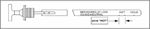
When the oil temperature is around 40°C, the marking on
the oil dipstick must be above the cold start mark,
“COLD”. When the oil temperature is around 80°C,
the oil level must be in the zone “HOT”.
Install the oil dipstick again and tighten it clockwise.
Hydraulic Oil Level – Check
Warning:
At operating temperature, the hydraulic tank is hot and under pressure.
Hot oil can cause burns.
Remove the filler cap only when the engine is stopped, and the cap is cool enough to touch
with your bare hand. Remove the filler cap slowly to relieve pressure.
Operate the lift truck for a few minutes to warm the oil. Park the lift truck on a
level surface, with the forks lowered, mast tilted back, parking brake engaged, transmission
in NEUTRAL and the engine stopped.
Typical Example
Remove the dip stick/filler cap assembly and check the oil
level.
Maintain the oil level to the FULL mark on the dip stick/filler
cap assembly.
Install the dip stick/filler cap assembly.
First 50-100 Service Hours or a
Week
You must read and understand the warnings and instructions
contained in the Safety section of this manual, before performing
any operation or maintenance procedures.
Engine Oil & Oil Filter - Change
The percentage of sulphur in the fuel will affect the engine oil
recommendations. If the fuel has over 0.5% sulphur content, the
engine oil must have a TBN of 20 times the percentage of fuel
sulphur (TBN as measured by the ASTM D-2896 method). Your oil
supplier should be able to furnish the correct oils.
Operate lift truck a few minutes to warm oil. Park the lift
truck with the forks lowered, parking brake applied, transmission
in neutral and the engine stopped.
Raise rear of lift truck off the ground and block securely.
Hot oil and components
can cause personal injury. Do not allow hot oil or components to contact skin.
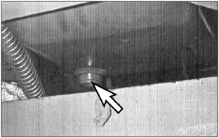
Typical Example
Notice:
Careless disposal of waste oil can harm the environment and can be dangerous to
persons. Always dispose of waste oil to authorised and licensed personnel only.
Remove the crankcase drain plug and allow oil to drain. Clean
and install drain plug.
Remove and discard oil filter element.
Wipe sealing surface of oil filter element mounting base. Make
sure the old gasket is removed.
Before installing a new filter element, apply a small amount of
clean engine oil to the filter element gasket.
Install the new filter element. When the gasket contacts the
base, tighten it 3/4 of a turn more. Do not overtighten it.
Raise the lift truck, remove the blocking and lower the lift
truck.
Raise the side covers.
Typical Example
ill the crankcase. See “Refill Capacities”.
Start the engine and allow the oil to fill the filter and
passages.
Check for oil leaks.
Stop the engine and measure the oil level. The oil level should be close as possible
to max point of the oil dipstick.
Warning:
Do not refill more than max point.
Close the side cover.
Notice:
Servicing of the engine oil and oil filter element will largely affect the engine
performance as well as the engine life.
Engine oil and filter element must be changed after the first 50-100 Service hours or a
week.
Transmission Oil & Oil Filter - Change
Warning:
Hot oil and components can cause personal injury. Do not allow hot oil or components to
contact skin.
Park the lift truck level, with the forks lowered, parking brake
engaged, transmission in NEUTRAL and the engine stopped.
Open the oil drain plug and drain the used oil.
Notice:
Careless disposal of waste oil can harm the environment and can be dangerous to
persons. Always dispose of waste oil to authorised and licensed personnel only.
Clean all drain plug with magnetic insert and surface on the housing and install it
again with O- ring.
Rotate the filter counter-clockwise to remove it.
Put a small amount of clean oil on the gasket.
Clean the filter head.
Note:
Transmission Oil Filter should be replaced First 100 Service Hours and Every 1000
Service Hours with the change of the Transmission Oil. The filter differential pressure
valve (bypass valve) is equipped with a maintenance-switch which is informing the
operator about the contamination of the filter. At the lighting-up of the symbol on
Transmission Display, the filter must be replaced.
Screw the filter and tighten it by hand about 1/3 to 1/2 turn.
Loosen the oil dipstick counter-clockwise and remove it. Fill
the compartment with oil. See “Refill Capacities”.
Install the dipstick.
Start the engine.
With the service brake applied and engine at low idle, shift
the transmission to forward 1st, 2nd, 3rd and reverse 1st, 2nd, 3rd
to fill the clutches.
Shift the transmission into NEUTRAL. Engage the parking brake.
Loosen the oil dipstick counter-clockwise, remove and clear it.
Insert the oil dipstick slowly into the oil level tube until
contact is obtained, and pull the dipstick out again.
When the oil temperature is around 40°C, the marking on
the oil dipstick must be lying above the cold start mark,
“COLD”. When the oil temperature is around 80°C,
the oil level must be lying in the zone “HOT”.
Install the oil dipstick again and tighten it clockwise.
Check for oil leaks at the filter and drain plug.
Stop the engine.
Drive Axle Oil - Change
Park the lift truck on a level surface, parking brake applied,
transmission in neutral.
Warning:
Hot oil and components can cause personal injury. Do not allow hot oil or components to
contact skin.
Raise the carriage high enough to access the drive axle housing
level/fill plug with breather.
Block the bottom of the carriage with a block of wood to hold
the carriage in the raised position.
Turn the ignition switch OFF.
Typical Example
Remove the drive axle housing level/fill plug with breather.
Wash them in clean, nonflammable solvent.
Place an appropriate container under the axle to catch the oil
as it drains.
Remove the drive axle housing drain plug.
Allow the oil to drain completely out.
Discard the old oil according to local regulations.
Clean and reinstall the drive axle housing drain plug.
Typical Example
Remove planetary hub level/drain/fill plugs. Allow the oil to
drain completely out. Reinstall the planetary hub plugs.
Fill the drive axle housing with sufficient fresh oil through the drive axle housing
level/fill plug opening until it reaches the bottom of the hole. See the section, “Lubricant
the Viscosities.” and “Refill Capacities” for the type and amount of oil to use.
Remove the wood blocking and Lower the carriage.
Operate the lift truck for a few minutes. And align the
planetary hub drain/fill/level plugs to the horizontal position.
Remove the plugs.
Fill the planetary hubs, through the drain/fill/ level hole,
until the oil reaches the hole. See the section, “Refill
Capacities”.
Clean and reinstall the planetary hub drain/fill/ level
plugs.
Brake Oil Tank and Strainer (OCDB) - Clean, Change
Warning:
Hot oil and components can cause personal injury. Do not allow hot oil or components to
contact skin.
Park the lift truck level with the forks lowered, parking brake
engaged, transmission in NEUTRAL and the engine stopped
Place an appropriate container under the brake oil tank to catch the oil as it drains.
Remove the drain plug under the brake oil tank.
Typical Example
Clean and reinstall the drain plug.
Remove hydraulic hose and bolts from the brake oil tank side cover at the frame
side.
Typical Example
Disassemble the strainer and wash them in clean, nonflammable solvent.
Assemble the strainer and connect the hydraulic hose.
Fill the brake cooling oil. See the section, “Refill
Capacities
Discard the old oil according to local regulations.
Start the engine and check the oil dipstick.
Check for oil leaks at the brake oil tank side cover and drain
plug.
Stop the engine
Parking Brake - Test, Adjust
Warning:
To prevent personal injury, the operator must be ready to use the service brake if the
parking brake is not adjusted correctly and the lift truck starts to move.
Note:
Be sure area around the lift truck is clear of personnel and obstructions.
Drive the lift truck with a rated load up a 15% incline.
Halfway up the incline, stop the lift truck by applying the service brakes.
Typical Example
Engage the parking brake and slowly release the service
brake.
If the parking brake has the correct adjustment the lift truck
will be hold in place. If the parking brake does not hold, adjust
the parking brake.
To Adjust (OCDB BRAKE)
During this adjusting process, the parking brake must be released of cup springs must be
completely pre-tensioned.
Stand the vehicle on an even surface and secure against rolling away.
Key on and Release the parking brake by using the required release pressure.
Release the screw cap(1) and unscrew.
Release the lock nut (2) and turn the adjusting screw(3) with socket. wrench manually
clockwise until the two brake pads make contact with the brake disk.
Turn the adjusting screw(3) anti-clockwise about 1/2 turn.
Hold the adjusting screw(3) in position with the hexagonal socket wrench and lock with the
lock nut(2).
Mount the screw cap(1) and tighten as far as possible manually.
Actuate the brake valve several times and check the braking efficiency of the parking brake
on a slope.
Every 500 Service Hours or 3
Months
You must read and understand the warnings and instructions
contained in the Safety section of this manual, before performing
any operation or maintenance procedures.
Changing Primary Element
See topic, “Air Intake System - Check, Clean” in
“When Required”.
Changing Secondary Element
Replace the secondary element after the primary element has been
cleaned three times or yearly.
Remove the primary air cleaner element. See topic “Servicing Filter Element”. Clean
the inside of the air cleaner housing and cover.
Typical Example
Remove the secondary element. Inspect the gasket between the air cleaner housing and
the engine inlet. Replace the gasket if it is damaged.
Notice:
Always replace the secondary element. Do not attempt to reuse it by cleaning.
Install a new secondary element. Install a new or cleaned
primary element. Install the cover. Tighten the latches.
Start the engine and observe the air cleaner service indicator.
If the indicator shows RED after installing a new secondary element
and a cleaned primary (outer) element, replace the cleaned primary
filter with a new element.
Stop the engine. Close the hood and seat assembly.
Engine Oil & Filter - Change
See topic, “Engine Oil & Filter - Change” in
“First 50- 100 Service Hours”.
Brake Oil Tank and Strainer (OCDB) - Clean, Change
See topic, "Brake oil Tank and Strainer (OCDB) - Clean, change"
in "First 50-100 Service Hours.
Belts - Check, Adjust
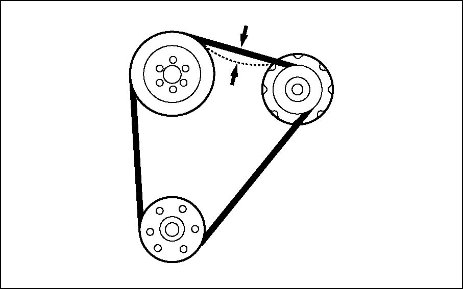
Typical Example
Check the condition and adjustment of the belt. Correct adjustment allows 10 mm (3/8
inch) deflection under 110 N (25 lb) of force.
Typical Example
Notice:
Failure to loosen the alternator mounting bolt(2) will cause excessive stress and break
the alternator mounting ear.
To adjust the alternator drive belt, loosen adjusting (1),
mounting bolt (2) and nut (3). Move the nut (1) in or out as
required. Tighten bolts (2) and nut (3).
Chassis Pivot Eyebolts
Typical Example
Lubricate two fittings for the pivot eyebolts, one on each tilt cylinder.
Check the pivot eye pins for loose retainer bolts and wear.
Mast Pivot Eyes
Typical Example
Lubricate two fittings for the mast pivot eyes, one on each
side of the mast.
Check the pivot eye pins for loose retainer bolts and
wear.
Mast Hinge Pins - Lubricate
Park the lift truck on a level surface, parking brake applied,
transmission in neutral.
Raise the carriage high enough to access the drive axle hosing
level/fill plug.
Block the bottom of the carriage with a block of wood to hold
the carriage in the raised position.
Turn the ignition switch OFF.
Lubricate the two fittings for the mast hinge pins, one on each
side of the mast.
Crosshead Rollers - Inspect
Operate the mast through a lift cycle. Watch the chains move over the crosshead
rollers. Make sure the chain is tracking over the rollers properly.
Typical Example
Check for damaged crosshead rollers, guards and retainer
rings.
Operate the lift, tilt and attachment controls. Listen for
unusual noises. These may indicate a need for repair.
Check for loose bolts and nuts on the carriage. Remove any
debris from the carriage and mast.
Check the forks and attachments for free operation and damage. Have repairs made if
necessary.
Typical Example
Brush a film of oil on all links of the chain.
Raise and lower the carriage a few times to allow lubricant to enter into the chain
links.
Warning:
Lubricate chains more frequently than normal in applications where the lift truck is
operating in an atmosphere which could cause corrosion of components or when lift truck
must work in rapid lift cycles.
Check the air cleaner housing for loose latches.
Lubricate Mast Side Rollers
Typical Example
Lubricate the 4 fittings on the outer mast (2 fittings) and inner mast (2 fittings).
Lubricate Carriage Side Rollers
Typical Example
Lubricate the 4 fittings for the carriage side rollers, two on
each side of the carriage side rollers.
Horn and Lights(If Equipped) - Check
Typical Example
Press horn button, to determine if horn is operational.
Check and replace all defective gauges.
Check all lights such as, directional, backup, driving and floodlights for correct
operation. Replace all burned out bulbs. Have repairs made if needed.
Overhead Guard - Inspect
Typical Example
Check tightness of overhead guard mounting bolts at 240 N·m (175 lb·ft).
Check overhead guard for bent or cracked sections. Have repairs made if needed.
Universal Joint - Inspect, Lubricate
Typical Example
Lubricate 1 fitting on each universal joint. Total 2 fittings.
Lubricate 1 fitting on the drive shaft.
Parking Brake - Test, Adjust
See topic, “Parking Brake - Test, Adjust” in
“First 50- 100 Service Hours or a Week.”
Brake Cam Shaft & Slack Adjuster - Lubricate
Lubricate the 4 fittings for the brake cam shaft, two on each
side of the brake cam shaft.
Lubricate the 2 fittings for the slack adjuster, one on each
side of the slack adjuster.
Steering Mechanism - Check, Lubricate
Typical Example
Lubricate the steer axle king pins, total of four fittings. Two
on the right side and two on the left side.
Lubricate the steering link bearings, total of four fittings.
Two on the right side and two on the left side.
Check for any worn or loose components of the steering mechanism. Remove any debris or
trash as required.
Lubricate the steer axle shaft pins, total of two fittings
(front & rear).
Steer Wheels
Typical Example
Install steel wheel. Put two nuts opposite each other (180°). Tighten bolt.
Inspect tightness of wheel nuts in a sequence opposite each other 650 N·m (480
lb·ft).
Drive Wheel
Clean the top of the battery and terminals.
Check terminals for corrosion. Coat terminals with heavy grease.
Battery Terminal - Clean, Inspect
Warning:
Batteries give off flammable fumes that can explode.
Do not smoke when observing the battery electrolyte levels.
Electrolyte is an acid and can cause personal injury if it contacts skin or eyes.
Always wear protective glasses when working with batteries.
Install drive wheel. Put two nuts opposite each other (180°).
Inspect tightness of wheel nuts in a sequence opposite each other to 750 N·m (550
lb·ft).
Every 1000 Service Hours or 6
Months
You must read and understand the warnings and instructions
contained in the Safety section of this manual, before performing
any operation or maintenance procedures.
Hot oil and components can cause personal injury. Do not allow hot oil or components to
contact skin.
Park the lift truck level with the forks lowered, parking brake
engaged, transmission in NEUTRAL and the engine stopped.
Remove the hydraulic tank drain plug located on the bottom of the frame. Allow the oil
to drain in a suitable container. Clean and install the plug.
Loosen the bolts of the hydraulic tank cover.
Remove the strainer from the tank.
Install the new strainer by hand.
Install the hydraulic tank cover and fasten the bolts.
Remove the breather.
Wash the breather in clean, nonflammable solvent and dry
it.
Fill the hydraulic tank. See topic, “Refill
Capacities.”
Install the breather.
Start the engine and operate the hydraulic controls, and the
steering system, through a few cycles to fill the lines. Look for
oil leaks.
Stop the engine and check the oil level. With all cylinders
retracted, maintain the oil level to the FULL mark on the dip
stick/filler cap assembly.
Hydraulic Return Filter – Change
Warning:
Hot oil and components can cause personal injury. Do not allow hot oil or components to
contact skin.
Park the lift truck level with the forks lowered, parking brake engaged, transmission in
NEUTRAL and the engine stopped.
Open the floor plate by tilting cabin.
Remove bolts ① and filter housing ②.
Remove and discard filter element from filter housing ②.
Clean the filter housing with a clean, nonflammable solvent.
Clean the housing base ③.
Insert a new filter element into the filter housing.
Inspect the filter housing seal. Replace if necessary.
Apply a small amount of clean oil to the filter element seal and housing seal.
Install the filter housing ② with filter to the housing base ③. Install bolts ① and
tighten 60 to 70 N·m (45 to 50 lb·ft).
Start the engine and operate the hydraulic controls, and the steering system, through a
few cycles to fill the lines. Look for oil leaks.
Stop the engine and check the oil level. With all cylinders retracted, maintain the oil
level to the FULL mark on the dip stick/filler cap assembly.
Hydraulic High Pressure Filter - Change
Park the lift truck with the forks lowered, parking brake
engaged, transmission in NEUTRAL and the engine stopped.
Remove the floor plate or tilt the cabin
Remove filter housing ②.
Remove and discard filter element from filter housing
②.
Clean the filter housing with a clean, nonflammable
solvent.
Insert a new filter element into the filter housing
Inspect the filter housing seal. Replace if necessary.
Apply a small amount of clean oil to the filter element seal
and housing seal.
Install the filter housing ② with filter to the housing
base ① and tighten 40 to 46 N·m (30 to 35
lbs·ft).
Start the engine and step on the acceleration pedal. Look for
oil leaks.
Stop the engine and check the oil level. With all cylinders
retracted, maintain the oil level to the FULL mark on the dip
stick/filler cap assembly
Lift Chain Wear Test
Inspect the part of the chain that is normally operated over the
cross head roller. When the chain bends over the roller, the
movement of the parts against each other causes wear.
Inspect to be sure that chain link pins do not extend outside of
the link hole. If any single link pin is extended beyond its
connecting corresponding link, it should be suspected of being
broken inside of its link hole. Lift chains are required to check
for wear about every 1,000 service hours or 6 months.
Chain wear test is a measurement of wear of the chain links and
pins. Take the following steps to check chain wear.
Lift the mast and carriage enough for getting tension on lift chains.
Typical example
Measure precisely ten links of chain distance at the centre of
pins in millimeter.
Calculate chain wear rate*.
If the chain wear rate is 2% or more, replace the lift
chain.
** Chain Pitch for CD100/120 = 44.5 mm
** Chain Pitch for CD140/160 = 50.8 mm
Check for Equal Tension
Typical example
Lift the carriage and the mast high enough for getting tension
on lift chains. Check the chains, and make sure the tension is the
same. Lift chains are required to check for equal tension about
every 1,000 service hours or 6 months.
Warning:
Personal injury can be caused by sudden movement of the mast and carriage. Keep hands and
feet clear of any parts that can move.
Lift Chain Adjustment
Typical example for carriage equal tension
If the tension is not the same on both chains, take the
procedure as follows.
Note:
If carriage height is not correct, make adjustments by following procedures.
Carriage Chain Adjustment
Typical example for carriage chain
Make sure that carriage height is correct. If correct, adjust
chain for equal tension. If not, adjust chain for correct carriage
height by adjusting anchor nuts ①.
Note:
See the previous section, “Carriage Roller Extrusion” in “When Required” for proper
carriage height.
Fully lower the carriage and tilt mast forward or lift the
carriage and put blocks under the carriage to release the tension
from the lift chains.
Remove bolt ② washer ③, spacer ④ stopper
⑤ and adjust nut ① to get proper distance from bottom
of inner upright to the bottom of carriage bearing.
Make adjustment anchor nut ① for equal chain
tension.
Set the mast vertical and raise the carriage and check equal
chain tension. If not equal, repeat the same procedure as step 1
through step 3.
Put LOCTITE No. 242 tread lock on the threads of the anchor
nuts ① after the adjustment is completed.
Transmission Oil & Oil Filter - Change
See topic, “Transmission Oil & Oil Filter -
Change” in “First 50-100 Service Hours or a
Week”.
Every 1500 Service Hours or 9
Months
You must read and understand the warnings and instructions
contained in the Safety section of this manual, before performing
any operation or maintenance procedures.
Drive Axle Oil - Change
See topic, “Drive Axle Oil - Change” in “First
50-100
Service Hours or a Week.
Every 2000 Service Hours or
Yearly
You must read and understand the warnings and instructions
contained in the Safety section of this manual, before performing
any operation or maintenance procedures.
Steer Wheel Bearings - Reassemble
Park the lift truck level with the forks lowered, parking brake
engaged, transmission in NEUTRAL and the engine stopped.
Typical Example
Lift the steer wheels off the ground. Place stands or blocking
under the frame and steer axle to support the lift truck.
Remove the hub cap and gasket.
Typical Example
Straighten the lockwasher tangs.
Remove the locknut (1), lockwasher (2) and nut (3). Remove the outer wheel bearing.
Remove the wheel assembly. Examine the wheel for damage and
wear. Replace the wheel if necessary.
Remove the inner bearing. Clean and lubricate the steering
knuckle. Reassemble both the inner and outer bearing cones.
Install the inner bearing. Lubricate the seal and install the
wheel assembly on the knuckle.
Install the outer wheel bearing and the outer nut.
Tighten the nut to 580 N·m (430 lb·ft), while turning
wheel hub to seat the bearing.
Loosen the nut. Retorque it to 290 N·m (215 lb·ft).
Install the lockwasher and locknut. Tight the locknut to 580
N·m (430 lb·ft).
Install the hub cap.
Raise the lift truck and remove the blocking Lower the lift
truck to the ground.
Cooling System - Clean, Change
Warning:
At operating temperature, the engine coolant is hot and under pressure.
Steam can cause personal injury.
Check the coolant level only after the engine has been stopped and the filler cap is cool
enough to touch with your bare hand.
Remove the filler cap slowly to relieve pressure. Cooling system conditioner contains
alkali. Avoid contact with the skin and eyes to prevent personal injury.
Use all cleaning solutions with care.
The lift truck must be level, the forks lowered, the parking brake engaged, the transmission
in NEUTRAL and the engine stopped and cool.
Typical Example
Turn the radiator cap slowly to relieve the pressure, and then remove the cap.
Typical Example
Remove the block drain plug.
Typical Example
Open radiator drain valve. Allow the coolant to drain. Drain the recovery bottle.
Close radiator drain valve and install block drain plug. Fill the cooling system with 1 kg
(2 lb) sodium bisulphate per 40 liters (10 gallons) of water. Most commercial cooling system
cleaners can be used.
Start and run the engine for 30 minutes.
Stop the engine and drain the cleaning solution.
Flush the system with clean water, until draining water is clear.
Close the drain valve and install the block drain plug. Fill the system with neutralizing
solution, 250 g (1/2 lb) sodium carbonate per 40 liters (10 gallons) of water.
Start and run the engine for 10 minutes.
Stop the engine and drain the neutralizing solution.
Flush the system with clean water until draining water is clear.
Close the drain valve and install the block drain plug. Add coolant to the top of the
filler neck.
Start and run the engine to stabilise the coolant level. See topic, “Coolant level -
Check” in “Every 10 Service Hours or Daily”.
Fork – Inspect
Forks should be inspected, at a minimum, every 12 months. If the
truck is being used in a multi-shift or heavy duty operation, they
should be checked every six months.
Inspect the forks carefully for cracks. Special attention should be given to the heel
section (A), all weld areas and mounting brackets (B). Inspect the top and bottom hooks on
forks used on hook type carriages and tubes on shaft mounted forks. Forks with cracks should
be removed from service.
"Wet Test" magnetic particle inspection is generally preferred due to its sensitivity
and the ease of interpreting the results. Portable equipment is usually recommended so
it can be moved to the lift truck.
Inspectors should be trained and qualified in accordance with The American Society for
Non Destructive Testing, Level II Qualifications.
Check the angle between the upper face of the blade and the front face of the shank.
The fork should be withdrawn from service if angle (C) exceeds 93 degrees or deviates by
more than 3 degrees from an original angle other than 90 degrees, as may be found in some
special application forks.
Check the straightness of the upper face of blade (D) and the front face of shank (E)
with a straight edge.
The fork should be withdrawn from service if the deviation from straightness exceeds
0.5 percent of the length of the blade and/or the height of the shank respectively 5
mm/1000 mm (0.18"/36").
Check the difference in height of one fork tip to the other when mounted on the fork
carrier. A difference in fork tip height can result in uneven support of the load and cause
problems with entering loads.
The maximum recommended difference in fork tip elevation (F) is 6.5 mm (0.25") for
pallet forks and 3 mm (0.125") for fully tapered forks. The maximum allowable difference
in fork tip elevation between the two or more forks is 3 percent of blade length
(L).
Replace one or both forks when the difference in fork tip height exceeds the maximum
allowable difference. Contact your local Time Lift Truck Branch for further
information.
Check the fork blade (J) and shank (H) for wear with special attention to the heel
(G). The fork should be withdrawn from service if the thickness is reduced to 90 percent or
less of the original thickness.
Fork blade length may also be reduced by wear, especially on tapered forks and
platens. Remove the forks from service when the blade length is no longer adequate for
the intended loads.
Check the fork mountings (K) for wear, crushing and other local
deformation, which can cause excessive side to side wobble of the
forks. Excessive clearance on hook type forks may allow them to
fall from the carrier. Forks which show visible signs of such
damage should be removed from service.
Check fork retention devices to make sure they are in place and working.
Check fork markings (N) for legibility. Renew markings as required to retain
legibility.
Lift the mast and operate the tilt control lever, until the top surface of the forks is
parallel with the floor. Place two straight bars that are the same width as the carriage,
across the forks as shown.
Measure the distance from the bottom of each end of the two
bars to the floor. The forks must be parallel within 3 mm (.12 in)
for Full Tapered and Polished (FTP) forks, all other forks 6.4 mm
(.25 in), for their complete length.
Put one fork, one third from the tip, under a fixture that will
not move. Then operate the tilt control with caution until the rear
of the truck lifts just off the floor. Follow the same procedure
with the second fork. Repeat Step a.
Fuel Lines & Fittings - Check
Visually inspect fuel lines and fittings for physical damage.
Replace as required.
Exhaust System - Inspect
Inspection for leaks, damage
Perform visual inspection of exhaust system.
Inspect exhaust manifold for leaks.
Inspect exhaust piping and connections for leaks.
Inspect muffler inlet and outlet and leaks.
Repair any/all leaks found.
Hydraulic Oil - Change
Warning:
Hot oil and components can cause personal injury. Do not allow hot oil or components to
contact skin.
Lower the forks and part the lift truck on level ground. Park
the lift truck where there is sufficient space for cabin tilting.
With the mast in vertical position, engage the parking brake, set
the gear shift lever at Neutral, and stop the engine.
Tilt the cabin completely.
Open the hydraulic oil cap slowly.
Remove the hydraulic tank drain plug located on the bottom of
the frame. Allow the oil to drain in a suitable container. Clean
and install the plug.
Fill the hydraulic oil tank with oil. See the section,
“Refill Capacities.”
Install the hydraulic oil cap.
Start the engine and operate the hydraulic controls, and the
steering system, through a few cycles to fill the lines. Look for
oil leaks.
Stop the engine and check the oil level. With all the cylinders
withdrawn, check that the oil level is in the red band of the level
gauge.
Every 4500 Service Hours or 36
Months
You must read and understand the warnings and instructions
contained in the Safety section of this manual, before performing
any operation or maintenance procedures.
DEF/Ad-Blue Supply Module Filter Replacement
Loosen the supply module plug located on the inside of frame step (LH).
Remove the filter element from the supply module.
Insert a new filter element.
Fasten with the supply module plug.
For more details, refer to the “engine service manual”
Environment Protection
When servicing this lift truck, use an authorised servicing area
and an approved container to collect coolant, oil, fuel, grease,
electrolyte and any other potential environmental pollutant before
any lines, fittings or related items are disconnected or removed.
After servicing, dispose of those materials in an authorised place
and container. When cleaning the lift truck, be sure to use an
authorised area.
Index
#
1. The Right Side Dash Board (Cabin) 48
12 Months Inspection 134
2. The Left Side Dash Board (Cabin) 52
3. The Operator & Switches 55
4. The Left Side Dash Board (OVHD Guard) 56
5. Pedal Configuration 61
6. Steering Wheel 62
A
A. Engine stop switch 52
a. Front Display (basic operation menu) 82
A. Instrument Panel 48
A. Steering Wheel 62
Additional Technical Fuel Requirements 140
After Starting the Engine 105
Air Cleaner Indicator - Check 167
Air Conditioner Controller 74
Air Intake System – Change 178
Air Intake System - Check, Clean 149
AIR SUSPENSION SEAT(Option - GRAMMER) 91
Antifreeze 139
Attachment Abbreviations (includes Special Forks) 46
Audio System (AM/FM Tuner with USB/AUX Player) 64
AUX player 73
Auxiliary operation lever (option) 57
Avoiding Lift Truck Tipover 24
B
B. Emergency lamp switch 52
B. Horn Switch 62
b. Operation Method 83
B. Service Foot Brake Pedal 61
B. Speed Meter 50
Back-Up Alarm - Test 169
Batteries 17
Battery Terminal - Clean, Inspect 184
Before Operating the Lift Truck 14
Before Starting the Engine 100
Before Starting the Lift Truck 13
Before Storage 125
Belts - Check, Adjust 179
Bent or Twisted Forks 133
Bio-Diesel Fuels 140
Bleeding the Fuel System 154
Brake Cam Shaft & Slack Adjuster - Lubricate 183
Brake Cooling Oil (for OCDB) 144
Brake Oil Tank and Strainer (OCDB) - Clean, Change 175, 178
Bulbs 161
Burn Prevention 17
C
C. Engine Ignition Start Switch 51
C. Inching Control Switch 61
C. LCD Display 52
C. Steering Knob (If Equipped) 62
Capacity Chart 42
Carriage Roller Extrusion - Adjust 162
Causes of Fork Failure 133
Centre of Gravity (CG) 24
Changing Primary Element 178
Changing Secondary Element 178
Chassis Pivot Eyebolts 179
Check for Equal Tension 188
Check Inflation and Damage 161
Circuit Breaker 89
Clean Outside of Radiator Core 162
Clean Pressure Cap 162
Cleaning Filter Elements 151
Coolant 17
Coolant Information 138
Coolant Level - Check 166
Coolant Water 138
Cooling System - Clean, Change 191
Cooling System Specifications 138
Crosshead Rollers - Inspect 180
Crushing or Cutting Prevention 16
D
D. Console Tilt Angle Control Lever 51
D. Direction Control Lever 63
Daily Inspection 134
DEF/Ad-Blue Fluid Level - Check 167
DEF/Ad-Blue Information 141
DEF/Ad-Blue Level inducement for USA / Europe 110
DEF/Ad-Blue Quality Failure for USA / Europe 112
DEF/Ad-Blue Replenishment 99
DEF/Ad-Blue Supply Module Filter Replacement 196
Detecting Control Failure 107
Diesel Engine 106
Diesel Fuel Specifications 140
Differential 144
Direction Control Lever 92
Display for SCR Cleaning 157
Display of Detecting Control Failure 107
Draining the Water From the Fuel Filter 154
Drive Axle Oil 144
Drive Axle Oil - Change 174, 190
Drive Wheel 184
E
E. Console Up/Down Control Lever (if installed) 51
E. Direction Indicator Lamp Lever 63
Emergency Lowering Guide 27
Engine and Aftertreatment System 106
Engine Oil & Filter - Change 178
Engine Oil & Oil Filter - Change 171
Engine Oil (DEO and EO) 143
Engine Oil Level - Check 166
Engine stop switch 58
Engine Valve Lash - Check, Adjust 153
Environment Management 4
Environment Protection 148
Error Codes 164
Every 10 Service Hours or Daily 166
Every 1000 Service Hours or 6 Months 185
Every 1500 Service Hours or 9 Months 190
Every 2000 Service Hours or Yearly 190
Every 4500 Service Hours or 36 Months 196
Every 500 Service Hours or 3 Months 178
Exhaust System - Inspect 195
F
Fatigue 133
Fire Extinguisher 17
Fire or Explosion Prevention 17
First 50-100 Service Hours or a Week 171
First Installation 134
Fluid Penetration 16
Foreword 3
Fork – Inspect 193
Fork Inspection 134
Fuel and DEF/Ad-Blue Specifications 139
Fuel Filter - Change 152
Fuel Lines & Fittings - Check 195
Fuel Tank Filler Cap & Screen (If Equipped) - Clean 154


 button with VOLUME dial:
Turn the power on or mute function on/off (press); turn the power off (press and
hold); control the volume level (rotate).
button with VOLUME dial:
Turn the power on or mute function on/off (press); turn the power off (press and
hold); control the volume level (rotate).

 : Folder mode
: Folder mode : Intro
playback
: Intro
playback : Repeat
playback
: Repeat
playback : Random
playback
: Random
playback


 and press
and press  more 3 seconds
more 3 seconds and press
and press .png) more 3 seconds
more 3 seconds.png) and press
and press .png) and press
and press .png) seconds
seconds


 : Successively plays the intro
of the file in the USB device.
: Successively plays the intro
of the file in the USB device.
 : Successively plays the intro of the
file in the current folder.
: Successively plays the intro of the
file in the current folder.
.png) : The current file plays repeatedly.
: The current file plays repeatedly..png)
.png) : The current folder plays repeatedly.
: The current folder plays repeatedly.

.png) : AII files of current folder play
in random order
: AII files of current folder play
in random order : AII files of USB device play
in random order
: AII files of USB device play
in random order


.png)

.png)


.png)


 Warning:
Warning:


.png)


.png)
.png)


 N
N

.png)
.png)


.png)


.png)


.png)


.png)